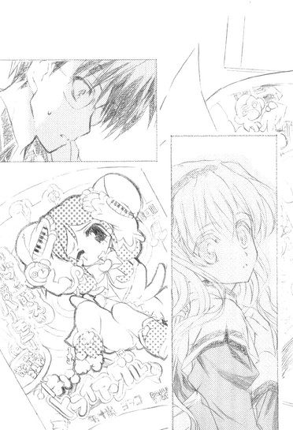

| [五十嵐雄策] 乃木坂春香の秘密03 | |
| 五十嵐雄策 | |
| (2015) | |
|
乃木坂春香の秘密 ３
五十嵐雄策
|
底本データ
一頁17行 一行42文字 段組１段
乃木坂春香の秘密③
容姿端麗で才色兼備、『白銀の星屑』という二つ名まで持つ超お嬢様、乃木坂春香。彼女の秘密を共有し、俺たちの仲も少しは親密になれたかと思える夏休みが終わった。再開した学園生活では波風立てず穏便に過ごそうと思っていたのだが、アイドル的存在の春香と一緒にいるだけで......まあ、色々あるわけだ。
そして迎えた春香の誕生日。いきなり教室に現れたメイド隊に連れていかれた場所は、はるか南に位置する『ハッピースプリング島』だった。周囲にあるのは、エメラルドグリーンの海、雲一つない澄んだ青空、揺れるヤシの木、とてとてと走ってくる白い水着の春香──!?
お嬢様のシークレットラブコメ第三弾（はあと）
五十嵐雄策
五十嵐雄策の秘密③。第４回電撃ｈｐ短編小説賞の最優秀賞を受賞し、本作でデビュー。看香と同じ10月生まれ。凝ったものは作れないけど、料理が趣味。最近行ってないけど、釣りも趣味。十三時間飲み続けたこともある。......本編のネタは全て自分リスペクト？
イラスト：しゃあ
しゃあの秘密③。10月発売の「電撃帝王ｖｏｌ．７」、「電撃大王」２００５年12月号、自身の単行本『キョウハクＤＯＧ'ｓ』を描き終えて、やっと本編の作業に突入。軽く引きこもり中。

乃木坂春香の秘密 ３
夏が終わった。
九月。
いや気象学的にはまだ夏という季節が終わりを迎えたわけではないんだが（暦の上ではともあれ）、俺たちのような高校生にとっては夏休みの終わり＝夏の終わりと言っても過言ではない。八月の終わりは夏の終わりであり、九月の始まりは秋の始まりでもあるのだ。
そんな（精神的に）四季の分かれ目な時期。
巷では新学期が始まり、皆過ぎ去った楽しい夏の記憶に思いを馳せながらも、次第にいつも通りの平凡な日常へと戻っていく。
そして、それは俺にとっても例外ではない............はずであった。
というのは、まあ俺にはいわゆる夏らしい夏の思い出──例えばプールだとか海水浴だとか花火だとか──ってもんが皆無だったってのもあるんだが（唯一、〝夏こみ〟とやらくらいか）、それ以上に問題となるフレーズがある。
いつも通りの平凡な日常。
その中でも特に着目すべきは『平凡な』の部分。
そんなもんは春香と出会ったあの日以来、作り方を間違えたペットボトルロケットのごとく遥か空の彼方へとすっ飛んで行ってしまっていた。
この五ヶ月プラス夏休みの間に起こった様々な出来事。
それらはどれ一つとして決して『平凡』のカテゴリーに含まれるものではなかったと俺は思うし、客観的に見てもおそらくそうだろうとも思う。
いや勘違いしてもらうと困るが、別にそれがイヤだって言ってるわけじゃない。
春香といっしょにいること自体は楽しいし、むしろ色々と普通では味わえないようなことも経験できて、面白いとも思っている。それは俺の正直な気持ちだ。
ただ何というか、起こる出来事一つ一つのインパクトがいちいちあまりにも大きすぎて、初めて火を見た原始人のように少々戸惑っているだけなのである。驚きが先に立ちすぎていまいち感情の方がそれに付いてきてくれないような感じか。
──まあ色々と遠回しな前置きが長くなったが。
結局俺が何を言いたいのかというと。
やはりこの九月から始まる秋も、それに続く冬も、俺にとってそれまで経験したことのないこの上なくインパクトフルなものになったってことだけなんだがね。
第九話
０
文字通り怒濤のようだった夏休みが終わり九月になったにもかかわらず、まるでビニールハウス（大型）にでも入ったかのごとき暑さはちっともおさまらなくて、家を出た直後に回れ右してそのまま真っ直ぐにエアコンの効いた快適な室内へとダッシュで戻りたい衝動に駆られるようなそんな朝だった。
九月一日木曜日。
九月の始まりの一日目であり、夏休み明け最初の登校日でもある。
通学路の途中で会った知り合いたちから「おー、生きてたか」だの「宿題写させてくれー」だの「由香里先生の生着替え写真を売ってくれ！一枚五千円までなら出すぞ」だの実に友達甲斐のある言葉をかけられるも、それらを適当にスルーして進んでいく。
およそ一ヵ月半ぶりの学校。
とはいえ別に何が変わるってもんでもない。
いつも通りの真っ白な校舎。いつも通りの混み合う昇降口。いつも通りのムダに音が鳴るリノリウム製の廊下。全てが夏休み前のままである。
加えて教室でも。
「よう、裕人、元気にしてたか」
「ふむ、朝から萎れたナスビみたいに冴えない顔をしていますね」
「まあ綾瀬はいつもこうだろ。それより俺たちは今、スクール水着の視覚的利便性について熱く語り合っていたところだ。──お前はどう思う？」
「......」
永井、小川、竹浪の三バカたちは俺の席の周りで相変わらずそんなアホなことをのたまってるし、
「おはよう裕人ー。ねえねえ、昨日の深夜にやってた『はにトラ１ｓｔ劇場版～秘密の魔法は内角合わせて一八〇度～』の再放送、見たー？すごいんだよー、ドジっ娘アキちゃんが八面六臂の大活躍でねー......」
「......」
幼馴染みで腐れ縁の信長は信長で（隣のクラスのクセになぜかいる）、やっぱりこっちの都合などおかまいなしにワケノワカランことばかりを速射砲のようにたたみかけてくる。
まあこいつらとは夏休み中もたまに会ったりしていたわけだし、それにそもそもすでにここまでアレに完成されたパーソナリティ（方向性はともかく）の持ち主であるこの三人と一人が、たかだかひと夏を経たくらいでそうそう変わるわけがないしな。
何気なく周りに視線を送ってみるも、他のクラスメイトたちにもそんなに変わったところは見られないようだった。
教卓の前で男子たちがふざけ合い、窓際では女子たちが楽しそうに喋っていて、教室の中央では男女のグループが笑い合っている。
夏休み前と同じく、動物園のように賑やかな教室。
いつもと違うところといえば、クラスのあちこちで海がどうだったやら日焼けがどうやら、過ぎ去った夏の思い出についての会話が繰り広げられているくらいか。うーむ、平和だね。なべて世はこともなし。安寧平穏ってのはいいもんだ──
などと少々人生リタイア気味なことを考えていると。
「裕人さ～ん」
ふいに、耳心地のよいソプラノボイスが響いた。聞いているだけで脳からアルファ波がドバドバと大量放出されそうなヒーリングな声。
続いて小柄な人影がとてとてと人懐っこい仔犬みたいに駆け寄ってきた。同時にふんわりとした落ち着く香りが鼻をくすぐる。
「おはようございます。お元気にしてましたか？」
春香だった。
いつも通りの超美少女な顔立ちにスイートピーみたいな可憐な笑みを浮かべて、にこにことこっちを見ている。
「今日からまた新学期ですね。秋は色々と学校の行事がありますから、楽しみです」
だけどその表情と口調には、夏休み前よりもいっそう親しみがこめられているように感じられるのはおそらく俺の自意識過剰じゃない............と思う。──まあ夏休みには色々とあったしな。例えばピアノコンクールとか無口メイド長さんの尾行とか〝夏こみ〟とかお泊まり会とか春香父との対決とか。
「......」
......いや改めて考えてみると本当に色々あったな。十七年間生きてきて、こんなに（良くも悪くも）インパクトのあった夏休みは初めてかもしれん。これもやはり春香と知り合った賜物なんだろう。
「裕人さん、どうされましたか？」
考え込んでいると、春香が不思議そうな顔で覗き込んできた。
「あ、いや、何でもない」
「？」
さすがに当の本人を目の前にして春香のことを考えてましたとは言えんし。
春香はしばらく頭の上にハテナマークを浮かべていたが、
「それにしても、昨日は本当に楽しかったですね」
やがて、にっこりとそんなことを言い出した。
「昨日......」
その言葉であまり思い出したくなかった記憶がリフレインする。
昨日──すなわち夏休みの最終日。
乃木坂家へと遊びに行った俺は、春香とのこっ恥ずかしい会話を皆（美夏、秋穂さん、春香父、葉月さん、那波さん）にばっちり聞かれた挙句、何だかんだで夕食にまで付き合わされたのだった。そしてその席では美夏・秋穂さん・那波さんというある意味究極の小悪魔トリオに春香と二人セットでからかわれまくり、最初はむっつりと黙り込んでいたもののいつの間にかウイスキーを片手にしていた春香父には男の哲学及び経営学に加え素手でシロクマを倒した時の武勇伝について二時間ほどえんえんと語られ、それを見た葉月さんに「......まるで親子みたいですね」などと真顔で評されるという、ほとんど苦行に近い時間を過ごすことになった。
「お父様もお母様もすごく喜んでました。また機会があったら、何があっても絶対に裕人さんをお呼びしなさいって。お二人とも、裕人さんを好きになってくれたみたいで嬉しいです」
「......」
いや、気に入られるのはいいんだがな......
まあ物事には何でも良い面とちょっと困った面が存在するということである。
「あー、そ、それより課題はやってきたか？今日提出のとかけっこうあったよな」
とりあえず話題を転換することにした。
「はい、だいじょぶです。裕人さんはどうですか？」
「ん、俺はまあ、そこそこ」
八十パーセントくらいの達成率だ。俺にしてはかなり高い。
「ちゃんと出さないと、由香里先生とかは怖そうですよね」
イタズラっぽく笑う春香。
「......そうだな」
あの人の場合、怖いというか何をやらされるかリアルに恐ろしいが。
しばらくの間、俺たちはそんなたわいもない会話を交わしていた。
本当に何でもない、どこにでもあるような会話。だけど学校で春香とこんなやり取りをする日が来るなんて、半年前の俺には想像すらできなかったことだ。
ちなみにその間、傍らの信長及び三バカはディスカッション（そんな高尚なもんじゃないだろうが）に夢中でこちらに見向きもしなかった。......まあ、余計なことを突っ込まれるよりはその方がよほどマシなんだがな。
「あ、そうだ、裕人さん」
春香が何かを思い出したかのように胸の前でふわりと手を叩いた。
「ん？」
「あのですね、今日のお昼休みのことなんですが──」
だが何かを言いかけたところで、
「春香せんぱーい、おはようございまーす！」
突然、やたらとキャピキャピとした声（死語）が割り込んできた。
「おひさしぶりでーす！ 夏休みはどうでしたか？」
「ロンドンでピアノのコンクールがあったって聞きましたですぅ」
「............お元気そうで何よりです」
どこかで見たことがあるような女子の集団だった。
「ちょっと、あんた邪魔！」
「ぐおっ......」
ほとんど、というかあからさまに俺を押しのけて、ついでに押しのける際に強烈なヒジの一撃を加えて、強引に俺たちの間に押し入ってきた。この好戦的かつ排他的なやり口......まさかこいつら、いつか音楽室で見た春香の取り巻きか？
果たしてその推測は見事なまでに当たっていたようで、みぞおちを押さえながら机にうずくまる俺をコオロギでも見るような目で一瞥すると、女子どもは一直線に春香へと群がっていった。
「それでせんぱい、どうでした、夏休みは？」
「やっぱりコンクールはぶっちぎりの優勝ですよねぇ？」
「............春香様なら当然です」
「あ、あの......」
ハリケーンのような勢いで迫る取り巻きどもと、それに戸惑う春香。
──ああ、そういえば春香ってこういうポジションだったんだっけか。
机から顔だけを起こしてその様子を見ながら、学園内における俺たちの関係──ってかヒエラルキーの違いってもんを思い出していた。
学園の中で男女を問わず圧倒的な人気を誇る『白銀の星屑』。三桁を超える数のファンクラブ会員を擁し学園長までもが会員だとかいう噂もある、まさに学園のアイドル中のアイドル。
そしてそれに対して俺は何の特徴もない単なる一般人であり、ファンクラブ員からは春香にまとわりつくゴミムシ（加えてアキバ系）だと認識されている存在。
「......」
......いや、夏休みの間にすっかり忘れていた（忘れていたかった）事実をムリヤリに突きつけられた感じだな。
「それにしても春香せんぱい、何だか休み前よりもかわいくなったんじゃないですか？」
「え？」
取り巻きの一人が突然そんなことを言い出した。
「そうですよね～、もともと超絶美麗だったですけど、さらに磨きがかかった感じですぅ～」
「............キレイです、春香様」
「そ、そんなこと......」
春香が顔を赤くしてうつむく。
「ね、春香せんぱい、もしかして本当に夏の間に何かあったんですか？」
取り巻きの一人が春香に尋ねた。
「え、何か、ですか？」
「はい。その、例えば人生を変えちゃう燃えるようなひと夏の体験とか......きゃっ♪」
「............ひと夏の体験」
その質問に春香は少し考え込むような仕草で顔を伏せた。
「なーんて、そんなわけないですよね。言ってみただけです」
「そうですぅ、春香様に限ってそんなことあり得ませんよぉ」
「............あり得ません」
取り巻きたちは口を揃えてそんなことを言う。
だが春香はゆっくりと顔を上げ、
「えと......あったといえばあったかもしれません」
そんなことを言った。
「えっ!?」
シーン......
一瞬、クラス内が水を打ったかのように静まり返った。取り巻きの女子............どころかクラス中、果ては廊下を歩いていた生徒の視線までもが春香に集中する。
「ほ、ほんとですか？ な、何が、何があったんですかっ？」
「お、教えてくださいですぅ！」
「......春香様！」
「あ、そ、それは......」
恥ずかしそうに俺の方をちらちらと見ながら、小さくつぶやく。「その、色々......です」
「え？」
「楽しかったこと、嬉しかったこと、初めてだったこと......たくさんありました。でも詳しいことは秘密です」
そう言って、頬を赤らめた春香はにっこりと微笑んだ。
「......」
......いや春香さん。
言葉自体は間違ってないのかもしれんし、実際問題として詳しいことは話せないのかもしれんが、そういう意味ありげな態度は春香ファン及びその急先鋒である『星屑守護親衛隊』が多いこのクラスでは、マラッカ海峡のど真ん中を『海賊上等』のハタを振りながら単独航行するくらいに（俺にとって）デンジャラスだってことを少しは分かってほしいんだが......
案の定、周りで聞いていた一般クラスメイト達は、
「......い、色々ってなに？」
「......え、それはやっぱりあれでしょ？ チョメチョメとかパヤパヤとか──」
「ちょ、ちょめ？ ぱや？」
そんな適当なことを言い出し、
「は、春香せんぱいにっ!?」
「......春香様にヘンなことしたら、刺すって言いましたよねぇ？」
「............殺りましょう」
それとともに、取り巻きどもから百戦錬磨の傭兵が放つような強烈な殺気が熱線のごとくぶすぶすと突き刺さってきた。う、なんか四面楚歌というか孤立無援というか、すげぇスタンドアローンな空気だ。
「えと......？」
だが春香は春香でまったくもってそんな雰囲気に気付いていないし、
「だからだな、やはりスクール水着は旧式の方が......」
「えー、そうかなー。最近のやつもそれはそれでいいと思うけどなー」
「いや、それはだな......」
助けを求めようと周りを見ても、三バカプラス信長も相変わらずスクール水着談義にラフレシアを咲かせたままで、こっちのことなんてミジンコのため息ほども気にしちゃいない。
「......」
......とりあえず味方はゼロっぽいな。
右にはぽわんとした表情の春香、左には熱く議論を交わす三バカプラス信長という微妙な構図の中、周囲からの殺気はどんどんと増していく。......新学期初日から生命の危機という、今まで経験したこともなければこれからも一生経験したくなかった、実にイヤなシチュエーションだった。
「......」
そうしているうちにもますます強烈になっていく殺気。
これはもう腕の一本や二本くらいは覚悟しなきゃなるまいか......と、朝の教室にあるまじきネガティブな決意を固めかけたところで。
「は～い、みんな、お・は・よ・う♪」
ガラリと教室のドアが開いた。
「久しぶりね～。みんなの永遠のアイドル、クールビューティー美少女の由香里先生よ」
入ってきたのは、朝からすでに飲んでんじゃないかってくらいにテンション高めの音楽教師だった。いや美少女ってあんた......
「ん？ な～んかホラー映画のジェノサイドシーンみたいなイヤ～な雰囲気ね～」
教室の中を見渡しながら由香里さんは眉をひそめた。
「ほらほら～、何やってたのかは知らないけど、ロングホームルームを始めるからみんな席に着いて」
ぱんぱんと手を叩く。だが荒れ狂う鬼のごとく殺気立った取り巻きどもはなかなか引こうとはしない。
「む、なんかみんな反抗的ね～。事情はどうあれ、おねいさんに逆らうのは感心しないな。大人しく言うことを聞かないと、アレをやっちゃうわよ～」
「！」
その言葉に、エキサイトしていた取り巻きどもの動きがぴたりと止まった。同時に周囲を覆っていた殺気がすっと引いていく。
「......アレとまで言われちゃしかたありません」
「......命拾いしましたですねぇ」
「............私たちも自分の身体がかわいいですから」
そんな捨て台詞を残し、取り巻き及び『星屑守護親衛隊』の連中は各々のクラスや席へと戻っていった。......いや、アレって何なんだ？まあこのセクハラ教師のやることだから、おそらくは知らない方が身のためなんだろうが。
ともあれ、どうやらこの暑い時期にギプス生活を強いられることは避けられたみたいだった。いつもなら迷惑極まりない由香里さんのハイテンションなんだが、今ばかりはそれに心からの感謝を贈ってもいいかもしれん。
「それじゃロングホームルームを始めるわね～。日直、号令かけて～」
「きりーつ」
日直の橋本さんの声で、ようやく教室内は完全にいつもの雰囲気に戻ったのだった。
しかしまあ。
何というか、新学期の初日から実に頭の痛くなるスタートだね。
１
「は～い、みんな夏の間は元気にしてたかな～？ちょっと気になるあの娘とそのお付きのメイドちゃん、さらにはみんなの憧れセクシーな美人おねいさんを自分のお家に泊めて夏にもかかわらず鍋パーティーをした挙句、普段は飲み慣れないお酒を飲んで倒れちゃったセクシーな美人おねいさんをゴミのように放置して、自分だけちょっと気になるあの娘とよろしくやっちゃったりなんかしてないわよね～？」
ロングホームルームは、由香里さんのすげぇピンポイントかつ微妙に事実を歪曲したそんな一言から始まった。
「ま、いないとは思うけど。だけどもしもいた場合、そんな悪い子には今度また音楽じゅんびしつの掃除をやってもらうからね～。逃げちゃダメよ♪」
思いっきりこっちを見ながらウインクをする由香里さん。それはつまり余計なことを言われたくなかったら、前回の片付け（俺がやった）からまた僅か数ヶ月でプチ夢の島へと逆戻りしたあの音楽準備室を、俺一人で掃除しろってことか？......うわ、鬱だ。
「はい、そんなわけで私信はオシマイ。それじゃまずは出席を取るわね。呼ばれたら発情期のシマウマみたいに元気な声でちゃんと返事をするように～。──相原くん」
「はい」
「ん～、ちょっと元気が足りないかな。夏休み中に隣のクラスのカノジョと別れたりでもしたのかしら～？」
「うっ......」
相原の顔が苦痛に歪んだ。図星らしい。
「はい次、秋山くん」
「おすっ！」
「お、こっちはまたバナナを得たマウンテンゴリラのように元気ね～。でも海でのナンパは元気が良すぎてカラ回りしちゃったのかな～？」
「そ、それは......」
「次は──」
と、教卓の上でまるで担任教師のように点呼をする由香里さん（副担任）。
ちなみに本来二年一組の担任であるところの田鍋繁夫（三十八歳、担当世界史、独身）のもっさりとした姿は教室内にはない。何でも夏休み中に人生一〇一回目となるお見合いに盛大に失敗して、その傷を癒すために自分探しの旅に出たとか何とか。ヴァーバリアンみたいな外見に似合わず、けっこうリリカルなんだな、あのおっさん。
「──最後に渡辺くんっと。はい、全員出席ね。よしよし、偉いわよ～」
出席を取り終わると、由香里さんは今後の予定について話し出した。
「はい、今日はこのホームルームが終わったら体育館で全校集会があります。イヤミ学年主任の長ったらしい上にあんまり使えないお話とかがあるけど、そのヘンは適当に聞き流しておけばいいから～。で、その後通常通りの授業に入る予定よ～。おっけ～？」
教師として極めて不適切な発言があった気もするが、もはやこの人に至ってはそんなもんはデフォルトどころか日常茶飯事なので、それについては今さらだれも突っ込まない。
代わりに台詞の後半部分について、小さな不満の声が辺りから漏れる。
休み明け初日からのフルタイム授業（放課後の掃除付き）。
白城学園は前期と後期の二期制であるからしかたがないとはいえ、夏休みでほどよく脳がボイルドエッグされた大半の生徒（俺含む）にとっては、ほとんどイヤガラセに近いようなカリキュラムである。
「まあ大変かもしれないけど、これも犬に噛まれたとでも思ってがんばって～。ほら、若いうちの苦労は恋人を質に叩き入れたお金で買ってでもしろっていうじゃない？うん、別に私が授業を受けるわけじゃないし」
「......」
最後の一言がなければそれなりにイイコトを言ってるのにな、この人。
「あ、それと明後日からみんなのお待ちかねな期末試験があるのは分かってるわよね？ちなみに他の教科はどうでもいいけど、音楽で赤点なんて取ろうものなら、カエルの歌の一人輪唱をやらせるから覚悟しとくように」
えー、と今度はあからさまに不満そうな声が上がった。
「こらこら、そんなイヤそうな顔しない。代わりと言っちゃなんだけど、優良点を取った人には私からご・ほ・う・び♪をあげちゃうわよ～」
うおー、と男子のほとんどと女子の一部から嬉しそうな声が上がった。......うーむ、見事なまでにアメとムチとを使い分けてるな。でもこの人のことだから、優良点はギリギリのラインで取れそうで取れないレベルに設定してるに違いない。そういうところは実に有能な人なのである。
「は～い、じゃそろそろ体育館の方へ移動するわよ。遅れるとまた私がイヤミ言われるから全速力で迅速に移動するように」
ぱんぱんと両手を叩く由香里さん。
いや。
廊下を走って移動したらそれだけでクレームが来ると思うんだけどな。
で、体育館。
「あ～、そういうわけだから、諸君らもいつまでも夏季自宅学習期間気分を引きずっていないで、白城学園の生徒としての自覚と誇りをもって、勉学にスポーツにはげみつつも、慈愛やボランティアの精神を忘れずに、およそ一年半後に迫った受験に備え今から万全の......」
全校集会の前半は、由香里さんの言った通り、学年主任の英語教師（イヤミ）のムダに長いうえに要点を得ない訓示で過ぎていった。
「だいたい試験や受験などというものは日頃からの準備と努力がものをいうのだ。にもかかわらず最近は大して努力もせずに高望みばかりをする者が増えてきて、非常に嘆かわしいことである。こんなことだから最近の世界情勢は悪化の一途を辿り、日本の政治経済は停滞し、その煽りを受けて私の月々の小遣いも減っていく一方なのだ！まったく、なっとらん！」
しかも最初こそまともだった話の内容も、途中から脇道へと逸れていき、次第にただの愚痴の様相を呈してきていた。
「月々五千円なんてあり得ないだろう！子供の小遣いじゃあるまいし、こっちには大人の付き合いというものがあるんだ。五千円じゃ週末の飲み会にすらまともに参加できん！それをやれ家のリフォーム費用だ犬の食費だと......」
興奮してきたのか、ばんばんと壇上のマイク台を叩きながらわめきまくる。......たまってるな。
「あ、あー、川角先生。お話の途中なのですが、そろそろ時間が押していますので......」
いいかげんに見かねたんだろう、他の教師が止めに入った。
「いや、私にはまだ話すことが......」
「わ、分かりましたから、それはまた週末の飲み会ででも......」
「ええい、だからその飲み会ができんと言っておるのだ！」
とうとう暴れ出す学年主任。
「い、いいからちょつとこっち来てください。ご、権田原くん！」
「うす」
「は、離せ！」
要請を受けた体育教師（権田原熊男。二十四歳。独身）に半ば引きずられるようにして、学年主任の英語教師は壇上から退場していった。最後まで「わ、私は悪くない！悪いのはこの醜く歪んだ現代社会だー！」などと大声で叫んでいた。......しかしセクハラ音楽教師といい自分探し世界史教師といい、まともな教師はいないのかね、この学校。
「は、はい。学年主任の川角先生の鬱屈した家庭事情──じゃなくて、ありがたい訓示でした」
司会役の古典教師が、取り繕うようにしてそうまとめた。
「では続いて、夏休みの間に様々な方面で活躍した生徒のみなさんの、表彰式を執り行いたいと思います。──学園長先生、どうぞ」
「あ～、はいはい。おっとっと」
呼ばれてよぼよぼと覚束ない足取りで出て来たのは我らが白城学園の学園長先生。今年で年齢が三桁の大台に乗ると噂される、外見的には半ば生きた化石みたいな老人である。
「あ、あ～......そ、それではこれより表彰に入りますじゃ」
ぷるぷると震える手、かくかくと勝手に動くアゴ。今にも消え入らんばかりの幽かな声がマイクからお経のように響いてくる。......いや大丈夫なのか？なんか今にもぽっくりと逝きそうな雰囲気が全身から漂ってるんだが......
「ま、まずは～......第十三回全国五目並べ大会第八位、大川一郎くん......」
「はい！」
「あ～、お、おめでとう......」
「ありがとうございます」
「次は～......、町内相撲大会第三位、大山田大介くん......」
「うすっ！」
名前を呼ばれて、一人ずつ壇上で賞状のようなものを授与されていく。
うーむ、夏休みの間に頑張ってたやつってのはけっこういるもんなんだな。帰宅部な上に特にこれといった熱中できる趣味もない俺からしてみれば、それだけで素直にすごいと思える。
「ええ～、それでは最後になります。うおっほん」
学園長、何やら咳払いをして姿勢を正すと、
「......全国書道コンクール高校生部門第一位、活け花月影流展金賞、全国高校生茶道大会優勝、神薙流古武術流内大会十八歳以下の部第一位──」
どんどんと列挙されていく賞の数々。いや、そんだけの賞を一人で獲ったってのか？そんなとんでもないマネをいったいだれが──
「そしてロンドン国際クラシックピアノコンクール第一位。──乃木坂春香さん」
「はい」
──って、春香だった。
鈴の鳴るような声で返事をして、ゆっくりと学園長の方へと向かっていく。
......でもまあ、そりゃそうだよな。冷静に考えてみればそんなこと（賞複数獲り）をやりそうなやつなんて、春香以外にあり得ない。にしてもピアノの他にもこんなに獲りまくってたのか......
「お、おめでとう......」
「ありがとうございます」
嬉しそうに微笑んで、賞状を受け取る春香。
「それではここで、特別に乃木坂さんにピアノで一曲弾いてもらいます。曲は、ええと......ショパン作曲エチュード OP25-1『エオリアン・ハープ』です」
古典教師の言葉にこくりとうなずき、春香はいつものとてとてとした頼りない足取りでグランドピアノへと歩いていく。そして──
「......」
流れるような旋律だった。
キレイで、可憐で、心にすっと染み入ってくるような音の奔流。
相変わらず俺には音楽のことはよく分からんが、それでも春香の演奏だけは他のやつの演奏と聴き分けられる自信がある。春香の演奏はそういったものだった。
曲は僅か二分半くらいの短いものだったが、演奏が終わる頃には、まるで心地のよい幸せな夢から覚めたかのような不思議な感覚が体育館中を包んでいた。
「......すげぇ」
だれかがそうぼそりとつぶやいたのを皮切りに。
「きゃー、春香様ー!!」
「ステキですぅ!!」
「俺と結婚してくれー!!」
至るところから沸き上がる拍手と歓声。まるで山鳴りのように、体育館を揺らす。
「は、春香ちゃん、ぶ、ぶらぼぉ～！」
その中に、さっきまでほとんど死にそうだった学園長がまるでやばい実験薬でも飲んだハツカネズミのように活き活きと両腕を振り回している姿があったことについては......見なかったことにしよう。てか学園長もファンクラブ員だって噂、本当だったんだな。
「ご静聴、ありがとうございました」
鳴り止まない拍手の中、ぺこりと頭を下げて春香が壇上から降りようとする。その瞬間、
「お......」
「あ......」
あり得ないくらいの確率で、俺と春香の目がぴたりと合った。
春香は最初、ちょっと驚いたような顔をしていたが。
「......（にっこり）」
やがてすぐに、妖精みたいな笑顔で小さくぱたぱたと手を振ってくれた。う、かわいい......。緩む頬を押さえながらこちらも手を振り返していると。
「......あいつ、なに？」
「何で乃木坂さん、あの男に手を振ってんの？」
「つーか、あの男もあの男でにやけた顔で振り返してるし......」
......しまった。
つい何も考えずに反応しちまったが、この白城学園においてこんな公衆の面前で春香と手を振り合うなんてことは、ほとんど全校生徒にケンカを売ってるのと同義なんだよな。
だが気付いた時にはもう後の京都祇園祭りってやつである。
「......（殺）」
「......（死）」
「......（滅）」
周囲三六〇度から飛んでくる「殺っちまうぞこらぁ！」な視線。
加えて。
「は、春香ちゃんが......」
壇上の学園長までもが、餓えたオオカミのような鋭い眼光で、マブタに覆いかぶさらんばかりに伸びた眉毛の向こうからこっちを一直線に睨んでいた。
「お、おのれ......許すまじじゃ......」
それはもう、明らかに何か一線を越えちまった人間の目である。
「......」
......なんつーか。
俺、もしかしたらもう転校した方がいいのかもしれんな。
まあだいたいそんな感じで、午前中は過ぎていった。
２
当たり前だが、午前と午後の間には昼休みがある。
午前の戦いの疲れを癒し、午後の勝負に向けて体力を蓄える貴重な補給時間（大げさ）。
「やっと昼休みか......」
朝から取り巻き及びファンクラブ員に睨まれ、ホームルームでは今学期中の音楽準備室の掃除を強制的に押し付けられ、全校集会ではファンクラブ員のみならず全校生徒・学園長にまで「殺っちまいたい人物ＮＯ．１」としてインプットされるに至り、すっかり疲れ切っていた俺は、頭の皿が乾ききった河童のごとくぐったりと机の上に突っ伏していたところ、
「あ、あの裕人さん」
くいくいっとどこからか制服の袖を引っ張られた。
「ん？」
「えと、今っておヒマでしょうか？」
顔を上げると、そこには何やら手提げ袋のようなものを片手に、制服の袖を引っ張っている春香の姿があった。
「ん、まあ大丈夫だが......どうしたんだ？」
「実はちょっとお話ししたいことがありまして......」
「話したいこと？」
「はい」
こっくりとうなずく。
そういえば朝の時点で何かを言いかけてたような気がしたな。取り巻きどもに邪魔されてあの時は結局確認できなかったが。
「それで、その、よろしかったら少しばかりお時間をいただけないかと......」
「ああ、それはいいが......」
ちらりと周りに視線をやる。
「おい、春香様が──」
「またあのヤロウか......」
「許せないですぅ～......」
即座に返ってくる突き刺さるような殺気。全校集会の一件の影響か、ファンクラブ員のみならずそのヘンを歩いてる一般生徒までもが指名手配犯を見るような目でじろじろとこっちを見てくる。......春香の話の内容が何かは分からんが、少なくともここ（教室）でするのは得策と言えないのだけは確実だな。
「......中庭とかでもいいか？」
可能な限り、なるべく人目に付かない場所の方が都合がいい。そしてこの時期にその条件を満たす場所となると屋上か中庭かだが、暑さのことを考えると日除けとなる木陰のある中庭の方いいだろう。
「えーと......はい。中庭ならだいじょぶです」
「んじゃ、さっさと行こう」
「あ──」
いつまでもここにいるとファンクラブの連中に呪い殺されそうである。春香の背中を押して、俺は逃げるように（実際逃げるんだが）教室を出た。
後ろからは、
「あ、逃亡しやがったあのヤロウ！」
「春香様をかどわかしたのか！」
「あ、あ、あんなに春香様の身体にべったりと触れていますぅ！許せないですよ～！」
怨嗟と怨念の声が次々と飛んできたが、とりあえずもう聞かなかったことにした。
思った通りというか、中庭にはほとんど人の姿はなく閑散としていた。
まあいかに木陰があるとはいえ今日はこのほとんど南半球的な暑さである。大抵のやつらは緑に囲まれるというマイナスイオン的自然的快適さよりも、エアコンの効いた屋内でのんびりするという即物的近代的快適さを好んだとしても何ら不思議じゃないってことだ。
「よし、大丈夫だな......」
右よし左よし。確認のためいちおう周りを見るも怪しいやつらはいない。上を見た時に校舎の屋上で何かがキラリと光ったような気もしたが、距離も離れてるし、あれはきっと関係ないだろう。
「とりあえずベンチにでも──ん？」
隣を見ると春香の姿が消えていた。
「春香？」
あれ、どこ行ったんだ？ カラスのごとく辺りを見回し......
「んしょ、んしょ」
何やら、中庭中央にある芝生付近でいそいそと作業をしている春香を発見した。
「あ、裕人さん、ちょっと待ってください。すぐに準備ができますから──」
芝生の上にゴザのような敷物を広げながら春香が答える。いや準備って？
首をひねる俺の前で春香はきゅっきゅっと敷物のシワを丁寧に伸ばすと、今度は何やら峠の茶屋とかで使われていそうな日除けの傘（？）を立て始めた。それが終わると、どこからか釜みたいなモノを取り出しゴザの上に並べていった。
「はい、支度が整いました。こちらへどうぞ、裕人さん」
ようやく準備が終わったのか、にっこりと笑って春香が手招きをしてきた。
「......あー、これは何なんだ？」
クツを脱いでゴザに上がりつつ尋ねる。日除けの傘やら釜やら、明らかにこの場（昼休みの中庭）に似つかわしくないモノばかりだ。
すると春香はおっとりとこう答えた。
「野点の準備です」
「は？ のだ──？」
「はい」
何のこっちゃ？
ワケが分からず成り行きを見守るしかない俺の横で、春香は慣れた手付きで茶碗に緑色の粉を入れ、ハケのようなものでしゃかしゃかとかき混ぜる。中身がほどよく泡立ったところで、そっと茶碗を手渡してきた。
「できました。抹茶ですが、どうぞです」
「......」
......どうやらお茶を点ててたらしい。
「？ 何か？」
春香が不思議そうな顔で見上げてくる。
「いや......」
うーむ、相変わらず春香の行動にはいまいち理解しづらいもんがあるな。
とりあえず渡された抹茶をずすーっと飲んでいると、
「そ、それでお話なんですけれど......」
改まった口調で、春香がおずおずとそう切り出してきた。ああ、そういえば野点やら何やらで微妙に忘れかけてたが、それで呼び出されたんだっけか。
「ん、何なんだ、話って」
「は、はい、あの」
春香は少しの間もじもじとしていたが、
「こ、これを......」
「ん？」
やがて背後からか、どん、と巨大な黒い物体を取り出した。
「......あー、これは？」
段々に重ねられた直方体の物体。
俺の目とメガネが曇ってなければ、多段重ねのお重のように見えるんだが。というかそれ以外の何でもないだろう。
しかし何だってお重なんだ？ こんな巨大なもんをどこから取り出したのかってことはとりあえず置いておくことにして、なにゆえこの場にお重なんかが出て来るのかがかなり謎なんだが......
そびえ立つ重箱の前でその用途について思案していると、
「お、お弁当......です」
春香が小鳥の鳴くような声でそう言った。
「お弁当？」
「は、はい。あ、お弁当というのは外出先で食事をするために容器に入れて携帯する食べ物のことであって──」
いやそれくらいは分かるんだが。
「......まさか、俺のために？」
「は、はい」
こっくりと小さくうなずく春香。
「裕人さんには今まで色々とご面倒をかけてしまいました。〝夏こみ〟の時もお父様の時も、その前にもたくさん......。だからその、せめてもの感謝の気持ちというか、日頃のご愛顧にありがとうございますというか......」
なんかお中元の謳い文句みたいだな。というかそもそも、それら一連の出来事については別に面倒だとかこれっぽっちも思ってないんだが......
そんなことを考えていると、春香が不安そうな顔で見上げてきた。
「あ、あの、もしかしてご迷惑だったでしょうか......？私、こういうことは初めてなので、よく分からなくて......」
「迷惑なんてまさか！」
〇・一秒で否定する。
まかり間違っても迷惑なんてことは確実に絶対に百二十パーセントあり得ない。
そうじゃなくて、よもやあの『白銀の星屑』が俺に弁当（しかも巨大お重）を作ってきてくれるなんて、そんなほとんどパラダイスというかアルカディアな日が来ることがあろうとは白昼夢にも思っていなかったため、ただ単純に喜びのあまり困惑してるだけなのである。
「で、でしたらよろしければ──」
「ああ、ありがたく食べさせてもらう」
「ほ、ほんとですか？ 良かった......」
春香の顔がお日様みたいにぱっと輝いた。「やっぱりお母様の言った通りでした......」
「？」
「あ、な、何でもないです。それじゃ開けますね」
春香が重箱を上から順に降ろしていく。すると──
「おお」
五段重ねのお重から姿を現したのは......まばゆいばかりの輝きを放つ、この上ないくらい美味そうな料理の数々だった。普段はとてもお目にかかれないような高級食材がわんさか。これはまさかアワビってやつか？こっちにはなぜか夏にもかかわらずマツタケがあって、重箱のど真ん中にデン！と殿様のごとく偉そうに鎮座しているのは伊勢エビだろう。
「すげぇ......」
まるでどこぞの高級懐石かってくらいの豪華さだった。
「これ全部......春香が作ったのか？」
「あ、いえ。難しいところはお母様や葉月さん、那波さんにも手伝ってもらいました。やっぱりこれくらいになると、お母様の仕込みがないと難しくて......」
そういえば秋穂さんは料理学校の校長をしてるって話だったか。まあそれにしたってほとんどは春香が作ったってことだよな？すごいことには変わりはない。
そう口にすると、
「そ、そんなことないです......」
春香が照れたように顔をうつむかせた。
「あ、そ、それより、よかったらお取りしましょうか？」
「ああ、頼む」
「はい。食べたいのがあったら言ってくださいね」
嬉しそうにうなずいて、春香が（これまたどこから取り出したのか）陶製の皿に漆塗りの立派な箸で料理をよそっていく。
「どうぞです」
「さんきゅ」
たっぷりと料理の盛られた皿が俺の前に置かれ、
「んじゃ、いただきます」
さっそく食べようとしたところで、
「あ！ 裕人さん、待ってください」
春香がくいっと袖を引っ張って俺の腕の動きをとめた。
「ん？」
「あ、あのですね......」
「？」
何やらものすごく緊張した顔で春香は、俺の前に置いてあった皿を手に取ると、
「あ、あ～ん」
動物園で初めて馬にニンジンをあげる幼稚園児みたいなぎこちない手付きで、マツタケを摘んだ箸を差し出してきた。
「......」
「あ、あ～ん」
「............あー、それは？」
こめかみを指で押さえながら尋ねると、春香は目をぱちくりとさせてこう答えた。
「あ、え？ な、何かまずかったですか？」
「いやまずいとかじゃなくてだな......」
何だってそんなこと（あ～ん）をしているんだって話である。好意自体はありがたいとはいえ、別に一人で食べられるんだが......
「で、でも、男の人といっしょにお弁当を食べる時には必ずこうするものだと、お母様が言っていたのですが......」
「......」
「も、もしかして私。何か手順や作法を間違っていましたか？ど、どうしましょう......」
わたわたと慌てる春香。
......いや秋穂さん。
微笑ましいだろうことは分かるんですが、頼むから実の娘に大嘘を教えるはやめてください。
あの人のことだからきっとのんびりにこにこな笑顔で『殿方と二人でお食事をする時には、女性がお箸でもって殿方に食べさせてさしあげるのが嗜みなのですよ。ああ、もちろんその時の掛け声は〝あ～ん〟ですから、うふふ』などと言ったんだろう。その時の画が実に鮮明に頭に浮かんでくるな。
「あ、そ、そういえばお箸を差し出す時には左手を添えるように那波さんに言われていました。確か右手の斜め下三十度に支えるように添えるとか......。分かりました。それが足りなかったんですね」
納得したかのようにうんうんとうなずき、
「あ、あ～ん」
今度は左手付きで箸を差し出してくる春香。自分のやってることの客観的な意味は分かっていなくても、やっぱり何となく本能で恥ずかしさを感じてはいるのか、微妙に頬を染めている。
「......」
さて。
これにはどう対処したらいいのか。
とりあえずこの行動の裏には秋穂さんやら那波さんやらが絡んでることは分かったが、それはまたそれである。せっかく春香が「あ～ん」をしてくれてるんだから食べないってのはマナー（？）に反するだろうし、しかしだからといって勧められるがままに「あ～ん」をするのもめちゃくちゃこっ恥ずかしい気がする。や、別にだれが見てるってわけでもないんだが何となく個人的に。
うーむ......
悩むこと一秒。
──しかしまあ、これはあれだ。
結局こんなのはただ料理を食べさせてもらうだけであって、「あ～ん」だの何だのと意識するから恥ずかしいだけなんだよ。うむ、そうに違いない。だからヘタに意識することなくここは春香の勧めに従ってしまうのがきっと吉だ。──と、結論付けることにした。
「あ、あーん」
心を無にして、飼い主にエサをもらうインコのように差し出された箸に向けて口を開く。
「は、はい。どうぞです」
そこに春香が、そっとマツタケを運んでくれた。
「ど、どうでしょうか、お味の方は......」
「ウマイ......」
「え？」
「めちゃくちゃウマイ、これ」
「ほんとですか？」
「ああ」
春香の料理は、見た目通りというか何というか、絶品だった。いや俺自身は最高級マスクメロンとマヨネーズをかけたキュウリの区別も付かないくらいの舌レベルなんだが、それでもこの料理がハンパじゃなくウマイことくらいは分かる。
「あ、ありがとうございますっ。そう言っていただけると、とっても嬉しいです」
本当に嬉しそうな顔で、春香はにっこりと笑った。う......「あ～ん」の時の恥ずかしそうな顔に引き続きその褒められた仔犬みたいな表情のダブルコンボに、思わずショットガンでもぶち込まれたみたいなインパクトが胸に奔る。かわいい......
「あ、あの、何か？」
俺の視線に気付いたのか、春香がこっちを見つめて訊いてくる。
「あ、いや。何でもない」
まさか見惚れてたとも言えないため、そう首を振って誤魔化した。
「？」
それからも、「あ～ん」をされつつ自分でも料理を食べつつ、まったりと昼食は進んでいったのだが。
「──あれ、裕人さん、ほっぺたに何か付いてます」
「え？」
ふと、春香が俺の顔を指差してそう言った。
「ご飯粒みたいです。ほら、そこに......」
「どこだ？ ここか？」
「あ、そっちじゃないです。こっちで......」
春香はそっと手を伸ばしその白魚のような指で米粒を取ると。
「はい、取れました」
「お、さんきゅ」
「いえ、どういたしまして」
にっこりと笑って、
ぱくり。
と、そのまま何のためらいもなく自分の口へと運んだ。
「は、春香......」
いやそれってある意味間接......じゃ──
「？」
最初、春香はきょとんとした顔で小首をかしげていたのだったが。
「あ──」
今度は、さすがの春香も気付いたみたいだった。
「──あ、わ、私......」
春香の顔がかーっと赤くなっていく。
「あ、ご、ごめんなさいです。その、私、あまり深く考えていなくて......」
「い、いや......」
慌ててぺこぺこと頭を下げる春香を見ていたら......何だろうね、何だか俺まで恥ずかしくなってきた。
「......」
「......」
真昼の中庭に、しばし真夜中の漁港のような沈黙が降りる。
「あー、と、とにかく食おう。時間がなくなる」
「は、はい。そうですね」
半ば誤魔化すように言った俺の言葉に、春香も慌てたように大きくうなずいた。
そんなどことなくぎこちない空気の中で昼メシが再開されたわけだが。
その最中。
「......」「......あ」
どちらともなく目が合ったり。
「お、この稲荷寿司ウマそう──」「そこにあるお稲荷さんがお勧めで──」
「え......」「あ......」
重箱から取ろうとした料理が見事にバッティングしたり。
「あのな、春香──」「あの、裕人さん──」
「あ、悪い。春香からいいぞ」「す、すみません、裕人さんから──」
かけようとした言葉がこれ以上ないってくらいのタイミングでかぶったりと。
なんか普段ではあり得ないようなシンクロニシティな現象が多々発生していた。
「な、何だかヘンですね」
「そ、そうだな」
互いに顔を見合わせてうつむく。
だけど不思議と気まずくはなかった。何だかそわそわと落ち着かないんだが、決して居辛いというわけではなく、むしろどこか親密というか居心地のよい雰囲気。雨の中、バス停で二人だけで雨宿りをしている時みたいな、そんな穏やかな空気が辺りを漂っていた。
うーむ、こういうのも悪くないかもしれん。
もう少しばかり、こんなゆったりとした時間が続いてくれてもいいな......と思ったその瞬間。
「う～ん、青春ね～」
「!?」
ふいに背後から声が響いた。
「青い春と書いて青春。いい言葉だと思わない？ていうか、な～んかこの辺りだけやけに気温が高い気がするのはおねいさんの錯覚かしらね～」
聞き慣れた明るくかつ能天気な声。
振り返るとそこには。
「や、裕くんに春香ちゃ～ん。こんにちは～♪」
「な......」
にんまりとした笑みを浮かべたセクハラ音楽教師が、お茶を飲みながら手をぱたぱたと振っていた。
「ゆ、由香里さん......」
「ゆ、由香里先生......」
「はいは～い、その通り。愛の伝道師、由香里おねいさんよ～」
セクハラ音楽教師は、相変わらず何かヤバイもの（ワライタケとか）でも食ったのかってくらいのハイテンションだった。
「いいわね～、『二人で初めてのお弁当』『ほっぺたについたご飯粒をばくり』『見つめ合ったまま二人の世界に入ってどきどき♪』......初々しくてもうおねいさんは見てらんないわ～」
きゃっ♪ と似合わない声を上げて自分の頬に両手を添える。心の底から楽しいモノを見たって顔だ。ったく、ほんとにこの人は......
「......って、ちょっと待て」
と、そこで気付いた。
何でこの人がそんなことまで知ってやがるんだ？『見つめ合ったまま～』うんぬんはともかくとして、『ほっぺたに～』についてはそれなりに前からいないと分からんはずだぞ？
「......ちなみに由香里さん、いつからここに？」
「え？ ちょっと前くらいからかな。春香ちゃんが『あ～ん』ってやってるあたり？」
訊くと、しれっとそんな風に答えやがった。......てことは、俺と春香の一連のこっ恥ずかしいやり取りを全部見られてたってことか？このセクハラ音楽教師に？うわ、最悪だ......
「ま、驚かすつもりはなかったのよ。でも何だかすっごくいい雰囲気だったからね～。あんなところで声をかけるほど、おねいさんはヤボじゃないわよ？」
「......」
だったら最後まで出て来るなと言いたい。
なんか、すっげぇ疲れた気分になった。
「......で、いったい何の用なんですか？」
どうせロクなことじゃないだろうってのは容易に想像がつくが、いちおう訊いてみると。
「何って、学食にゴハンを食べに行こうとしてたまたま通りかかったのよ～。ここって職員室から学食への抜け道だから。そしたらなんか裕くんと春香ちゃんがいるじゃない？何やってるのか気になってね～。ほら、ここはあんまり人通りが多くないし、私もいちおう副担任だし、裕くんが真昼間からケダモノになっちゃったら大変だもの」
「......」
やっぱりロクなことじゃなかった。てか世間一般ではそれをデバガメ行為と呼ぶ。
「でも全然心配なかったみたいね。てゆ～か、むしろいいとこでジャマしちゃって悪かったかな～って感じで。ごめんね、春香ちゃ～ん」
「あ、え、その私は......」
にやにや顔のセクハラ音楽教師に迫られ、真っ赤な顔になる春香。
「う～ん、その分かり易い反応。かわいいわ～♪」
「え、えと......」
よしよしと頭を撫でられて、春香は困った顔をしていた。
「で、それはそうとして～」
ひとしきり春香の頭を撫で回してから、由香里さんはちらりと横を見た。
「それ、春香ちゃんのお料理よね？ わ～、すっごく美味しそう」
「そ、そうですか？」
「うん。見てるだけでお腹がきゅるるるる～って壮絶に鳴ってきちゃうわ～。私、お昼まだだしね～」
獲物を狙う猛禽類のようにお重を凝視しながら言う。
「あ、あの、よかったら由香里先生もいっしょに食べますか？」
その言葉に、由香里さんのメガネの奥の瞳がきらりと光った。
「あら、いいの～？」
「はい、まだたくさんありますので」
「そう？ 悪いわね～。じゃ遠慮なく」
言うなりスーツのポケットから箸を取り出すと（......マイ・チョップスティック？）、一週間エサを抜かれたトラのような勢いで重箱に襲い掛かった。いやそこまで露骨に催促しといて悪いも何もないと思うんだがな。
「あ～、美味しい。春香ちゃんはきっといいお嫁さんになれるわよ～」
「あ、ありがとうございます」
そのままがつがつとひたすらに料理を食べ続けること五分。
「──ん？ 春香ちゃん、それって何かしら？」
ようやく少し満足したのか、お重から顔を上げた由香里さんがそう尋ねた。
「え、どれですか？」
「それよそれ、そこの隅にあるやつ」
由香里さんが指差していたのは、まだ一つだけフタが閉じられたままの重箱だった。ああ、そういえばそれはさっきから俺も気になってたんだよな。
「なんかフタの隙間から甲羅みたいなのが見えてるんだけど～」
「......」
......コウラ？
なんか今、昼メシの席にあるまじき単語が聞こえてこなかったか？
「あ、これですか？ これはですね──」
すると春香はかぱっと重箱を開け中身を見せてくれた。
「......」
そこにあったのは、まんまカメの甲羅だった。真ん中にぽっかりと丸い穴が開いていて、そこにピンク色をした半液体状の物体がフルフルと揺れているのが見える。
「............」
「............」
「これはスッポンのゼリーです。デザートですので最後にお出ししようと思っていたのですが......」
「スッポンの」
「......ゼリー？」
由香里さんと俺の声が見事につながった。
「はい。そうです」
こっくりとうなずく春香。
「お母様たちに持っていくように言われたんです。何でも、『殿方のお弁当に求められるものは、まず第一にスタミナです。そしてスタミナをつけるには何と言ってもスッポンが一番です。うふふ（お母様談）』『ええ、精力絶倫というやつですね～（那波さん談）』だとか......」
「......」
......またあの二人か。
本当に、心の底からこのイベント（？）を楽しんでるみたいだな。こっちとしては感謝半分迷惑半分って感じだが。
「あの、もしかして裕人さん、スッポンはお嫌いだったでしょうか......？」
春香が不安げに見上げてきた。
「え、いや......」
好きも嫌いも、スッポンなんて高級食材、生まれてこのかた口にしたこともないため分からん。しかもよく見るとうちのビッグガメラ（ミドリガメ）に似てるような気がして微妙に抵抗があったり。
戸惑う俺に、
「すみません、お嫌いだなんて知らなかったものですから......」
「あ......」
「これはお出しせずに持って帰りますね......」
しおれた花みたいにしょんぼりと春香が言った。何やらすごく落ち込んでいるらしい。スッポンなのに......
「裕く～ん、ここで食べなかったら男じゃないわよ？」
「う......」
にやにやと笑いながら由香里さんがヒジでわき腹をつんつんとつついてくる。
......まあ、覚悟を決めるか。見た目は色々とアレだが、春香の作ったものだし品質の方は保証されてるハズだ。......たぶん。
「あー、春香。それ、もらえるか？」
「え......？」
「デザートなんだろ？ その、何だ、スッポンのゼリー」
「で、でも......」
「そろそろさっぱりしたものが食べたかったんだ。──もらうぞ」
「あ......」
俺は春香の手からスッポンを奪い取り、そのピンク色の半液体を口へと運び──
「......」
「......」
「......ど、どうでしょうか？」
「あ、あー......」
何とも形容しがたい味だった。
苦いというか酸っぱいというか何やら薬のような味が口いっぱいに広がり、正直二口目を口にするのすら躊躇われる。これはおそらく春香の腕がどうこうというわけではなく、元々がこういった味なんだろう。
「......（どきどき）」
「......」
ともあれ、きらきらと期待に満ちた目でこっちを見つめる春香を前にしてまさかはっきりマズイとも言えず。
「う、うまいぞ......」
額から出る汗（脂汗）を隠しながら、しぼり出すようにして何とかそう答えた。
「ほんとですかっ」
「あ、ああ」
「でしたら遠慮せずにどんどん食べてください。これは全部裕人さん用ですから」
「え......」
「お代わりもありますよ」
にっこりと笑う春香。
「そ、そうだな......」
......マジですか。
「うんうん、裕くん。それでこそ男よ。がんばれ～、おねいさんも応援してるわよ～♪」
自分は少し離れたところでイモ羊羹をぱくつきながら、そんなことを言う由香里さん。
だったら少しは食うのを手伝ってくれ......と心の中で盛大に文句を言いつつ、俺はほとんどノドに流し込むようにゼリーのお代わりを口にしたのだった。
そんなこんなで、スッポンぜリーの何とも言えない味とともに昼休みは終わっていく──
３
五時間目、六時間目の授業は特にこれといったアクシデントもなく、普通に過ぎていった。そして放課後。
帰りのホームルームも終わり、特に用事もなかったため帰ろうとカバンに荷物を詰めて、何気なく教室を見回していると。
「──ん？」
「......（そわそわ）」
「......」
「......（うずうず）」
何やら、やたらと落ち着きのない春香を発見した。遠目から見ても分かるくらいにいてもたってもいられないような様子である。なんだ、何か緊急事態でもあったのか？
「......どうしたんだ、春香？」
「あ、ゆ、裕人さん」
気になったので声をかけてみると、春香は地獄で仏を見かけたような顔をした。
「何かあったのか？ 落し物でもしたとか？」
「い、いえ......」
「？」
「その......」
春香は少しの間迷っていたようだったが、やがて、
「じ、実は図書室に『イノセント・スマイル』の追加のバックナンバーが入荷されたというお話を、今そこで千代さんと八咲さんがしていたのを聞いたんです」
思い切ったかのようにそう言った。
「......」
あー、なるほど。
それは確かに春香にとってはかなりの緊急事態かもしれん。
ただ千代と八咲さんって......あの『狂犬』と『忠犬』の二人だよな？信長とかなら分かるんだが、何でまたあの二人がそんな話をしてたんだ？うーむ、不思議なこともあるもんだ。
春香は続ける。
「ですが入荷されたのがどのナンバーなのか分からなくて......もしかしたら持っているものかもしれませんし、持っていない貴重なものかもしれません。だとしたら借りたいと思うのですが......」
一人で行くのは不安ってわけか。まあその気持ちは痛いほど分かる。
なので。
「──なあ、いっしょに行くか？」
「え？」
そう提案した。
「図書室。行きたいんだろ？ 確認の意味も含めて。だったら付き合うぞ」
「そ、それは──はい。でもよろしいのですか......？」
「ああ、別にヒマだし」
それに春香一人で行かせると、またいつかのように図書室半壊事件とかを起こしかねんしな。
「あ、ありがとうございますっ。本当に裕人さんにはお世話になりっぱなしで......」
春香がぺこぺこと何度も頭を下げた。
「いや、それくらい別にいいってのに─────っ!?」
と、その瞬間。
背筋にぞくりとするような悪寒が奔った。
「............おい、あいつまた春香様と二人で............」
「......何で春香ちゃんがあんなヤツに頭を下げてんだ？」
「何か弱みでも握られてるんじゃないでしょうね？」
すでに本日何回目か分からん、周囲からの殺人鬼まがいな視線だった。
朝、午前、昼休みを経て、その数は当初の三倍くらいにまで膨れ上がっている。
......これはもう、後で信長に情報操作を頼んどかないと今後の学園生活に多大な支障をきたすことは確実だな。ていうか生命が危ない。やつに借りを作るとあとあと面倒なので（一日中買い物に付き合わされたり、よく分からないアニメＤＶＤをいっしょに鑑賞させられたり）あまり気が進まんのだが、この際、背に腹は代えられんだろう。
「裕人さん？」
内心のメランコリーが顔に出ていたのか、春香が心配そうに俺の顔を見た。
「......いや、何でもない。それより図書室だよな。行こう」
「あ、は、はい」
首をかしげる春香を促し、俺たちは図書室へと向かった。
それから三十分後。
心配していたようなトラブル（図書室半壊とか）は特になく、無事に『イノセント・スマイル』の貸し出しに成功した。
「～♪」
春香はご機嫌だった。
軽くスキップをしながら、俺の隣で楽しそうに『ドジっ娘アキちゃんのテーマソング』（であるらしい）を鼻歌で歌っている。
「今日はとってもいい日です（にっこり）」
弾んだ声でそう言って、春香は背中に背負っているカバンに目を向けた。そこに入っているのはもちろん、たった今借りてきたばかりの『イノセント・スマイル』である。
「これはずっと探していた号なんです。五年くらい前のもので『はにかみトライアングル１ｓｔ』が初掲載されているのですけど......当時はお小遣いが足りなくて買えなかったんです。だから嬉しくて嬉しくて」
春の訪れとともに雪の下から顔を出したフキノトウみたいなうきうきとした表情で春香が語る。まあ幸せそうなのはいいんだが、その微妙に浮かれすぎな様子を見てると、少しばかり心配になってくるな。
「......あんまはしゃいでると、また転んだりするぞ」
いつかのように廊下でハデに三回転半した挙句に所持品全てブチ撒けなんてことになったら目も当てられん。
「だいじょぶです。今回はちゃんと足下に気を付けていますから」
笑顔で両手をぐっと握り締める春香。
その言葉にまったくもって信用が置けないのは、ここ半年の付き合いで骨の髄まで分かっている。というか、そもそも何もない平地でつまずいて転ぶのが春香だしな。
それとなく春香の頼りない足取りに気を配りながら廊下を歩いていく。
「あ、そうだ。よろしかったら、裕人さんもうちに来ていっしょに『イノセント・スマイル』読みませんか？」
階段前の曲がり角を折れたところで、春香がそんなことを言った。
「俺も？」
「はい。やっぱり、一人で読むよりも裕人さんと二人で読んだ方が楽しいですし......。それに今日は葉月さんがおやつにクリームババロアを作るって言ってたんです。どうですか？」
「クリームババロアか......」
悪くないかもしれん。......それに秋穂さんや那波さんには（在宅してればだが）、昼メシの件について感謝の意とともに少々突っ込みたいこともあるし。
「んじゃ、お邪魔するかな」
「はいっ」
嬉しそうに春香がうなずく。
で、そんなことを話しているうちに昇降口まで辿り着いた。
放課後ということもありそれなりに人で賑わっている昇降口で、クツに履きかえるべくゲタ箱を見上げる。
「あっ──」
と、隣で最上段にあるゲタ箱を開けようと一生懸命に背伸びをしていた春香のポケットから、ころりと何かが落ちた。
金属音を響かせて地面に転がったのは、金色に輝く大きな鍵。それもカタチからしてただの鍵じゃなく、コピー不可能のウォーロック錠ってやつか？
「あ、これはあの宝箱の鍵なんです。お部屋に置いておくとどこかに失くしてしまいそうなので、いつも肌身離さず持っていることにしたんです」
春香がそう説明してくれた。
いや紛失って点では、家に置いておくよりも春香が持っている方がよっぽど危ない気がするんだが......という突っ込みはとりあえず心の内に秘めておくことにした。
「よいしょっと」
鍵を拾い上げようと、春香がしゃがみこむ。
悲劇が起こったのは、まさにその時だった。
......おそらくは、カバンの留め金をちゃんと閉めてなかったんだろうな。
どさどさどさ。
かがみこんだ拍子にパカッと開いた背中のカバンから、中に入っていた荷物がダイレクトに春香の頭に降り注ぎ。
「あ、あうっ」
頭の上でワンバウンドして。
ばさばさばさり。
そのまま重力に従って地面へと撒き散らされる。
それらの中には筆記用具やら教科書やら楽譜やらに混じって......やたらと原色な『イノセント・スマイル』があった。
「......い、いたた............」
「......」
「す、すみません......またやっちゃいまし──」
照れ臭そうに頭をさすっていた春香が顔を上げようとして。
「......あ、あれ？」
その視線が途中で止まった。
「え、え、あれ？ こ、これって......」

もちろんその先にあるのは『イノセント・スマイル』である。落下した勢いでたまたま開かれていたページには、現在の春香と同じように地面にへたり込みながら頭を押さえている蒼髪の少女（......ドジっ娘アキちゃん？）のイラストが、ページいっぱいにアップで描かれていた。
「あ、あ......」
状況を認識したのか、春香の顔色が化学反応を起こした検査紙のようにさっと変わる。同時にふらりとその小さな身体が傾いた。
「春香！」
ダッシュで駆け寄る。「──っ」
床に倒れるギリギリのところで何とか春香の身体をキャッチ。ついでに『イノセント・スマイル』を拾い上げ、制服のシャツ（俺のな）の中に隠した。ちなみに、風でさらにぱらりとめくれた『イノセント・スマイル』の次ページも蒼髪の少女が何やら顔色を真っ青に変えているシーンだったが、そんなのは今はどうでもいい。
「ふぅ......」
とりあえず一息吐くとともに、周りを見渡して状況確認をする。
どうやら春香が荷物をブチ撒けたことで注目はされているみたいだったが、幸いなことに『イノセント・スマイル』の方はバレてないようだった。
「春香、大丈夫だ」
腕の中の春香にそう声をかける。
「春香？」
「あ、わ、私、私」
だが、なんか目が虚ろだ。マズイ、これはもしかしてパニックモードに入っちまったか？
「春香！」
「わ、私......」
「平気だ。バレてないから」
両肩を掴んで揺すると、ようやく春香の瞳に少しだけ色が戻った。
「だい、じょうぶ......？」
「そうだ、大丈夫だ」
「ほ、ほんと......ですか......？」
「ああ、問題ない。うまく隠せた」
「よ、良かった......」
その瞬間、すっと春香の瞳から雫がこぼれた。
「!?」
「あ、ご、ごめんなさい......その、私、び、びっくりして......」
口ではそう言うものの、なおも春香の目からは涙が出てくる。あー、こういう場合はどうしたらいいんだ？ぬぐってやろうにもハンカチなんてしゃれたもんはやっぱり持ってない。ポケットティッシュならあるが、さすがにそれで涙をふき取るのはどうかと思う。
どう対応すべきか決めかねていると、
「おい、あいつ何やってんだ......？」
「知らねえけど、だれかを泣かして......ってあれ、春香様じゃねえか!?」
「春香様を......」
「強引に言い寄って泣かしただと......あのヤロウが」
いつの間にか、すげぇ不穏な空気が周りに発生していた。
「......」
まあ非常に不本意だが、客観的に見ると確かに俺が春香に迫って泣かしているように見えなくもない。というかそれ以外の何でもない。迫るダメ男・泣く美少女の構図である。ここはもうさっさと戦線離脱をするのが一番だな。
「......春香、立てるか？」
「あ、は、はい」
しゃがみこんでいた春香を立たせ、地面に散らばった荷物を手早く集めると。
「じゃ行くぞ！」
「あっ──」
春香の手を引いて、その場から走り出した。
「あのヤロウ、逃げやがった！」
「誘拐だ、誘拐！」
「だれか警察呼べ！ いや親衛隊だ！」
背後からは、それだけで空飛ぶ仔鳥の一羽二羽は撃墜できそうなほどの殺気と、ほとんど犯罪者に向かってかけられるような台詞のオンパレード。なんか今日はこんなのばっかだな......
心の中でアフリカゾウよりも重いため息を吐く。
とりあえず一つだけ確かなのは。
一刻も早く信長に情報操作を頼まなきゃならなくなっちまったってことだった。
４
ライオンから逃げるシマウマのごとき全力疾走で学園から離れ、やって来たのは近くにある公園だった。
「こ、ここまで来れば大丈夫か......」
肩で息をしながら後ろを振り向く。あの焼け付くようなおびただしい数の殺気は、すっかり消え去ってくれていた。
「やれやれ......」
少しだけ安堵して隣の春香を見る。
「......」
「春香......」
春香はもうパニックモードからは立ち直っていたが、その表情は沈んだままだった。まあ未遂に終わったとはいえ、二ヶ月前の悪夢（カタログ露出事件）の再来に近いことをやっちまったんだしな。落ち込むのはムリもないといえる。
「やっぱり......まだダメか？」
「......」
晴れて家族公認になって家の中では趣味を隠すことはなくなったとはいえ、それがそのまま学校でも適用されるかというと、また全然別問題のようだ。
無言のまま下を向く春香。
だけど俺としては、いつまでも春香にそんな過去のトラウマに縛られていてほしくないんだよな。そりゃ自分からカミングアウトしろとは言わんが、せめて何かの拍子に趣味がバレそうになった時に、あそこまでハデなリアクションを取らずに笑って流せるくらいになってくれればいいと思う。
「気持ちは分かるが......何ていうか、そんなに大げさに考えなくても大丈夫なんじゃないか？前にも言ったが、みんながみんなアキバ系に敵意を持ってるわけじゃないだろうし......」
「それは......」
俺の言葉に、春香は少しだけ反応した。
「......それに、だな」
「......？」
「あー、これも前に言ったが──何があっても俺は春香の味方だぞ？絶対に春香から離れることはない。だからその、春香が一人になることだけはないわけで......」
......相変わらず恥ずかしい台詞ばかりを言ってるな、俺。だけどそれが本心である以上、この場で春香にそれを伝えておくことは大事だと思うんだよ。
「裕人さん......」
春香がきゅっと制服の裾を握ってきた。「ありがとうございます......」
その寂しがり屋のウサギみたいに健気な仕草に、不謹慎ながら思わずドキリとしてしまう。
「裕人さんにそう言ってもらえることはとても嬉しいです。私も......できるものならそうしたいとも思ってます」
「じゃあ......」
「でも、でも......やっぱり、まだ怖いんです」
春香がふるふると首を振った。
「裕人さんが言うみたいに、全ての人たちがそういった趣味を否定するわけではないと理屈では分かっていても、裕人さんが傍にいてくれると心では分かっていても、どうしてもあの時のことが頭に浮かんで......」
あの時とはおそらく中学時代のことを言ってるんだろう。
「ごめんなさい......だから、私はまだみなさんの前では──」
すまなそうな顔でうつむく春香。
「......いや、こっちこそ結論を急ぎすぎた。悪い......」
春香にとって、中学時代のことはほとんどトラウマと言ってもいい出来事である。そんなトラウマを持ったことのない俺にはそれがどれほど苦しいものなのかは想像でしか分からんし、そもそもその出来事自体も春香の中ではトラウマの一言で片付けられるほど簡単なものじゃないんだろう。
頭を下げた俺に、春香は慌てたようにぱたぱたと手を振った。
「そ、そんな、謝らないでください。裕人さんの気持ちはとても嬉しかったんですから......」
「けどな......」
考えの足りないことを言っちまったことは事実だ。
「......そ、それに、そんなもっともらしい理由だけじゃなかったりします」
春香の声が少し小さくなった。
「え？」
「みなさんに趣味のことを知られたくない理由──です」
「......どういうことだ？」
すると春香はよりいっそう声を小さくして。
「......何だか、もったいないような気がするんです」
照れたような顔で、そう言った。
「もったいない？」
「は、はい。だって、その、このことは私と裕人さんしか知らない......私たちだけの『秘密』、ですよね？だから、大事にしておきたくて......。あ、ヘ、ヘンなことを言ってますよね、私。自分でもよく分からなくて......」
困ったように笑う春香。
まあ美夏や秋穂さん、春香父。葉月さんに那波さん、それにルコに由香里さん。春香の趣味について知っている人は俺以外にも何気にけっこういるんだが、春香が言いたいのはそういうことじゃないんだろう。
「か、勝手にこんなことを言ってご迷惑かもしれないですけれど......で、でも大切にしておきたいっていう気持ちは本当なんです。私と裕人さんとの『秘密』を......」
俺の手をきゅっと握ってくる。
「春香......」
その言葉を聞いて、嬉しくなった。
いやそりゃもちろん、春香が〝俺たちだけの『秘密』〟と言ってくれたことはそれ単体で天にも昇ってついでにそのまま星になっちまってもいいと思えるくらいに嬉しいんだが、それだけじゃなく春香の口から自分の趣味についての前向きな言葉が出て来たことについて、だ。
少しずつだが、春香も変わってきている。
今までの、皆に自分がプチアキバ系ということを知られたくないというある意味後ろ向きで消極的な理由だけじゃなくて、少しだけ前向きで積極的な理由で、趣味を隠しておきたいと考えるようになっている。
これだって、充分な進歩と言えるだろう。
「裕人、さん......？」
口元を綻ばせている俺を見て不審に思ったのか、心許なげな目で見上げてくる春香。
それに笑い返して、俺は言った。
「──そうだな」
「え......」
「せっかくだし、しばらくは俺たち二人だけの──綾瀬裕人と乃木坂春香の『秘密』にしておくのもいいかもしれないな」
「あ──」
春香は一瞬、その目をぱちぱちとさせて、
「は、はいっ」
そして満面の笑みで、大きくうなずいたのだった。
さて、これで何もかも一件落着と思いきや。
春香の家へと辿り着いた俺たちを待ち受けていたのは。
「あ～、おに～さん、来た来た～。ね、ね、お姉ちゃんに『あ～ん』された感想はどうだった？どきどきした？ふふ～♪」
「なっ......」
にやにや顔の美夏と、
「ご飯粒を取ってあげたのは、とってもいい行動でしたよ、春香。惜しむらくはそのやり方ね。直接口で取って差し上げれば完璧だったのに。うふふ」
「え、えっ？」
にこにこ顔の秋穂さん、
「裕人様～、せっかくいい雰囲気になられたのですから、もっと積極的にならないとダメですよ～。ああいう場面では男の人から押すべきだと私は思います～」
「......スッポンゼリーは健康にとてもよろしいのです」
にっこりと笑う那波さんに、一人真顔の葉月さんだった。
......い、いや何でこの人たちがそれを？
「さあ、どうしてでしょうね～？」
などとにこやかに笑う那波さんの手にはビデオカメラ（最新手ブレ防止機能付き）。
まさかあの時、校舎の屋上で光ってたのは......
「企業秘密です～」
とは言うものの、その楽しそうな声が全てを語っていた。
「......」
やられた......
そういえばこの人たちはこういう人たちだってことを忘れてた。
「ね、それでどうだったの？ ほらほら、感想を四百字詰め原稿用紙十枚以内で述べてみて～」
「あらあら、それは私もぜひ聞きたいですね、うふふ」
「楽しかったに決まってますよね～？ 離れた屋上までラブラブな雰囲気が伝わってきましたし～」
「......スッポンゼリーで精力バリバリ」
「......」
こうして、二日連続で美夏、秋穂さん、那波さんの三人（プラス葉月さん）にからかわれまくるという悪夢のような展開で、新学期の初日は幕を閉じたのだった。
第十話

０
十月に入って二回目の、ある日曜日のことだった。
朝の九時半。
部屋のベッドの中で昼寝中のナマケモノのように気持ちよくまどろんでいた俺は、
チャチャチャーン、チャチャチャーン、チャチャチャチャチャーン♪
「!?」
突然響いた『天国と地獄』（運動会とかでよくかけられているアレである）の賑やかな音に叩き起こされた。
「な、何だ？」
思わず辺りを見回しながら身体を起こす。
部屋いっぱいに鳴り響く音はかなりやかましい。そのやたらと軽快なリズムとも相まって、もはや騒音といっても差し支えのないレベルである。
どこで鳴ってるんだ......？
寝起きでトリのようにボケた頭でベッドの上から部屋内を見回す。
音の発生源はすぐに分かった。
ベッドの脇の勉強机。
その上でピカピカとライトを点滅させながら鳴り響いていたのは──俺の携帯電話だった。
いやこんな着信音を入力した覚えはないんだが......
首をひねりながらディスプレイに表示された発信者名を見る。
そこには、
『らぶり～美夏ちゃん（はあと）』
の文字（やはり入力した覚えなし）と、笑顔でピースをしているツインテール娘の写真（同じく取り込んだ覚えなし）がともに浮かび上がっていた。
「............」
ピッ。
とりあえず切った。
チャチャチャーン、チャチャチャーン、チャチャチャチャチャーン♪
三秒と間をおかず再び『天国と地獄』が鳴り響いた。
また切った。
チャチャチャーン、チャチャチャーン、チャチャチャチャチャーン♪
今度は一秒としない内に即座に鳴った。
「......」
しかたがないので出てみると──
「あ、やっと出た。おに～さん、おはよ～」
通話ボタンを押すなり電話の向こうから聞こえてきたのは、当然のごとく『らぶり～美夏ちゃん（はあと）』の声だった。
「美夏......」
「はい、おに～さん。まずはちゃんとお・は・よ・う。健全な朝はきちんとした挨拶から始まるんだから、おろそかにしちゃいけないよ（はあと）」
「......」
「お・は・よ・う」
「......オハヨウ」
「ん、よろしい♪」
俺の棒読みな挨拶に、それでも満足そうに美夏が笑った。
「にしてもおに～さん、なんかやけに出るのが遅かったね。それに真昼間に叩き起こされたフクロウみたいな声だし。あ、もしかして寝てたの？」
「......まあな」
もしかしても何も、完全完璧に寝てたんだが。
「え～、ダメだよ。もう九時半なんだから、元気な男の子は起きてお庭でラジオ体操でもしてなきゃ。あんま寝てばっかりいると薩摩の黒ブタになっちゃうよ？」
「......」
「あれ、松阪の霜降り牛だっけ？」
「......知らん」
そんなのどっちでもいい。
てかどっちも確実に違うだろ、それは。
「──そんなことより、こんな朝っぱらからどうしたんだ？何か用でもあったのか」
放っておくと話がどんどんとワケの分からない方向に行きそうだったのでそう言うと、
「あ、そだった。うん、あのね、きゃっ──！」
小さな悲鳴が聞こえた。
「どうした？」
「ちょっと巻いてたバスタオルが落ちちゃって」
「バスタオル......？」
何だって電話中にそんな単語が出て来るんだ？バスタオルといえばバス（風呂場）で使うタオルであり（当たり前だ）、そして電話は普通、風呂場で使われることはないものである。ゆえに両者が同時に使用されることなど通常は考えられないはずなんだが......
「ん～、今シャワーから上がったばっかりなんだよ。髪を乾かしてる時間がもったいないからその間におに～さんに電話してたんだけど、油断してたら落ちちゃった。えへ」
美夏はあっさりとそんなことを言った。
「やっぱりちゃんと結んどかないとダメだね。軽く巻いただけじゃすぐ落ちちゃうよ。バスローブの方がよかったかな～」
「......」
そういう問題じゃないだろ。
しかし言われてみれば、ルコのやつもしょっちゅうそういう横着なこと（髪を乾かしながら電話）をしてるな。もっともやつの場合は、盛大に素っ裸な上に片手にビールというオヤジなオプション付きだが。
「ん？ あれ～、おに～さん、静かだけど、もしかしてなんか想像しちゃってる？」
と、美夏のからかうような声が聞こえてきた。
「ほらほら、今のわたしは生まれたばっかの姿だよ。どきどきする？見てみたい？えへへ～♪」
「......」
わざわざ携帯を近づけているのか、バスタオルがはだけるような音が聞こえてくる。芸が細かいというか何というか......
「............特に用がないんなら切るぞ」
なんかもう、このツインテール娘が何のために電話をかけてきたんだかさっぱりだったためそう言うと、
「あ、待って待って！ 用はあるよ。大事な用があるから電話したんだってば！」
少し慌てた声が受話口の向こうから響いた。
「大事な用？」
「うん、そうそう。おに～さん、今日はもちろんヒマだよね？」
「いきなり断定形から入るのも引っかかるが......まあ、ヒマだ」
ルコのやつは昨日から由香里さんのアパートに泊まりに行っていていないし、信長も今日は何やらやる事（定期巡回がどうのこうの）があるとか言っていた。俺の休日の予定には九割方その三人が関わってるのが通常であるため、やつらがいない以上必然的に本日のスケジュールは空白ということになる。
「やっぱり～。おに～さんならそうだと思った」
すると美夏はうんうんと大きくうなずき、
「だったら今から出て来れるかな？ ちょっといっしょに付き合ってほしいところがあるんだ～。時間は十時でだいじょぶだよね？えっと、場所は──」
１
で、それから一時間後。
俺は美夏に指定された場所で待っていたわけだが......
「......何でここなんだ？」
思わず一人でつぶやいてしまった。
俺の目の前に広がるのは、半年近く前に訪れて以来の日本一の電気街。
何だか前に来た時よりも駅前がやたらと整備されているような気もするが、それ以外の部分は相変わらず人で溢れまくっていてムダに雑然としているこのアキハバラの街こそが、美夏の提示してきた待ち合わせ場所だった。いや春香じゃあるまいし、美夏が何だってこんなところに俺を呼び出したのかその意図がさっぱり分からん。
加えて。
「遅い......」
待ち合わせ時間であるところの午前十時から、すでに三十分ほどが経過していた。
「......」
なんつーか、場所も時間も全部自分で一方的に設定しておいて、しかも人に遅刻するなと念を押しておいて、自分が遅刻ってのは実にあのツインテール娘らしい。まあ、らしいからといって何でも正当化されるかといったらそれはまた激しく別問題なんだが。
そんなことを考えてるうちにも、
「あ、ケンくん、待ったぁ～」「ううん、僕も今来たところだから」
「ごめん恵ちゃん、遅くなって」「いいよ、気にしないで真一くん」
周りにいた同じように待ち合わせをしていたと思しきやつらは、どんどんと待ち人と合流して消えていき。
「なあなあ、あの人、さっきからずっとあそこにいるよな？」
「きっと待ち合わせでもすっぽかされたんだろ」
「はは、かわいそー」
残った俺には、周囲からの憐れむような視線と声がヤリのようにチクチクと降り注いでいた。
「......」
俺、何でこんなことしてるんだろうな？ なんかすげえ虚しくなってきた......
かくれんぼをしていて一人だけ存在を忘れられた子供のように黄昏た気分で空を見上げるも、だけど十月の空は雲一つないすっきりとした青空で、ことさらに我が身の虚しさをかき立てられて余計にブルーになった。......はあ。
美夏がやって来たのは、それからさらに三十分ほど経ってのことだった。
「おに～さ～ん」
明るい声とともに手をぶんぶん振りながら、自動改札の向こうから見慣れたツインテールが姿を現した。
途端に、周囲の視線が改札へと集中する。
「おい、あの娘、かわいくないか？」
「このヘンじゃあんまり見ない顔だけど......」
「キュートだ......」
さっきまで俺に向かって憐れみの視線を送っていた連中がざわりと色めきたった。辺りにいるその他の通行人たちの視線もそのほとんどが美夏へと注がれている。うーむ、春香といっしょにいるとあんまり感じないが、やっぱりこのツインテール娘もツインテール娘でめちゃくちゃ目立つ存在なんだな。
「ごめんね～、待った？」
そんな周囲の視線にはまったく気付かずに、美夏はひらひらとミニスカートの裾を揺らしながら俺のところまでやって来ると、片手を上げてえへっと笑った。
「え？ ていうかあの娘の待ち合わせ相手がアレ!?」
「ウソだろ、あんなのにこんなカワイイ娘が......」
「世も末だ......」
あからさまに俺を指差しながらさらにざわつく周囲の連中。いや確かに俺と美夏が色んな意味で不釣合いなのはまったくもって否定できんのだが......にしたってめちゃくちゃ失礼だな、こいつら。
少しばかりむかっときたが、まあこんな見知らぬ野次馬相手にとやかく言ってもしかたがないので、そこはぐっとガマンしておく。
それよりも今問題にすべきことは、
「......遅かったな」
こっちの遅刻ツインテール娘（一時間）である。
「確か待ち合わせ時間は十時じゃなかったか......？」
「あ～、や、うん」
俺の言葉に、美夏は気まずそうに目を逸らした。
「それはそうなんだけどね～。でも色々やってたら電車に乗り遅れちゃって......。あ、だけど待ってる間のどきどき感ってちょっと刺激的じゃなかった？ほら、宮本武蔵も巌流島の決闘にわざと遅れて行ったって話だし。なんてゆ～か、待ち合わせに遅れるのは日本人の美学？」
「それは全然違うだろ......」
思いっきり、完膚なきまでに問題のすり替えってやつである。
「だいたい自分で誘っといて遅れるってのが......」
「う......」
呆れた目で見ると、美夏は決まり悪そうにさらに顔を逸らした。
「だ、だってしょうがないじゃ～ん。これにはちゃんと事情があるんだよ」
「事情？」
「そだよ～、聞いて聞いて。あのね、せっかくのお出かけだから着ていく服をいっしょ～けんめい選んでたの。で、たっぷり時間をかけて選んだ服をばっちり着こなして玄関まで行ったんだけど、そこでこの前買ったばっかりのミュールに服が合ってないことに気付いてさ～、それで急いで部屋まで戻って着替えてたらいつの間にか時間が経っちゃってたんだもん。不可抗力だよ～」
「......」
......それは不可抗力なのか？
「だからほら、ここは笑って許してくれなきゃ。おかげで可愛く着こなせたことだし。男の子なら地中海みたいに広い心を持たないとだめだよ。ね、ね？」
また広いんだか狭いんだか微妙な例えを用いながらも、一生懸命に笑みを浮かべて謝ってくる美夏。
「ね、おに～さん（はあと）」
「......はあ」
何だかそんな姿を見てると、いつまでも文句を言ってるのがバカらしくなってきた。
「......分かった。反省してるならもういい」
「え、ほんとっ？」
美夏の表情がぱっと輝いた。
「ああ。今後気を付けるならそれで構わん」
ため息を吐きながらそう言うと、
「えへへ、だからおに～さんって好き」
美夏が甘えた仔猫のごとく俺の腕にぎゅっと抱きついてきた。
「お、おい」
「ごろごろ～」
な、何やら柔らかいモノが腕に当たるんだが......
しかし美夏はそんなことはまったく意に介さずに、
「えへへ～、今日はで～とだね、おに～さん♪」
「いやデートって......」
「ん、いいからいいから～。んじゃ行こ。しゅっぱ～つ！」
やたらと楽しそうな美夏に腕を引かれ、俺たちは歩き出した。
アキハバラの街は、相も変わらずの混沌空間だった。
いたるところにカラフルなポスターや看板が立ち並びまくった独特の街並み。辺りの店からはアニメソングやらゲームソングやらが響き、それらがまったく違和感なく街に溶け込んでいる。これでも一時よりは自粛してるらしい（信長談）ってんだから驚きだ。おまけに歩道ではミニスカートのメイドさんが何やらチラシのようなモノを道行く人々に配っていたりもしてるし。......普段から葉月さんやら那波さんやらでメイドさんは見慣れているとはいえ、こうして街の風景の中に普通にメイドさんがいる状況ってのは改めて見るとやっぱり奇異なもんだな。
「で、今日はここで何をするんだ？」
歩行者天国となっている大通りを歩きながら、美夏に尋ねる。
「あれ、言ってなかった？」
「ああ、まったくもって」
とりあえず呼び出されたから来ただけで、目的等については何一つ聞かされていない。
というか時間と場所だけ指定してすぐさま電話を切ったのはどこのどいつだ。
「そだっけ？ ん～、でもおに～さんもいい人だよね。理由も教えてもらえないのにわざわざ付き合ってくれるなんて。うん、すごいすごい♪」
「......」
......それは褒めてるのか？ けなしてるのか？すげぇ微妙だ......
「あ、それで今日はね、お買い物に付き合ってほしいの」
複雑な気分になる俺に、美夏がそう言った。
「て言ってもただのお買い物じゃないんだよ？大切な人にあげる大事なものなの。だからおに～さんの意見も聞きたいな～って思って」
「大切な人？」
「うん、そう」
ふっと真剣な顔になり、こくりとうなずく。「とっても、大切な人だよ」
その顔は見たことないほどマジメなものだった。
......それって、彼氏か何かだろうか。
「ん、な～にその顔。もしかしておに～さん、妬いてるの？」
美夏がにやりと笑う。
「ね、ね、やっぱり心配？ 気になる？じぇらし～？」
「ばっ、そうじゃなくてだな......」
「あ～、やっぱそ～なんだ？ うんうん、気持ちは分かるよ。こんなかわいい美夏ちゃんを前にして、気にならない方が男の子として間違ってるよね」
「だ、だから......」
違うってのに。いやまあ、確かにこのいつでも明るく屈託のない夏のヒマワリみたいな美夏が、真面目な顔で『大切な人』なんて言う相手に興味がないって言ったらウソになるんだが。うーむ......
そこはかとなく葛藤していると、
「な～んて、お姉ちゃんだよ」
美夏がぺろりと舌を出した。
「え？」
「再来週の木曜日がね、お姉ちゃんの誕生日なの。だからそのためになんかプレゼントを買おうと思って」
ぱちりと片目をつむりながら言う。
「ああ、なるほど──」
そういえばいつだったか、信長のやつがそんなこと（春香の誕生日＝十月二十日）を言ってたような気もしたな。そうか、もうすぐ春香の誕生日なのか......
「えへへ～、おに～さんはだれだと思ったのかな～」
「う......」
にまにまと笑いながら美夏が顔を寄せてくる。
「もしかしてカレシとかだと思った～？ あはは、だいじょぶだよ。心配しなくても、わたしの一番大切な男の子はおに～さんだから♪──って、こんなこと言ったらお姉ちゃんに誤解されちゃうか」
「......」
なんか俺、中学生（十四歳）に遊ばれてる......？
微妙な敗北感に打ちのめされる中、
「ま、それはともかく、当然おに～さんもお姉ちゃんにプレゼントを買うでしょ？ならいっしょに買いに行かないかな～って思ったの。だから呼んだんだよ」
美夏があっけらかんと笑って言った。
「......だったら最初からそう言ってくれ」
霜降り牛がどうだシャワーがどうだ言う前に、それを言うべきだろ。
「ん～、だって電話した時はあんま時間がなかったんだもん。それにお姉ちゃんほどじゃないけど、わたしだって習い事とかで色々と忙しいんだよ？」
「そうなのか？」
なんかこっちの元気印娘は、春香と違ってしょっちゅうヒマそうなイメージがあるんだが。
「そだよ～。今日だって朝からヴァイオリンのレッスンで大変だったんだから。やっと終わったと思ってシャワーの後に電話をかけたら、おに～さんはなかなか出てくれないし......」
恨みがましい目でじ～っと見上げてくる。
「あ、いや、悪かったな」
何だか、美夏も美夏で色々と大変らしい。
「ま、何だかんだでちゃんと来てくれたからい～けどさ。あ、それとこのことはもちろんお姉ちゃんにはナイショだよ。当日にいきなりプレゼントを渡して驚かせる計画なんだから」
「りょうかい」
サプライズイベントってやつか。
そんなことを話しながら俺たちはアキハバラの街を進んでいき。
「さっ、着いたよ」
そして俺たちが辿り着いた先は──
２
──なぜか、水着ショップだった。
「......おい」
いやアキハバラにこんなファッショナブルな店があること自体もかなり意外なんだが、それ以前に突っ込むべき問題がある。
「ん、どしたのおに～さん。しぶ～い柿でも食べたみたいな顔して」
「......何で俺たちはこんなところにいるんだ？」
「何でって、水着を買うからに決まってるじゃん。他になんかあるの？」
売り物の水着を片手に不思議そうな顔をする美夏。
いやそれくらい俺にも分かるわ。そうじゃなくてだな......
「もしかして春香に水着をプレゼントする気なのか？」
プレゼントに水着ってコンセプトは俺にはいまいち理解できんが、そうだとしたらいの一番にここに来た理由にも説明がつく。だが、
「え～、そんなわけないじゃん。違うよ～」
美夏はあっさりとそれを否定した。
「水着はプレゼントにするには難しいもん。サイズとかの問題もあるし、普通のお洋服とかよりも微妙な本人の好みがあるから色々と大変だし」
「だったら──」
本格的にいったいここに何をしに来たんだって話である。
「も～、おに～さんはせっかちだな～。分かってるって」
美夏が腰に両手を当てる。
「お姉ちゃんのプレゼントはこの後にちゃんと買うよ？だってそれがメインの目的だし。これはなんてゆうの、主菜に対する前菜？朝飯前のお茶漬け？そんな感じだってば。あ、これかわい～」
「......」
いやその目の輝きからして、どう見てもこっちがメインディッシュのように思えるのは俺の気のせいか？
「......だいたい、何だってこの時期に水着なんだ？」
いかに時折は暑い日もあるとはいえもう十月である。確かにこの時期セールは行われているが、来年のモノを買うにしてもそれをわざわざ今日買う理由が分からない。
「あ、いいところに気付いたね、おに～さん。でも今は秘密かな♪理由はきっと近いうちに分かるよ」
「？」
「だから楽しみにしててね♪」
美夏は何やら含みのある笑みを浮かべた。
「ね、それよりこれどうかな？ わたしに似合いそう？」
いまだに首を傾げる俺をヨソに、もうその話はこれで終わりとばかりに何やらカラフルな水着を手に訊いてくる。......しかたない。しばらくは美夏のペースに付き合うしかないか。
「......いいんじゃないのか？」
とはいえ俺には水着の良し悪しなんて分からん。なので半ば適当に答えると、
「ん～、なんかいまいちやる気が感じられないな～。やっぱお姉ちゃんのじゃないと気合が入らない？」
「な、ちが──」
濡れ衣を着せられた。
「またまた～、隠さなくてもい～のに。普段見てれば分かるかもしれないけど、お姉ちゃん、スタイルいいからね～。去年なんかは白のビキニを着てたんだけど、これがまたよく似合っててさ～」
「......」
思わず想像してしまう。
白いビキニを着た春香。潤んだ瞳に少し照れたような表情でこっちをじっと見つめて「きょ、今日の占いでラッキーカラーはホワイトとあったのでこれを選んでみたのですが、ど、どうでしょうか......？」なんて言いながらもじもじと胸の前で手を組んで............って、何を考えてんだ、俺は！
「あはは、ほんとおに～さんって分かり易いね～」
美夏がけらけらと笑う。
「べ、別に俺は......」
「そんなに隠さなくてもい～のに。おに～さんだって男の子なんだから♪」
「だ、だから......」
「あ、そうだ。とりあえずコレ試着してみよっと。すみませ～ん」
俺の抗弁を完璧にムシして、美夏は店員さんに声をかけると、そのままフィッティングルームへと消えていってしまった。
「違うってのに......」
完全に誤解されたままだった。
「......」
いやまあ。
そりゃあ見れるもんなら春香の水着姿（白ビキニ）は見てみたいとは思うがさ。
「お待たせ、おに～さん」
十分ほどして、美夏はフィッティングルームから出て来た。
「ね、ね、どうかな、これ」
美夏が着ているのは、さっき手に取っていた赤いビキニだった。くるりと一回転してポーズを取りながら、俺に感想を求めてくる。
「似合ってると思う？ ぷりてぃ～？」
「......」
「おに～さん？」
「ん、ああ」
明るい色使いのそのビキニは、確かに美夏によく似合っていた。というかそもそも水着姿の美夏自体が新鮮で、なかなか胸にクるものがある。端的に言えば......かなりかわいかった。
「......」
とはいえそれをそのままストレートに言うのも何となく気恥ずかしい。それに主観を超えた客観面でその水着が果たして本当にそこまで似合っているのか、そういった（女モノの水着の）センスがトノサマバッタのように疎い俺には正直いまいち自信が持てないんだよな。
「あー、いいと思うぞ」
なので無難というかお茶濁し的にそう答えたところ、
「ん～」
美夏は何やら思案顔になった。
「どうした？」
「そっか、これじゃまだダメか......」
「？」
「......何でもな～い。だったら──」
そんなことをつぶやきながら再びフィッティングルームへ戻って、
「ね、こっちは、こっちは？」
今度は水色のワンピース姿になって出て来た。腰に手を当てて片目をつむりながら訊いてくる。「どう、おかしくない？」
「問題ないんじゃないか？」
「む～」
だが美夏は、何が気に入らないのか微妙に眉をひそめてまたフィッティングルームへ、
「ね、これすっごくかわいいくない？ 自分でもけっこういいかな～って思うんだけど」
そしてカラフルなワンピース姿で三度ボーズを取る。
「ああ、そうだな。かわいいと──」
とそこで、美夏がジト目でこっちを見てることに気付いた。
「............おに～さん、ほんとにやる気がないね」
ものすごく不満そうな声。
「そう言われてもな......」
別にやる気がないわけではなく、単によく分からんだけなんだが......
「う～、なんか腹立つ。そだ、こうなったら......」
美夏は何やら息巻いて再びフィッティングルームへと消えていった。
「あ、おい......」
どうやらまだ選ぶつもりらしい。
しかし水着ねえ......
何だってそんなもん一つにあそこまでこだわるんだか俺にはよく分からん。水着なんて最低限のデザインセンスをクリアしていてサイズが合えばそれでいいと思うんだが。春香もやっぱりそうなんだろうか。とすれば例の白ビキニとやらもそこまでこだわり抜かれた末に選ばれた逸品でありその選択には春香の情熱と魂が込められているのかも......なんて少々、残暑で脳をヤラれた三バカレベルのことを考えていると。
「──裕人さん」
「!?」
ふいに後ろから声をかけられた。
聞こえてきたのは澄んだソプラノボイス。
振り返るとそこには──
「どうでしょう、これ......似合っていますか？」
白いビキニを着た............春香が立っていた。
「は、春香......？」
心臓がどくりとおかしな動きを見せる。
い、いや何で春香がここに？ あまりにも水着と春香のことばかりを考えすぎてたため、脳が幻覚でも見せてるのか？
「裕人さんのために選んだんです。......似合ってない、ですか？」
「え、あ......」
呆然とする俺に。
「......ぷっ」
「？」
「あ、あはは」
春香が、普段は絶対にしないような大声で笑い出した。
「あはははは。すごい顔～。おもしろ～い、おに～さん」
「え......」
「まだ分かんないの？ わたしだよ、わ・た・し♪」
イタズラっぽく笑いながら、春香（？）は緩いウェーブがかかったその長くキレイな髪を両手で掴んで頭の横に持っていく。すると春香（？）はよく見慣れたツインテール娘へと変化を遂げた。な......
「み、美夏、なのか......？」
目の前の春香→美夏がにまっと笑いながらうなずく。
「そだよ。なかなか上手かったでしょ？声は昔から似てるって言われてるし、顔はファンデーションでちょちょいって。ちなみに胸はパッドを入れて、身長はサンダルでゴマかしたの。......ちょ～っと不本意だけど」
「......」
完全に言葉を失う。
そりゃあ姉妹だから似てるとは思ってたが、まさかここまでとは......
「ね、おに～さん、どきどきした？」
美夏が小悪魔な顔で見上げてくる。
「ほんとにお姉ちゃんだと思ったでしょ？ 顔とか真っ赤だったよ～。や～ん、えっち」
「......ノーコメント」
「む、素直じゃないな～。ほれほれ、これでどう？──裕人さん」
再び髪を下ろし、偽春香となった美夏が迫ってくる。
「似合ってないでしょうか......私、この水着は裕人さんのためだけに選んだんですよ。ほら、せくし～ですか、うふ～ん♪」
「......春香はそんなこと言わん」
というかどこのセクハラ音楽教師だ。
「ほら、いいからとっとと水着を買って、プレゼントを選びに行くぞ」
偽だと分かっていても外見上はまったくもって春香であるため、ずっと見てると何だかヘンな気分になってくる。微妙に火照った顔を隠しつつそう言うと、
「え～、でもまだ水着が決まってないよ～」
口をとがらせる美夏。
「最初のでいいだろ。あの赤いビキニのやつ。全体的な雰囲気といい明るい色のイメージといい、一番似合ってたと思うぞ」
「え、ちゃんと見ててくれたの？」
美夏が驚いた顔をした。
「まあ、それなりにはな」
じろじろ見るのもアレなので直視はしてないが、いちおう最低限のチェックはしていたつもりだ。
「そなんだ......」
美夏は俺の顔を見ながら何やら感慨深げにつぶやき、
「うん、分かった。それじゃおに～さんのお薦めのやつにするね。買ってくるからちょっと待ってて」
「ああ」
そしてフィッテングルームの方へと走っていくのかと思いきや──
「あ、そだ」
途中で一度くるりと振り返って、こっちを見た。
「ん？ どうした？」
「......ありがと、おに～さん」
「え」
「ちゃんと見ててくれて嬉しかったよ。えへへ」
ちょっとはにかんだ顔でそんなことを言うと、そのまま一直線にたたたっとフィッテングルームへと駆けていった。
「......」
うーむ。
意外にかわいらしいとこもあるんだな。
３
で、美夏が言うところの前菜を終え、いよいよ主菜である春香のプレゼント探しを行うこととなった。
「これからどこへ行くんだ？」
「え、さあ？」
アキハバラ集合を提案した張本人は、あっさりと首を横に振った。
「さあって......」
「だってわたしアキハバラに来るの初めてだもん。調べてたのはあの水着を買ったビルの場所だけだし......。おに～さんは前に来たことあるんでしょ？だったらわたしよりは分かるんじゃないかって、頼りにしてたんだけどな～」
「それはそうだが......」
確かにこの街には何回か来たことはあるが、そのほぼ全てが信長の付き添いである。他には春香との買い物が一回。ゆえに俺自身はこの街についてほとんど知らんと言ってもいい。
「ね、おに～さん、アレは持ってこなかったの？」
「アレ？」
「うん、ほら前におに～さんがもらったお姉ちゃんの『お買い物のしおり』。持ってきてって言ったよね？」
「ああ、アレか......」
そういえばそんなものも頼まれてたな。
カバンから一冊の冊子を取り出す。Ｂ５サイズのそのカラフルな冊子（春香のお手製）は、いちおうアキハバラ全体の地理を網羅している代物である。
「どれどれ、見せてみて」
ただこれが実際に役に立つのかというとまたひどく微妙であって──
「......」
最初にあるアキハバラの全体マップが載っているページを開いた瞬間、美夏は石像のように沈黙した。
「............腹痛を起こしたうなぎがいるね」
「............ああ、いるな」
「............それもたくさん。何コレ、うなぎ祭り？しかもその隣には真っ赤な目で虎視眈々とうなぎを狙う化けネコみたいなのがいるんだけど」
「............俺に訊かんでくれ」
「......」
「......」
美夏は無言で『お買い物のしおり』を俺へと返し、
「さ、行こっか。やっぱりショッピングは自分たちの足ですることに意義があるんだよね」
何かを悟ったような顔でそう言った。
どうやら何も見なかったことにするらしい。......賢明な判断だな。
「ま、とにかく適当に回ってみようよ。おに～さんも道とか少しは分かるでしょ？」
「ああ、まあな」
本当に少しだが。
そんなわけで、とりあえずは前に春香と回ったコースを思い出しながら辿ってみることにした。
「確かこっちの方に色々と店があったと思うんだが......」
何とか記憶を掘り起こし、相変わらず雑然とした分かりにくい街を美夏と二人で右に曲がり左に曲がること二十分。
「着いた......」
ようやく辿り着いたのは、あの日春香が猛烈なターゲッティング・アンド・ダッシュをかけたホビーショップだった。
「わ～、なにここ、お人形屋さん？」
店に入るなり、美夏が興味シンシンな目でディスプレイを覗き込む。
「でもそれにしてはやけにカラフルだね。髪の色とか目の色とか。なんかかわい～♪」
「あー、まあ」
美夏が指差してるのはおそらく『ドジっ娘アキちゃん』と『ダメっ娘メグちゃん』だろう。あの印象的な蒼髪と緑髪には見覚えがある。......って、何で俺、そんなことが分かるんだろうな。なんか複雑な気分だ......
「そっか～、お姉ちゃんってこうゆうのが好きなんだ～」
初めて遊園地にやって来た子供みたいに楽しそうにきょろきょろと店内を見回す。
「ん～、どのお人形さんがいいのかな？ お姉ちゃんが喜びそうなのってどれだろ」
どうやらプレゼント候補にフィギュアがロックオンされたらしい。
「そういえば、春香はそれを欲しがってたような......」
ディスプレイの真ん中に飾られている、ヴァイオリンを持った赤髪の少女のフィギュア。あの時は店頭のディスプレイに置かれていたため、春香はスジ肉の煮込み（美味しい）を前にした仔犬みたいにガラスの前に十五分ほど張り付いていたな。
「え、そなの？」
「ああ」
「へ～、じゃあこれ、いいかもしれないね──って、ん？」
美夏の言葉は、だがフィギュアの脇にある値段のプレートに視線がさしかかったところでぴたりと止まった。
「えっと、ひ～、ふ～、み～、よ～......あれ？なんかゼロが多いような......」
目をごしごしと擦ってもう一度プレートを見ながら数える。
「............おに～さん、わたし、視力落ちたのかなあ。二万五千円（税込）って書いてあるように見えるんだけど......」
「......正常だと思うぞ」
「......」
「......」
沈黙。
「......次の店、行こっか」
「......そうだな」
二人してそこはかとなく疲れた面持ちで店の入り口へと向かおうとして。
「──あ、ちょっと待って」
「ん？ どうした」
「ね、そっちのやつ、どう思う？」
美夏が指差していたのは、ヴァイオリン赤髪フィギュアの横にある蒼髪の少女のフィギュア。スカートの裾を両手でちょこんと摘んだポーズをしている。名前は忘れたが、確かあれは春香お気に入りのポーズだったはずだ。
「ほら、なんかああゆうちょっとヘンなかっこって、お姉ちゃん好きそうじゃない？それに値段もそこそこに手ごろだし」
美夏がそう言う。さすがに姉妹だけあって、春香の趣味をよく分かってるな。
「ね、どうかな？」
「ああ、悪くないんじゃ──」
俺が答えかけたその時だった。
「こんにちはー」
「！」
何やら聞き慣れた声が、店の入り口の方から耳に（強制的に）飛び込んできた。このムダによく通る声、まさか......
イヤな予感とともに入り口を見ると、
「すみませんー。例のブツ入ってますかー」
そこにはぱっと見だけは女の子と見紛うような美少年の姿。
「予約してた朝倉ですけどー、特典ピンズ付きの『ノクターン女学院ラクロス部春琉奈様八分の一フィギュア』、今日発売ですよねー」
......信長だった。
両手にがさがさと紙袋を持って、いつも通りの悩みなんて何一つなさそうな笑顔でスタスタと店内に入ってくる。
俺は美夏の手を掴んで、脱兎の勢いで素早く商品棚の陰に隠れた。
「おに～さん？」
「しっ、静かに」
美夏の口を手でふさぐ。「......声を出さないでくれ」
「えっ......」
すると何を勘違いしたのか、
「だ、ダメだよ、おに～さん。いくらわたしがかわいいからってこんなところで......。ほ、ほら、物事には何でも順序ってものがあって......」
顔を真っ赤にしてそんなことを言い出した。
「......激しく違う」
相変わらず耳年増というか、マセたお嬢様（次女）である。
「──とにかく、ここを出るぞ」
この場を、というか美夏といっしょにいるところを信長に発見されようもんなら、間違いなくめんどくさいことになるに決まってる。美夏について色々訊かれた挙句にフィギュアについてのワケノワカラン考察をえんえんと三時間くらい語られたりとか......。加えてやつの情報散布力からすると、それこそヘタをすれば春香にまで飛び火する可能性もないとは言い切れん。
「で、でも、あのお人形さんは？」
「とりあえず後回しにしてくれ」
今はアレに構ってるヒマはない。
「え～、だけど......」
「いいから」
「あっ──」
もうのんびりと話してる時間はない。
「え、あ、ちょ、ちょっと引っ張らないでよ、おに～さん」
まだ何か言いたげな顔の美夏の手を握ると、俺はそのまま逃げるように店を出た。
「お、おに～さん、どこまで行くつもりなの？」
店から出て二百メートルくらい走ったところで美夏が立ち止まった。
「何だかさっぱり分かんないけど、とにかくストップしようよ。い、いきなりそんな走れないってば......」
肩で息をしながら、その場に座り込む。
「そ、それにその、びっくりするじゃん。急に物陰に引っ張り込まれたり、て、手なんて引っ張られたりしたら......」
「あ、悪い」
慌てて握っていた手を離す。強く握りすぎていたのか、美夏の手にはうっすらと赤い跡がついてしまっていた。......これはまた何か言われそうだな。「いや～ん、おに～さんに傷モノにされちゃった。ちゃんと責任取ってね、えへ♪」とか。
だが。
「ま、まったく。れでぃ～の扱いには気を付けなきゃダメだよ」
返ってきたのはそんなある意味普通の台詞だった。いや突っ込みどころはあるにはあるんだが、美夏にしてはやけに大人しいというか穏健な内容である。......うーむ、そんなに痛かったんだろうか。そこまで強く握ったつもりはなかったんだが。
少しばかり思い悩んでいると、美夏は気を取り直したかのように小さく「こ、こほん」と咳払いをした。
「あ～、ま、反省してるみたいだからそれはもういいよ。で、これからどうするつもりなの、おに～さん。さっきのお店に戻ってお人形さんを買う？」
「いやそれは......」
今戻ったら信長と鉢合わせになる危険性が高い。そうなったらなけなしの体力を振り絞ってこんなにダッシュで逃げてきた意味がなくなっちまう。
なので、
「──そうだ、せっかくだから他の店も見てみないか？」
そう提案した。
「他のお店？」
「ああ。もしかしたらアレよりもいいものがあるかもしれないだろ」
それにあのフィギュアに即決するのも少しばかり気が早い気がしていたのも事実ではある。どうせアキハバラまで来たんなら、色々見てから決めた方がいいに決まってるしな。
「ん～......」
美夏は何やら考え込んでいたが、
「そだね。たくさん見て回った方がいいものに出会える可能性も高いか。〝ヘタな鉄砲数撃てば銃刀法違反で懲役二年〟ってやつだね。うん、そうしよ」
やがてにっこりと笑顔で大きくうなずいた。
「......」
......いや。
逮捕されてどうする。
４
「う～ん、おっきいお店だね～」
目の前にある七階建てのビルを見上げて、美夏がは～っと驚きの声を上げた。
「ここもお姉ちゃんと来たところなの？」
「ああ」
「へ～、そうなんだ」
感心したように相づちを打ち、美夏がもう一度顔を上げる。
その視線の先にあるのは『アニメイト秋葉原店』と書かれた大きなカンバン。
ホビーショップを出た俺たちが、次にやって来たのはこの店だった。
アキハバラの駅前からほど近い距離にあるこのグッズ系の専門店は、前回春香が特攻をかけた店の一つであり同時に俺が荷物とともに路上で放置プレイを食らった思い出（？）の場所の一つでもある。
隣にはやはり同じような専門店（こっちは本のようだが）である『とらのあな秋葉原店』とやらがあり、入り口のガラスには元祖秋葉原名物「虎焼き」と書かれたポスターが貼られている。
「うん、何となくお姉ちゃんの好きそうな感じだよね。さっきのお人形のお店といい、お姉ちゃんの好みが少し分かってきた気もするな～」
うんうんとうなずいて、興味深そうな顔でとことこと『アニメイト秋葉原店』の中へと入っていく美夏。
「ほら、おに～さんも早く」
大きな声で呼ばれ、少し遅れて俺も店内へと足を踏み入れる。
日曜ということもあり店はそれなりに込み合っていた。
一階は雑誌売り場になっているようだったが、ざっと見ただけでも二十人以上の客の姿が見て取れた。男女の比率はだいたい七対三くらいか。しかも中には外国人の姿もあった。これはやっぱりあれか、昨今の海外でのマンガブームとかが関係してるのかね。
などと比較的どうでもいいことを考えながら、とりあえず店を奥へと進む。縦に長い長方形のフロアはだいたい三十畳くらいの広さで、一番奥には階段とエレベーターがあった。
「ん～、なんか階によって売ってるものが違うみたいだね。地下一階から七階まであるみたいだけど、どこを見てみる？」
エレベーター横に掲示されていたフロア案内を見て美夏が訊いてきた。
「まあ、とりあえず上から回ってみればいいんじゃないか？」
一フロア自体はそこまで広くないため、全部回ってもそれほど時間はかかるまい。
「あ、そだね。おに～さん、あったまいい♪」
俺の提案に美夏がぱちぱちと手を叩いた。
「んじゃ行ってみよう。まずは一番上からだね」
というわけで、エレベーターに乗り込んで上へと向かう。
最上階であるところの七階は、ＤＶＤ売り場となっていた。
アニメやゲームなどのタイトルが中心となってジャンルごとにそれぞれ棚にきっちりと分けられているようだ。
「う～ん、この『ノクターン女学院ラクロス部』ってのはどうかな～？お姉ちゃんの好きそうな系統な気がするんだけど......」
「ああ。でも好きそうってことは、春香が持ってる可能性が高いわけだよな？」
「あ、そっか」
棚を端から見て回りながら、二人で思案する。
こういったモノを専門に取り扱っているこの店はさすがに品揃えがよく、さっきから春香が喜びそうなタイトルもいくつかは発見してはいたが、問題は春香が所有しているＤＶＤを俺たちが把握していないという点にあった。
「この『はにかみトライアングルＴＶアニメ版』なんてのは絶対に持ってるだろうし......」
「こっちのはどうかな？ 『マジカル☆でぃな～劇場版』だって」
「うーむ......」
際どいセンだ。
「ん～、難し～ね」
「難しいな......」
しばらく、二人であーだこーだと悩んでいたが、なかなか「これは！」というものは見つからなかった。
そんな微妙な停滞状態の中。
「あ、おに～さん、アレはどうかな？」
美夏が何かを発見したようだった。
「ん？」
「ほら、アレ。あそこにある『夜更かし悪魔ピロウちゃん』ってやつ。なんか良さそうって、磨き抜かれたわたしの女のカンが告げてる気がする」
微妙に突っ込みどころのあるそんな台詞とともに、とことこと歩いていくと、美夏は棚の一番上にあるケースがやたらとカラフルなＤＶＤに手を伸ばし──
「ん、ん～......」
「......」
手を伸ばしー
「あ、あとちょっと......」
がんばってはいるものの、そのちんまい背丈（一四七センチ。本人申告は一五一センチ）ゆえに、届かずに苦戦していた。
「む～......ん～......っ」
ヒナ鳥がエサをもらおうと一生懸命に親鳥に向かって首を伸ばしているみたいなその仕草は見ていて微笑ましくもあったが、残念ながら彼我の差は明らかで努力で縮まるような距離ではない。
「ん～......とと、おっとっとっと......」
加えてムリをして背伸びをしているため、前に後ろにふらふらと実に危なっかしい足取りである。今にもコケそうだ。
見かねた俺は、
「──ほら」
「えっ......」
今にもコケそうな美夏の肩を支えて、後ろから取ってやった。
「これだろ？ 『夜更かし悪魔ピロウちゃん』」
「あ、う、うん」
きょとんとした顔で美夏がうなずく。オーストラリアの草原でパンダでも見たって表情だ。
「......どうした？」
「......」
「......美夏？」
「おに～さんって案外......」
ぼ～っと俺の顔を見たまま、美夏は小さな声でぼそりとつぶやいた。
「？」
「──!? ん、ん～ん、何でもないっ」
焦ったように首をぶんぶんと振って、
「そ、そうだ。こっちにあるのもなかなかい～んじゃないかな？あ、これなんて──」
くりんと背を向けて反対側の棚にあったＤＶＤを取ろうとして......しかし美夏の動きがそのまま壊れたロボットのように停止した。
「美夏？」
次いでその顔からぷしゅ～っと勢いよく湯気が吹き出る。な、何だ？クラッシュした？
「美夏、どうした──」
慌てて駆け寄りその手に取りかけていたＤＶＤに目を落とし──
「......あ」
そしてすぐにその理由が判明した。
なんか、やたらと肌色が多いアニメＤＶＤだった。
全体的に描かれている着衣の量が少ないというかほとんど皆無に等しいというかＳＴＯＰという手のマークの上に18の文字が書かれているというか......とにかくそういうモノである。
「あ、あわわわわわ、お、おに～さ～ん......」
美夏は完全に機能停止状態に陥っていた。うーむ、普段はあんなに耳年増なかしまし娘なのに、春香と同じくこういったモノには意外なほど免疫がないんだな。
「......と、とにかくどこかで一休みしよう」
完全に固まってる美夏の手を引き、とりあえず急いでその場から離れることにした。
で、結局。
「あ、アレがソレで、コレがああなってて、あわ、あわわ......」
食べ頃のユデダコ（美味しそう）みたいになった美夏が復活するまで、それから少しばかりの時間を要したのだった。
「──あ～、こほん。え～と、途中ちょっとばっかりアクシデントがありましたが......それはとりあえず忘れて忘れて！さ、探索続行しよ！」
美夏（復活後）が心機一転とばかりにそう元気に宣言したものの。
結局ＤＶＤ売り場ではプレゼントが見つかることはなく。
六階ＣＤ売り場、五階・四階のホビー売り場でもやはり同様の結果に終わり。
現在、俺たちは三階まで下ってきていた。
「ん～、ここは本が売ってるのか～」
美夏が辺りを見回して言う。
三階は、主にマンガなどの新刊を中心とした書籍コーナーとなっていた。
「なんかいい本あるかな？ 何だっけ、お姉ちゃんの好きなマンガ雑誌......え～と『インセクト・スマイル』？」
「......『イノセント・スマイル』だ」
〝虫っぽい微笑み〟は確実に違う。
「あ、そうそう、それ。あるかな～？」
ぱたぱたと楽しそうな足取りで美夏はフロア内へと駆けていった。やれやれ、復活したばかりだってのに元気だな。苦笑しながら、その後を追って俺も本棚の方へと歩いていく。
その時だった。
「ふんふんふーん、ドジっ娘アキちゃーん。今日も砂糖と塩を間違えちゃったー♪」
再び、聞き慣れた声が耳に飛び込んできた。
先ほどと同じムダによく通りまくる声。
声の元を辿ると......そこにはまたもや幼馴染み（♂）の姿があった。やはり両手に紙袋（さっきより増えてる）を持って、実に能天気な笑顔でフロアに入ってくる。
「──っ」
何でいるんだ!?
慌てて身体を本棚の陰に隠す。
幸い俺たちのいる本棚の周辺はフロアの入り口部分からは死角になっているため、信長のやつに気付かれた様子はなかった。
「ふんふんふーん、ダメっ娘メグちゃーん。失敗してもエンジェルスマイルー♪」
ワケノワカラン鼻歌とともに、信長は俺たちから二つ離れた本棚の前へと歩いていくと、
「うーん、新刊あるかなー」
メッタに見られないほど真剣な表情で本棚を見渡した。
「あれー、おかしいなー......今日辺りならもう電撃文庫の新刊が早売りしててもいいはずなのにー」
ぶつぶつとそんなことをつぶやきながら一つ一つ小説の棚を物色していく。そして一通り見終わると、今度はフロア奥にある店員用の作業台（そう書いてある）に近づいていき、
「あー、あったあったー」
その上に載せられていた、まだ梱包されたままの文庫本をがさがさと漁り始めた。
「............何をやってるんだ、あいつは」
明らかに客にあるまじき行為である。図々しいことこの上ないというか、ヘタすれば営業妨害にも近い。
案の定、店員の一人が慌ててレジから飛び出してきた。
「お客様すみません、そこにあるものはまだ棚並べ前で......」
どうやら注意されているようである。当然っちゃ当然だが。
「えー、そうなの？」
「はい、ですから......」
穏便にお引き取りを願おうとする店員に、
「あ、そうだー！ それなら僕が並べるの手伝ってあげるよー」
信長のやつはそんなことを言い出した。
「え、で、でも......」
「よーし、決まり。はい、これそっちに並べてねー」
店員の了承も待たずに勝手に並べ始める信長。
「あ、え......」
「今月のイチ押しはこれね。だから平積みで二列に。ビジュアルノベルが出たこの文庫も二列はいるかなー。あとは隣同士になるカバーの女の子のポージングをカブらせないように......」
「あう、あう～」
「ほらほらー、きびきびやろうよー。本部の村上さんに怒られちゃうよー」
「あ、あのお客様、ですからそれは～」
熟達したバイト長並みの手際のよさで次々と本を平積みにしていく信長の勢いに押され、店員さんが反論できずにあたふたとしていると、
「何をやってるんだい？」
とうとうフロアの責任者らしき人物（メガネ着用）までもが出て来た。
「あ、な、成瀬さ～ん。実はこちらのお客様が......」
「うん？」
信長と店員の間に責任者らしき人物が加わる。
うーむ、なんかオオゴトになってきたな。まあここはどう見ても信長の方に問題があるし、怒られるなり文句を言われるなりしても自業自得だろう。
だが。
「いや、その人はいいんだ」
責任者らしき人物は、信長を見るなりそんなことを言った。
「え？ しかし......」
「その人は特別なんだよ。キミだって『皇帝』の話くらいは聞いたことあるだろう」
キラーンとメガネを光らせてそう語る。
「カ、皇帝!? 『皇帝』ってあの伝説のお得意様ですか？その圧倒的な買いっぷりから命名され、おまけにアニメイトの長い歴史の中でまだ三人しか存在しないというゴールドアニメイトカード（純金製）の持ち主の一人だっていう......。え、もしかして、この人が？」
「その通り。だから彼に陳列は任せようじゃないか。彼の神の手にかかれば棚の見栄えも素晴らしく、客足も途絶えないだろう」
「いやー、そんな照れるなー」
店員の言葉に信長が頭をかきながら笑う。
「そんな、この人が......」
まるでＵＭＡとでも遭遇したかのような驚いた表情だった。......『皇帝』？なんか知らんがすげぇ呼び名だな。
ともあれ。
「......美夏、そろそろ出よう」
エスケープするなら、信長のアホが話しこんでる今がチャンスだ。
隣でじ～っと棚を眺めていた美夏を促す。
「え、何で？ まだよく見てないよ」
「......いいから。声を立てないように、静かにな」
「え、また～」
美夏が不満そうな目で見上げてくる。
「てゆ～かさ、何でそんなに急ぐの？ 理由は？」
「あー、それはだな......」
言葉を濁す。説明すると、むしろ面白がって自分から信長とコンタクトを取りそうなんだよな、このツインテール娘は。
そんなことをやってるうちに、
「それではわざわざご足労いただきありがとうございました。こちらの新刊はお持ちください、朝倉様」
「うん、ありがとー。社長の高橋さんにもよろしくねー」
「は、伝えておきます」
「それじゃねー」
「！」
話を終えたらしい信長がノンキな顔でこっちに近づいてきた。......まずい、ちんたらしてる場合じゃない。
「と、とにかく行くぞ」
「あっ......」
まだ何か言いたげな美夏をほとんど小脇に抱えるカタチで、本棚の裏を回りこむことで信長の目を避け、階段へと向かって走り出す。言うと怒るだろうが、これも美夏が極めてミニマムだからこそできるワザである。
「ちょ、おに～さ──」
「黙ってろ。舌かむぞ」
抱えられたまま喋ろうとする美夏を制し、何とか一階まで辿り着く。
一階まで辿り着けばあとは店から出るだけである。信長の移動速度及び範囲を考えると、店を出てある程度の距離を取るまでは安心できん。
人と雑誌の間をすり抜けるようにダッシュで走り抜け。
ガチャポンの並んだ出口を過ぎ、とりあえず左に曲がろうとしたところで。
「！」
そこに人影があることに気付いた。
紙袋を両手で抱えた女の子。
慌てて避けようとブレーキをかけるも、『赤信号、車は急に止まれない』のと同様に、スピードに乗った人体はそうそう簡単には運動係数の支配からは逃れられるものではない。
結果。
「うわっ！」
「あきゃあっ！」
「きゃっ！」
俺は美夏を抱えたまま、その女の子と見事に正面から激突した。地面に落ちそうになった美夏を人間クッションになって（俺が）何とか助けることには成功したものの、女の子は腰から倒れその拍子に持っていた荷物をぶちまけ、俺は地面に思いっきり頭を打つことになった。
「ぐ......」
一瞬だが三途の川が見えたぞ......
「い、いたたた......な、何なのよいったい」
身体を起こしながら、女の子が顔をしかめる。
「女の子抱えたまま前もよく見ないでいきなりお店から飛び出してくるなんて......信じられないわ」
「あ、ああ、悪い......」
謝りながら、なんかものすごいデジャヴが頭によぎった。
......少し前にも同じようなシチュエーションに遭遇したような覚えがあるな。
全速力ダッシュ、衝突、転倒、謝罪。
ダッシュをしていた理由は違うとはいえ、それ以外の状況はまったくもって同じである。まさかとは思うが──
「............裕人？」
女の子が俺の名前を呼ぶ。
「椎菜......か？」
美夏の下敷きになったままの状態で、頭を上げて答える。頭上にあったのは、やはりあの時ロンドンで出会ったフレンドリー娘、天宮椎菜の顔だった。
「あー、やっぱり裕人だ。どうしてこんなとこにいるわけ？」
椎菜がびっくりしたような顔で言った。
「どうしてってな......」
それはこっちが聞きたい。
「椎菜こそ......何でここに？」
「あたしは生活用品を買い出しに来てたのよ。冷蔵庫とか洗濯機とか。まだ荷物が届いてなくて色々と不便だから。ほら、アキハバラはそういうモノが豊富だし」
「荷物？」
何の荷物だ？
「ね～、おに～さん、このおね～さん、知ってる人なの？」
首をひねっていると、俺の上に乗っかったままの美夏が興味深そうな表情で訊いてきた。
「な～んか仲良さそうなんだけど、いったいどうゆう関係なの？......はっ、まさかお姉ちやんの知らないところで浮気──」
「──違う」
即座に否定する。椎菜はそんなんじゃない。
「そうじゃなくて、椎菜はだな──」
ロンドンで知り合った友達だ......と言いかけた時、椎菜の足越しに信長が階段を下ってくる姿が視界に飛び込んできた。
「──っ!?」
やつにこんなグダグダなところ（美夏の下敷きになった状態で椎菜と向かい合っている）を見られたら、それこそ今年いっぱいはやつの買い物等に付き合わされまくるハメになっちまう。
俺は電光石火のごとき素早さで起き上がり（所要時間一秒）、
「きゃんっ！」
床に散らばった椎菜の荷物を集めると（所要時間ここまで三秒）、
「悪い、ちょっと今、急いでる！」
それらの荷物を椎菜に押し付け、美夏を拾い上げると、この場から離れるべく全速力で走り出した（ここまで合計五秒）。
「な、何？ どうしたのよ、裕人！」
後ろでは椎菜が何やら叫んでいたが、振り返る余裕なんてものはこれっぽっちもなかった。
できれば椎菜とはもう少し話していたかった気もするが、美夏もいることだし、非常事態とあってはしかたがない。
美夏を小脇に抱えたまま、俺は全速力で『アニメイト秋葉原店』から離脱したのだった。
５
「で、おに～さん。あのおねーさんとはどうゆう関係なの？」
離脱先で美夏を降ろすなり、いきなりそう訊かれた。
「クラスメイト？ 知り合い？ 友達？ 幼馴染み？............まさかほんとに浮気なんてことはないよね？」
「あ、いや......」
疑いの眼差しでじ～っと見つめてくる。
「ま、そのヘンのこともちょっと訊きたいし、それにさっきから走ってばっかで疲れたし......とりあえずどっかで休憩でもしない？」
「あ、ああ......」
というわけで、職務質問及びひと休みのために手近な喫茶店へと向かうことにしたのだが。そこで俺たちを迎えてくれたのは──
「お帰りなさいませー」
「お二人様ですかー？」
「にゃー」
──ネコミミメイドさんたちだった。
『メイド喫茶 キャロットキュロット』
いや、この街で休憩できそうな場所なんてここしか知らなかったんだよ。決していつかのネコミミメイドさんが脳髄のどこかに〝もう一度見たいモノ〟として残っていたわけじゃない。......たぶん。
「わ～、かわいいね」
何か突っ込まれるかと思いきや、意外にも（？）、美夏にはネコミミメイド喫茶は好評だった。
「いーな～、こうゆうの見てるとちょっとメイド服って着てみたくなるかも。今度葉月さんか那波さんに貸してもらおっかな......」
なんて言ってるところは、実に春香との血の繋がりを感じさせるな。
「おに～さん、見て見て。ほらミミとシッポが生えてるよ～。あ、メニューもかわいい名前のがいっぱいある」
席に着いてもまだきゃっきゃっとはしゃぐ美夏。なんか椎菜の一件に対する追及なんてすっかりどこかへ行ってしまったようである。まあこっちとしては難しい説明をしなくてすんで助かるが。
「ご注文は何になさいますかー？」
と、オーダーを受けるためにネコミミメイドさんの一人が席へとやって来た。
「あ、はい。ええと──」
顔を上げると。「......あれ？」
そこにいたのは見覚えのあるネコミミメイドさんだった。
「確かあの時の......」
「はい。お久しぶりですねー」
やっぱりというか、前に写真を撮らせてもらったネコミミメイドさんだった。どうやら俺たちのことを覚えていたらしい。......微妙な気分だ。
「今日は春香様はいらっしゃらないのですね......」
「ええ、まあ」
「......そうですか──あら？」
ネコミミメイドさん（なぜか春香の名前を知っている）が美夏を見た。「あの、そちらの方、とても春香様とお顔が似ていらっしゃるように思えるのですが、もしかして春香様の......？」
「え、えっと～？」
「あー、はい。春香の妹です」
戸惑う美夏に代わって答える。すると。
「や、やっぱり！」
ネコミミメイドさんの目にハートマークが浮かんだかと思うと、
「かわいー！」
いきなり美夏をぎゅーっと抱きしめた。
「え、え？」
「こんなにかわいくって、ちっちゃくて、ツインテールで......ああ、もう持って帰って義妹にしちゃいたいですー」
抱きしめながら頬ずりをする。
「お、おに～さ～ん......」
美夏が助けを求めるようにこっちを見た。うーむ、勢いでだれかに押される美夏ってのも珍しい光景なのでもう少し成り行きを見守っていたい気もするが、そういうわけにもいかないんだろうな。半泣きだし。
「あの、そのヘンにしといてもらえますか。びっくりしてるみたいなんで」
そう声をかけると、ネコミミメイドさんははっとしたような表情になった。
「え？ あ、す、すみません！ 私、お客様になんてことを......」
美夏からぱっと手を離し、ネコミミメイドさんが頭を下げる。
「失礼しました。あまりにもかわいかったもので、つい......」
「う～......」
離してもらっても、美夏はまだ警戒したネコみたいな目でネコミミメイドさんを見ていた。
「本当に申し訳ありません......あ、そうだ、あの、お詫びと言ってはなんですが、お好きなデザートを一品頼んでください。おごっちゃいますよ」
「えっ、ほんと？」
途端に美夏の表情が花火のようにぱっと輝いた。
「はい」
「やった。わ～、どれがい～かな～。この『カボチャのタルト馬車』もいいし、『静かな湖畔のミルフィーユ』も捨てがたいし、あ、この『七人の小人のアップルパイ』もいいな～」
うきうきとメニューに目を走らせる。現金だ......
「よし、決めた。それじゃこの『魅惑の園のパッションフルーツパフェ』をお願いしま～す」
美夏が弾んだ声で言った。さりげなくメニューの中で一番高いデザートを選んでるところはたくましいというかちゃっかりしてるというか。
「かしこまりました。ええと、あなたは......」
ネコミミメイドさんがこっちを向く。
「あ、んじゃ俺はアイスコーヒーでも」
「『ドス黒い妖精の贈り物』ですね？こちらもかしこまりました」
「......」
なんか微妙なネーミングだな。
「それでは少々お待ちくださいませ」
にっこりと笑って、ネコシッポをふりふりネコミミメイドさんは去っていった。
「あのメイドさん、お姉ちゃんとおに～さんのこと知ってるんだね」
「ああ、まあ」
前に来た時に、春香が必殺のエンジェルスマイルを炸裂させたり写真撮影を頼んだりしたため、相当に印象に残ってたんだろう。何で春香の名前まで知ってるのかってことについては果てしない謎だが。
「ふ～ん。さっきのおね～さんといい、おに～さんにはずいぶん美人さんの知り合いが多いんだね～」
何やら含みのある言い方だった。
「いや、別に多くはないぞ」
というか女子の知り合い自体そんなにいるわけでもない。
「え～、ほんとに～？ あやし～な～」
じ～っと美夏が俺の目を見てくる。確実に疑ってる視線だが、そんなことはまったくもってないことは悲しいことに俺自身が一番よく知っている。
「お待たせしました。『魅惑の園のパッションフルーツパフェ』と『ドス黒い妖精の贈り物』ですー」
と、そこでネコミミメイドさんが、フルーツがこれでもかってくらいに山盛りになったパフェとアイスコーヒーを持って現れた。
「わ～、おいしそ～♪」
コップから溢れんばかりのフルーツを見て美夏が黄色い声を上げる。
「さくらんぼを一つサービスしときましたよー」
「ほんと？ ありがと、おね～さん」
美夏の笑顔にネコミミメイドさんが顔を綻ばせる。そして、こちらの様子をうかがようにしてこう言った。
「──あの、よろしければ一つお願いがあるんですがよろしいでしょうか？」
「お願い、ですか？」
何だ？
「はい。ぜひ記念撮影をお願いしたくって」
デジカメを片手に、にっこりとネコミミメイドさんが言った。
「『白銀の星屑』である春香様の妹様にお会いできたんですもの。写真の一枚も撮っておかないと、七代後悔しちゃいますよー」
「......」
そういうもんなのか？ よく分からんな......
「あー、どうする？」
美夏に訊くと。
「ん、わたしはおっけ～だよ。おごってもらっちゃったし」
あっさりとそんな答えが返ってきた。まあ、本人がいいと言うんなら問題はないだろう。
「ありがとうございますー。それじゃ後でちょっとだけ奥まで来ていただけますか？店内は撮影禁止ですので」
そう言って、ネコミミメイドさんが手招きをする。客がメイドさんを撮るだけでなく、メイドさんが客を撮る場合でもその規則は適用されるもんなのかね。
そんなことを考えながら、俺はネコミミメイドさんと美夏の後を追った。
かくしてこの日。
美夏とネコミミメイドさんそして俺の三人が仲良く笑っているという（俺はやっぱり引き攣ってたかもしれんが）、非常にコメントがし辛いというか事情を知らないやつが見たらほとんどワケが分からん写真（二枚目）が出来上がったのだった。
６
それからも色々な店を回ったが、プレゼントに適したモノは見つからなかった。
いやモノとしては候補となりそうなのはいくつかはあったんだが、どれも値段が高かったり、取り寄せ中だったり、美夏が個人的に気に入らなかったりで、最終的に決定するまでには至らなかった。
しかも行く先々の店には、なぜか全て信長がいやがった。
グッズショップに行けば何やらカードの箱買いをしてるわ、アニメショップに行けばＤＶＤを視聴してるわ、ゲームショップに行けば新作ゲームの予約をしてるわで、まるで俺たちの行き先をことごとく先回りor追跡でもしてるかのようだった。......本当にしてるんじゃないだろうな？やつなら十二分にあり得るから怖い。
おかげでその度に、美夏には何とかもっともらしい理由をつけて誤魔化して、その場からこっそりと全速力撤退することを強いられるハメになった。
店を見ては逃げ、逃げては店を見る。
そんなことを何回か繰り返したものの。
「う～ん、これでもう八軒目か～」
相変わらず、春香のプレゼントは見つからないままだった。
「もっと簡単に見つかると思ったんだけどな～。思った以上にないもんなんだね。甘かったかな～」
ふ～、と息を吐き、道脇に置いてあったベンチに美夏が腰を下ろす。
ネコミミメイド喫茶を出てから、すでに二時間ほどが経過していた。
「ね、こうなったら、やっぱり最初に見つけたあのお人形さんがいいんじゃない？」
少しずつ太陽が西に傾き始めた空を見ながら、美夏が言った。
「お姉ちゃんの好みには合ってるし、値段も一人じゃムリだけどわたしとおに～さんの二人のを合わせれば買える範囲でしょ？」
「そうだな......」
確かにそれがいいかもしれん。色々と見たが、何だかんだで最初のアレが一番プレゼントに適している気がする。これはいわゆる容疑者は事件現場に戻るってやつか？（かなり違う）
「それじゃアレにするか」
俺の言葉に美夏も大きくうなずき、
「うん！ んじゃもっかいあそこに行こ！」
勢いよくベンチから立ち上がり、ホビーショップのある通りへと足を向けようとして、
「──えっ？」
たまたま地面に落ちていたタブ・クリアの空き缶（今どきなぜにこんなもんが......）に足を引っ掛けた。
美夏の小さな身体が大きくぐらつく。
「わわわっ！」
「──っと」
そのままバランスを崩して後ろに倒れる前に、美夏の身体を受け止めることに成功した。すっぽりと腕の中に美夏のちんまい身体が収まり、柔らかい感触と甘い香りとが同時に伝わってくる。
「あ、ありがと、おに～さん」
「大丈夫か？」
身体を支えたまま無事を確認する。
しかしまさか空き缶を踏みつけてコケかけるとは、性格的にはまるで似てない姉妹だが、姉の持つドジ遺伝子は少しばかり（十九対一くらいの割合で）妹の方にも分け与えられているらしかった。
「う、うん、だいじょぶ。危なかったけど、おに～さんのおかげで何とか」
腕の中でそう答える美夏。だが。
「......本当に大丈夫なのか？」
「え？」
「なんか、顔が赤いぞ？」
ちょうど西日が当たっているため分かりにくいが、美夏の頬は不自然に赤く染まっているように見える。今日はやたらと走ったりしたからな。熱中症とかじゃないだろうな？
「そ、そんなことないよ？ 気のせいじゃない？」
「でもな......」
どう見ても普通な感じじゃないんだが。
「し、強いてゆうなら」
「？」
「そろそろ離してくれると......嬉しいかなって」
「あ──」
そこで初めて気付いた。
現在の俺は転びかけた美夏の身体を後ろから支えている状態であり、身体を後ろから支えているってことは見方によっては後ろから抱きしめているようにも見えるのであって............いや、これは傍から見られたらかなり誤解されかねん姿じゃないのか？
「わ、悪い」
瞬間的に手を離すと、美夏は慌てたように首を振った。
「あ、別にイヤだってわけじゃないんだよ？ ただちょっと苦しかったから......」
「そ、そうか？」
「......うん」
こっくりとうなずく。
「......」
「......」
そのまま僅かな沈黙。
よく分からんが、それまでとは微妙に違う浮き立ったような空気が辺りに流れる。
「............おに～さんってさ」
やがて美夏がぽつりと言った。
「ん？」
「おに～さんって、なんか不思議だよね。いっしょにいると落ち着くってゆうか、他の男の子とは違うってゆうか......」
「そうなのか？」
自分じゃよく分からんが......
「うん。どこがどうとは言えないんだけど。今だってクラスの男子におんなじようなことされてたら、きっとそのまま全力で向こうのお店までゴミのように投げ飛ばしちゃってたと思う。お人形屋さんで腕を掴まれた時とかグッズ屋さんでＤＶＤを取ってもらった時とかもそうだし......。てゆうかそもそも、他の男の子だったらこんな風に二人でどっかに行こうなんて思わないもん」
「......」
途中に少しばかり問題発言があったような気もするがとりあえずは流しておこう。
「......何だろ～ね。うまく言えないんだけど、おに～さんは特別なんだ。いっしょにいても疲れないし、自然でいられる。......ちょっとどきどきしたりもするし。うん、最初に会った時からそんな感じだった」
穏やかな表情で目をつむる美夏。
「だから......不思議なんだ」
そのどこか落ち着いた雰囲気は、何となくピアノを前にして静かにたたずんでいる時の春香を連想させて、少しだけ俺の心臓に異常挙動を発生させた。外面はそっくりなものの内面は正反対なこの姉妹だが、やっぱり根本的なところでは似てるんだな......と改めて思う。
「──とにかく、ひとつだけ言えることは」
ゆっくりと目を開き、美夏は俺の顔を見ると、
「わたしも、おに～さんのことが大好きってことかな。お姉ちゃんとおんなじで♪」
そう言って、イタズラっぽくえへっと笑った。
その顔は、ヒマワリのように明るいいつもの美夏のものに戻っていた。
うーむ。
結局美夏が何を言いたかったんだかさっぱり分からんのだが、これは褒められていると取っていいんだろうか？
美夏と向き合ったまま首をひねっていると、
「あれー、そこにいるのって」
「!?」
突然背後から聞こえてきた声に、俺と美夏は半ば同時に跳び上がった。
二人で弾かれたかのように身体を離し、距離を取る。
「あ、やっぱ裕人だー。こんなとこで何やってんのー？買物？巡回？そっかそっかー、裕人もとうとう自発的に僕らの聖域まで来てくれるようになったんだー。この前の夏コミといい、順調に進歩してくれてるみたいで嬉しいよー」
早口かつ大声で一気にまくしたてるその声の主は、当然ながら信長のアホである。
「......」
......しまった。
どうやら美夏とのやり取りに集中しすぎて、周りに対する注意が決定的に欠けてしまっていたようだ。
とりあえず、これまで必死に逃げてきた苦労が全てムダになった瞬間だった。
「で、で、何買ったのー？ 僕はねー、『ドジっ娘アキちゃん限定ストラップ』と、『ノクターン女学院ラクロス部春琉奈様八分の一フィギュア』と、『電撃文庫』の新刊とねー......」
そんな俺の嘆きも露知らず、出現するなり一方的に喋り出す信長。相変わらず人の都合なんざ何ひとつ気にしちゃいないそのマイペースっぷりは、見方によっては潔くすらある。
「──んー？」
と、そこでようやく信長の目が俺の隣にいる美夏へと向けられた。「あれ、そこにいるのって『白銀の星屑』の妹さんだよねー？乃木坂美夏、十四歳、四月五日生まれ、趣味はヴァイオリンとスカッシュとイノシシの餌付け、私立双葉学院中学の二年生で、前回の定期試験の学年順位は総合二位、非公式で行われたミスコンでは二位以下を大きく引き離して堂々の一位、また──」
「ちょ、ちょっとおに～さん、何でこの人、そんなことまで知ってるの？ま、まさかストーカーとか？」
「あ、や、それは......」
ある意味ストーカーよりも恐ろしいやつなんだが。違うのはこいつ自身が別に美夏に特別な興味を持ってないって点である。
「うーん、何で裕人と乃木坂さんの妹さんがいっしょにここにいるのかなー？姉妹に同時にフラグを立てるのあんまりお勧めできないよー？そういう時って、だいたい対決イベントにいっちゃうもんだからー。人生はメッセージスキップもリセットしてタイトルからやり直すこともできないんだしー」
説明に窮する俺の横で、相変わらず信長はワケノワカランことを一人で喋り続けていた。お前のことをフォローしてやってるんだってのに......
と、その時。
『着信です、ご主人様（はあと） 着信です、ご主人様（はあと）』
首にぶら下げていた信長の携帯（蒼髪少女のストラップ付き）から、かわいらしいそんな声が響いた。
『着信です、ご主人様（はあと） 着信です、ご主人様（はあと）』
「あ、これ僕のお気に入りの着声でね。アニメ版のドジっ娘アキちゃんの声優さんが喋ってるやつで──」
「いいから早く出ろ」
声が鳴り響く中、説明を始めようとしやがったアホにそう突っ込む。説明を途中で邪魔されて、信長は少し不満そうな顔で電話に出た。
「わかったよー。──はい、もしもしー」
『ちょっとバカ兄貴！ 今どこにいるのっ！』
耳をつんざくような大声が受話口から漏れてこっちにまで聞こえてきた。
『私のパソコン、また勝手にいじったでしょ？背景がヘンなのになってるしいじるとヘンな声が出て来るし......。ただウイルスを何とかしてくれって言っただけなのに！』
このパワフルな声......信長の妹か？
「えー、だってついでだったからさー。別に大した手間じゃなかったから気にしなくていいのにー」
『だれも感謝してないっ！ そんなことよりいいからさっさと帰ってきて直せって言ってるの！このアンポンタン！』
どこまでもマイペースな信長と、それにどんどんと突っ込んでくる信長妹。
越冬を前にしたアリとキリギリスのようにすばらしくかみ合わない会話が、電話を挟んで繰り広げられていた。
「......なんか取り込んでるみたいだから、今のうちに行くか」
「......そだね」
いつまで経っても終わりそうにない不毛な兄妹ゲンカに付き合ってはいられない。それにまあ、信長から逃げる絶好の...機会でもあるしな。
「あー、信長、俺たちは行くから」
いちおう声はかけるものの、
「だからー、何が不満なのさ。あの壁紙はなかなかのレアアイテムでー......」
『何もかもよ！』
やり取りに夢中で、まったく聞こえていないようである。
なおも電話越しに言い合いを続ける信長を放置して、俺たちはその場を立ち去ったのだった。
で、最初に行ったホビーショップ。
「え～とですね、包装はそんな感じで。ええ、はい。あ、でもやっぱこっちピンクのやつの方がかわいいかな～......」
結局プレぜントには例のフィギュア（個性的なポーズ）を買うことが決まり、今は美夏が何やら包装に色々と注文をつけていた。
「う～ん、こっちのブルーのも捨てがたいし......あ、そだ、リボンとかも選べたりはします？メッセージカードもあるなら付けたいし──」
「......」
どうやらかなり長引きそうな様子だった。
とりあえず包装がどうとかリボンがどうとかは、俺にはまったくもって関知できないファンシーな分野だったため、それについてはもう美夏に全て丸投げすることにした。
その間、ただ待っているのもヒマなので、適当に店内を見て回る。
さして広くはないホビーショップの店内。
棚ごとに分けられて、フィギュアやらプラモデルやら様々なグッズのようなモノやらが所狭しと並んでいる。ふうん、色々あるもんだな。
「──ん？」
その中で、ふと目に留まったモノがあった。
グッズの棚の一番端に置かれていた、ピアノを模った小さな物体。
「......何だ、これ？」
ピアノ型の文鎮かなんかか？ 疑問に思いながらピアノのフタにあたる部分を開いてみると、その中からゆっくりと音楽が流れ始めた。
「オルゴール......か」
はかなげでスローテンポでなかなかにいい曲である。何の曲だかは知らんが、春香のイメージにぴったりと合っていた。
「いいな、これ......」
何かピンとくるモノがあった。
一目ぼれというかインプリンティングというか、とにかく俺の心の琴線（太さ一センチ）に訴えかけてくる何かが在るのは確かである。
見ると値段もお手ごろだった。美夏が買ったフィギュアの代金を半分支払ったとしても、財布の中身が今月いっぱいはヘリウムガスのごとく軽くなることを覚悟すれば何とか買えるレベルだ。
「......よし」
決めた。
やっぱり共同のプレゼントだけじゃ寂しいだろ。フィギュアの他に俺個人からのプレゼントがあってもいいはずだ、うむ。
「すみません」
俺はオルゴールを手に取ると、そのまま美夏が交渉している店員とは別の店員に声をかけたのだった。
さて、無事にプレゼント（共同＆個人用）も買い終わり、
「じゃ、ばいば～い、おに～さん。今日はありがとね、楽しかったよ♪」
「ああ、またな」
乃木坂邸の近くまで送った後に美夏と別れ、これで長かった一日にもようやくエンドマークが付くかと思いきや......
「............金が、足りん」
最寄り駅で帰りのキップを買おうとしたところで、財布の中に百十五円しか入ってないことが判明した。
「確か百六十円あったはずなんだが......」
だが何度漁ってみても、財布の中にあるのは百円玉と十円玉と五円玉が一枚ずつ。
どうも、さっきホビーショップで調べた時に五十円玉と五円玉とを見間違えていたようだった。
「......」
やっちまった。
ひゅるるるるーと、まだ少し早い木枯らしが俺の背後を吹き抜けていった。
からんからんと、目の前をタブ・クリアの空き缶が転がっていった。
かくして。
美夏とのお買い物inアキハバラは、最後に自宅までの強制歩行帰還（電車にして約三駅分）というオマケ付きで終了したのだった。
第十一話
０
その日も、実に普通の一日だった。
十月二十日、木曜日。
登校するなり朝から信長や三バカに『セーラー服とブレザーの実用的機能性の差異』について意見を求められ、ようやく学校に来るようになった田鍋繁夫（三十八歳、独身継続中）の果てしなく精気のない授業を受けて、昼休みには『星屑守護親衛隊』に殺人鬼のような目で睨まれつつも春香といっしょに昼メシを食って、午後にはなぜか突然自習になった由香里さんの授業で再び三バカに『セーラー服とブレザーの雨で濡れた時の透過性の差異』について意見を求められるという、ごく普通の一日。......いや、普通というと少しばかり語弊があるかもしれんが、とにかく俺にとってはいつもと変わらない学園での一日だった。
ただ一つだけ普段とは違っていたのは。
「──ん、ちゃんとあるな」
カバンの中に入っているライトグリーンの包み紙の存在だった。
およそ二週間前にアキハバラで入手した春香へのプレゼント。それが今日はカバンの奥底の隠しスペース（持ち物検査対策）にしっかりと収まっている。
なんでそんなもんをわざわざ学校にまで持ってきているのかというと、その理由は昨日の夜にかかってきた美夏からの電話にあった。
『明日、放課後にお姉ちゃんの誕生日パーティーをやるよ～。放課後になったら学校まで迎えに行くから、おに～さんも来てね♪あ、いちお言っとくとお姉ちゃんには秘密だよ。サプライズパーティーだから』
それだけ言って電話は切れた。
どうやら、前に話してた春香の誕生日パーティーをやるらしい。
詳しい場所やら時間やらはまったくもって不明だったが、まあ迎えに来るとのことだし、おそらくは乃木坂邸でやるんだろう。今週は春香が掃除当番（図書室）で帰りが少し遅くなることから、時間は夕方くらいからか？
いずれにせよ予定的に問題はない。ルコのやつは今日は朝早くから出かけていて、台所のホワイトボードには『今日は夕食はいらん』との書き置きがあった。どこに行ったのかは知らんが、やつの世話をする必要がないということは、本日の俺の夕方から夜にかけての予定がほぼフリーだということを意味する。
「さて、と......」
とりあえずは美夏がやって来るのを校門辺りで待つことにしよう。そう思い、掃除の始まりかけた教室で荷物をまとめていると──
ドガン！
いきなり教室前方の入り口が巨大なハンマーによって吹き飛ばされていた。
「なっ......」
続いて。
チュインチュインチュインチュイン！
教室後方の入り口から生えてきたのは木目模様のチェーンソー。物騒なことこの上ない音とともに、キレイにドアが切り取られていく。
「......」
そして前後の入り口（だった場所）から同時に現れたのは──
「みなさん、今日も一日勉強に運動にお疲れさまでした～」
「............お疲れさまでした」
今や見慣れたどこぞのにっこりメイドさんと無口メイド長さんだった。片方は動物園のパンダのごとくにこやかに周りに愛想を振りまきながら、片方は美術館の彫像のごとく静かに目を伏せて、教室へと入ってくる。
「......」
一瞬、何も見なかったことにしてその場からこっそり逃げ出したくなった。というか何でわざわざ破壊する必要があるんだ......？
放課後でかつ掃除中であることも手伝って教室の中に人の数はそう多くはなかったが、それでもこのあらゆる意味で目立つメイドさんズは、その残り少ない生徒の視線を根こそぎ集めるのには充分なほどインパクト大だった。
「おい、メイドさんだぞ......」
「何でメイドさんがうちのクラスに来るの？」
「二人ともすげえキレイだな......」
たちまち教室内が喧騒に包まれる。
そりゃ放課後の教室に突然メイドさんが二人も出現すれば騒ぎにもなるだろう。しかも二人とも（見た目は）かなりの美人ときてる。これで騒ぎにならない方がむしろおかしい。
「あらあら～、みなさん、そんなに騒がないでください～。あんまり目立つと怒られちゃいます～」
「どうぞお静かにお願いします」
騒ぎの大元たちがそんなことを言ってもまったく説得力がない。てか、もう手遅れだ。
赤い布をばら撒かれた闘牛場のようにますますエキサイトする教室。
もう本当にこの騒ぎに紛れて逃げちまおうかと思ったその時。
「あら～？」
にっこりメイドさんの方と、ばっちり目が合った。
「あ、いました～。裕人様、こちらです～、那波さんがお迎えにまいりましたよ～」
「......葉月です」
こっちの姿を目に留めるや否や、ぶんぶんと両手を振り回してアピールしてくるにっこりメイドさんと表情を変えずにぼそりとつぶやく無口メイド長さん。教室に残っていた連中の視線が、虫メガネで集められた太陽光線のように一斉に俺に集中する。
「またか！ また綾瀬なのか！」
「メイドさんに『様』付けで呼ばれてるって、何様のつもりだぁ？」
「だいたいあのメイドさん、本物なのかしら？」
「もしかして本物じゃないパパと同義？ていうかそういうプレイ？うわ、やだー......」
「......」
その視線の八割方が冷たく蔑んだものだったことについては......俺の人徳のせいじゃないと思いたい（希望）。
「......二人とも、とりあえずこっちに」
「あらら～？」
「......」
クラスメイトたちの下等生物を見るような視線から逃げるように（実際逃げるんだが）、メイドさん二人を廊下の隅に連れ出して尋ねる。
「......美夏が迎えに来るんじゃなかったんですか？」
メイドさんたちが来るなんて話はこれっぽっちも聞いてない。
「はい～。本来は美夏様がいらっしゃる予定だったのですが......」
「美夏様はパーティーの準備等で色々とお忙しいので、代わりに私たちがお迎えにきたのです」
二人してそう説明してくれる。
......はあ、なるほどね。しかし相変わらずやり方（教室のドア粉砕＆切開）が個性的というか何というか。まあいつかのロンドンの時（強制連行）に比べればまだ少しはマシだが。
「ではでは～、裕人様もいらしたことですし、そろそろ行きましょうか～」
那波さんがにっこりとそう言った。
「え、春香はどうするんですか？」
誕生日パーティーの迎えなんだから、主役の春香もいっしょに行くべきなんじゃないのか？
すると。
「......春香様は、後ほど別の者がお迎えにまいります。あくまでもサプライズパーティーですので、私たちとは別行動をした方がよろしいのではと」
葉月さんがそう答えた。
確かに、それはそうかもしれんな。
「では事情も分かっていただいたところで、沙羅ちゃんを呼びますね～」
「沙羅ちゃん？」
初めて聞く名前だ。
「沙羅ちゃんは、運転手さんですよ～。パーティー会場へと私たちを送迎してくれるんです～」
「てことは、どっかに車でも待機させてあるんですか？」
またロールスロイスでも用意してあるのかと思いきや。
「いえ、今回はお時間があまりありませんので、これで行きます～」
乃木坂家の非常識なまでの財力は、そんな俺のちっぽけな想像なんかを遥かに超越していたみたいだった。
那波さんがぱちりと指を鳴らすのと同時に、窓の外を巨大な黒い影が横切った。
「な......」
ブオン！
突風──ソニックブームがビリビリと廊下の窓を揺らす。
呆然とする俺の前で、ソレはゆっくりと空中を旋回すると、校庭のど真ん中に垂直着陸をし始めた。部活をやっている連中が何が起きたんだって目でその光景を眺めている。いや、大丈夫なのか、これ？
「そんな心配そうなお顔をなさらなくてもだいじょうぶですよ～。ちゃんと許可は取ってありますから～」
「......」
那波さんはそう実に軽く言うものの、何をどう考えてもそんなライトかつピースな事態じゃない気がするんだが。
だってな。
俺たちの目の前でジェット音を轟かせながらホバリングしてるのは、どう見ても戦闘機（それもミサイル付き）だぞ？許可とかそれ以前にもっと突っ込むべきところがあるだろ？だいたいこんなハデに登場したら春香にもバレるんじゃないのか？
そんな俺の心の叫びも虚しく、戦闘機（ミサイル付き）は大きく砂埃を巻き上げると、そのまま校庭のど真ん中に轟音とともに着陸した。
操縦席のハッチが開き、中から顔を出したのはこれまたやっぱりメイドさんだった。
「さ、どうぞ乗ってください、皆様」
「......ごくろうさまです、沙羅さん」
「いえいえ」
葉月さんに声をかけられ、メイドさんが嬉しそうに顔を綻ばせた。どうやら沙羅さんっていうのがこの戦闘機メイドさんの名前らしい。にしてもメイドさんと戦闘機って......セーラー服と機関銃くらいにすげえ組み合わせだ。
「あの人が六条沙羅ちゃんです～。メイド隊の序列第七位で、菖蒲ちゃんっていうお姉さんと樹里ちゃんっていう妹さんといっしょに、主に乗り物の運転全般を担当してくださっています～。ちなみに以前のロンドンの時に車を運転してくれていたのも沙羅ちゃんだったんですよ～？」
訊いてもいないのに那波さんがそんな詳細な説明をしてくれた。でも六条なのに序列七位なんだな。まあそれを言ったら那波さんも七城なのに三位だが。
そんな実にどうでもいい感想を抱きながら、戦闘機（ミサイル付き）に乗り込む。
戦闘機（ミサイル付き）の中は一部改造が施されていて、後部座席（？）にあたる部分にはあの時ファーストクラスにあったような豪華なリクライニングシートが備え付けられていた。そこだけ見ると、とてもここが戦闘機（ミサイル付き）の中とは思えん。
「冷蔵庫も完備してますから、何か飲みたいものがあったら遠慮なく飲んでくださいね。あ、とはいいましても、発進してしまったらそんな余裕はないかもしれませんね」
戦闘機メイドさん──沙羅さんが計器類のチェックをしながらあははと笑う。無口すぎることもフレンドリーすぎることもない、色々と個性的な乃木坂家のメイドさんたちの中にあって、戦闘機の操縦士ってとこを除けば割と普通っぽいメイドさんだ。
「状況はどうなっていますか？」
葉月さんが沙羅さんに話しかける。
「あ、はい。玄冬様と秋穂様はもうすでに朝から向かわれました。美夏様も樹里の操縦で一時間ほど前にお発ちになっています」
「春香様については？」
「そちらも大丈夫です。春香様は現在図書室で清掃中とのことですが、後で菖蒲姉さんがお迎えにあがることになっています」
「......そうですか。では後は私たちが向かうだけですね。分かりました」
何やらよく分からん話をしている葉月さんと沙羅さんの声を聞きながら、俺はリクライニングシートに腰を下ろした。おお、ふかふかだ。こんな辺鄙なところに付いてるシートにもかかわらずウチで一番上等のソファよりも座り心地が遥かにいいってのは、世の中どこか間違ってるとしか思えないね。
などと資本主義社会の矛盾に少しばかり思いを馳せていると。
「............ん？」
何やら、リクライニングに付属しているやたらごついシートベルトとマスクのようなモノを見つけた。
「......」
何だ、この拘束具とガスマスクみたいなのは？
「......これ、何ですか？」
イヤな予感とともに尋ねると。
「それは身体を固定するベルトと酸素マスクですね～。この〝冬将軍〟は超音速で飛行しますので、慣れない方はそれらをちゃんと装備しておかないと、意識を失ったりムチウチになってしまったりと、色々と不具合が出てしまうのですよ～」
「......」
「......ちなみに〝冬将軍〟とは、この機体の名称です」
那波さんが笑顔で何だか恐ろしいことをさらりと言い、それに葉月さんが真顔で実にどうでもいい補足をしてくれた。......てか俺の鼓膜が正常なら、今意識喪失とかムチウチだとかやたらと物騒な単語が聞こえたんだが。
「とりあえず、裕人様はそれらを装着することをお勧めしますが～」
「......どうしてもイヤだと言われるのなら無理強いはできません。しかしその場合はこちらの書類にサインをしていただけると」
「......」
葉月さんが差し出した紙には、『交通事故、傷害及び死亡保険契約書』と書かれていた。
「......装着させてもらいます」
果たして戦闘機に搭乗中にケガをした場合は交通事故にあたるのかどうなのかなどと心の中で突っ込みながら、ベルトと酸素マスクを装着した。
「それではそろそろ出発いたします。皆様、準備はよろしいですか？」
沙羅さんが操縦席から振り返って確認をしてくる。
「はい、よろしいですよ～」
「......私も平気です。裕人様は？」
「オッケーです」
「では、出発いたします。皆様、よいお旅を。五、四、三──」
そしてカウントダウンが始まったところで、
「......裕人様。上体は寝かせておいた方がよろしいかと思いますが」
隣の葉月さんがぼそりとそんなことを言った。
「へ、何でですか？」
「それは──」
葉月さんが何かを言いかけた次の瞬間。
「二、一......テイクオフ！」
「ぐ、ぐおっ!?」
ジェットエンジンの轟音とともにすさまじいばかりのＧが全身に嵐のごとく襲い掛かり。
僅か三秒で、俺は浜に打ち上げられた深海魚のごとく意識を失った。
１
「う～ん、裕人様、だらしないですね～。男の子はもっとたくましい方がいいですよ？」
「......もしかして、乗り物酔いをされやすいのですか？」
三時間ほどの戦闘機による飛行を終えて（その間六回ほど意識を取り戻しては失うを繰り返した）、着陸するなりメイドさん二人にかけられた言葉がそれだった。
「ん、んなこと言われても......」
ぐわんぐわんとふらつく頭で何とか答える。
あんな地獄のような環境下で真顔どころか笑顔でいられるこの二人を基準に考えること自体がそもそも果てしなく間違っている気がする。
ちなみにこの二人のメイドさんたちは、最初から最後まであのすさまじいばかりのＧの中で平然と談笑をしていた。......いや、もうこの人たちの超越っぷりについては深く考えちゃいけないんだろう、きっと。
とりあえず、過ぎたことは忘れることにした。
「......で、ここはどこなんですか？」
むしろ今大事なのはそこだ。あんな超音速の戦闘機に三時間も乗せられて、いったいどこに連れてこられたのか激しく気になる。
戦闘機の窓から見える周囲の景色は、目を見張るようなものだった。
どこまでも広がるエメラルドグリーンの海。雲ひとつない青い空。辺りに当たり前のごとく生えまくっているヤシの木に、真っ白な砂浜。......少なくとも、日本じゃないことだけは確かそうだな。
すると那波さんはにっこりと笑ってこう言った。
「ええとですね～、ここはハッピースプリング島です～」
「ハッピースプリング島？」
何だそのいかにも頭の中が年中春の人が付けたような名前の島は。
「はい～。赤道付近にある常夏の島の一つですよ～。詳しい場所は企業秘密なのでお教えできませんが～」
「赤道......」
って地球儀の真ん中にあるあの赤いラインだよな？僅か数時間の飛行で一気にそんなバカンスなところまで来たってのか？信じられないというか夢のようだというか、いまいち実感が湧かん......
そんな俺の心を知ってか知らずか、那波さんは再びにっこりと笑った。
「さてさて～、色々とご質問はあるかもしれませんが、まずは降りてしまいましょう。沙羅ちゃんも、〝冬将軍〟の整備をしないといけないですし～」
「......分かりました」
那波さんの言葉に従い戦闘機から砂浜へと飛び降りる。俺たちが降りると、戦闘機はそのままトンボのようにどこかへと飛んでいってしまった。
砂浜には俺とメイドさん（×二）だけが残される。
近くのヤシの木が海風に吹かれてゆらゆらと揺れ、その背後に広がるマングローブ林では聞いたことのない鳥の鳴き声がクエークエーと響いていた。
「暑いな......」
まるで太陽がいくつもあるかのようにぎらぎらと日差しが頭上から降り注ぐ。ただそこに立ってるだけで全身から滝のように汗が噴き出してくる。
「天然のサウナみたいだ......」
捻りも何もない感想をつぶやいていると。
「この辺りは平均気温が三十度を超えていますからね～。そのお召し物じゃ暑いのもムリはないかもしれないです～」
「......せめてブレザーだけでもお脱ぎになることを推奨しますが」
そう言うメイドさん二人の顔は実に涼しげだったりする。どう考えてもそのエプロンドレスは俺の冬服よりも厚い生地でできているように見えるんだが。
訊いてみたところ。
「......メイドたるもの、いかなる過酷な環境の下でも常に平静を保てるように訓練を受けていますから」
「基本ですね～」
「......」
いや、そんな歴戦の傭兵みたいな訓練を受けてるのは世界広しといえど乃木坂家のメイドさんだけだろ......などと心の中で激しく突っ込んでいた俺に、
「あ、おに～さ～ん～」
後方から、聞き慣れた明るい声が響いてきた。
「やっほ～、いらっしゃい、おに～さん」
「美夏......」
振り返ってみると、少し離れた丘のような場所から水着姿の美夏がぱたぱたと手を振っていた。もちろん二週間前にアキハバラで買った、あの食べ頃のイチゴみたいに真っ赤なビキニである。
美夏はそのままたたたっとこちらに駆け下りてくると。
「思ったより早かったね～。空の旅はどうだった？ジェットコースターみたいで気持ちよかったでしょ？」
「......」
残念ながらあれを気持ちいいと言えるほどの豪胆な神経は持ち合わせてない。
俺の顔色からそんな内心を読み取ったのか、
「あはは、まあ慣れないとちょ～っときついかもね、アレは」
楽しそうに笑う美夏。......ちょっとどころじゃないと思うがな。
「にしてもすごいところだな、ここは」
「ん、そかな？」
「ああ」
一面に広がる真っ白な砂浜。泳いでる魚やサンゴ礁がはっきりと見えるほど透明度の高い海。雲ひとつない空はほとんど吸い込まれそうなくらいの高さである。とても日本から三時間そこそこの場所とは思えない。
「まともに来たら旅費とかすごいんだろうな......」
そんな庶民的な感想を何気なくつぶやいたところ、
「ん、タダだよ」
「へ？」
そんなプライスレスな返事が戻ってきた。
「だってこの島、お父さんがお姉ちゃんの誕生日パーティーのためにわざわざ買ったんだもん。お姉ちゃんはまだ知らないけど」
「......は？ 誕生日パーティーのために？」
「そ。ついでにこの島の周囲半径五十キロもセットで」
やれやれと肩をすくめる美夏。
「う～ん、相変わらずお父さんらしいってゆうか親バカってゆうか。ハッピースプリングってゆうのもお姉ちゃんの幸せに願いを込めたお父さんのネーミング。安易とかいう以前にオヤジギャグだよね～」
春香父、なかなかのネーミングセンスの持ち主だった。......てか、とりあえずさっき心の中で言ったネーミングについての俺の意見は取り消しておこう。
「あ、そうそう、パーティーはあっちにあるお屋敷で開かれるから」
美夏が指差した先には......何やらドイツの山奥にでも建ってそうな巨大な城があった。周囲の風景に見事なまでに合っていない。いや何だってこんな南国チックなところにあんなヨーロピアンなもんを建てたんだ？
「あれもお父さんの趣味。名前はヴァルハラ城。古城とかが大好きな人だから、勢いでつい建てちゃったらしいよ？周りの景色から浮いてるって、お母さんには不評みたいだけど」
「......」
そんな〝一般家庭の父親がボーナスが出たことに気を大きくして前から欲しかったゴルフクラブをつい買っちゃいました〟みたいな理由であんな古城を建てられるところがまた恐ろしい。おそらくあの城の建設費用だけで、俺なんかは一生ラクに生活していけるんだろうな......
そこはかとなく切ない気分で遠くに見える城を眺めていると。
「ま、とにかくおに～さんも早く着替えてきなよ。あっちにレストハウスがあるから。そんなカッコじゃ暑いでしょ？水着、おに～さんのも用意しておいたからさ」
「そうだな......」
確かにこの環境下で冬服を着てるなんてのは狂気の沙汰以外の何でもない。
「でしたらご案内いたします～」
「あ、すみません」
「ではではどうぞこちらへ～」
那波さんに連れられて、レストハウスへと向かう。
「そういえば......」
「はい？」
一つ疑問に思ったことがあった。
「那波さんたちは着替えないんですか？」
たとえ暑さには耐えられたとしても、砂浜でメイド服ってのは色々と不便があるんだろう。動きづらそうだし濡れそうだし。
すると。
「メイドは、メイド服を着ていてこそメイドなのですよ～。なのでお仕事中は常にメイド服を着ているものなのです。ほとんど身体の一部みたいなものですね～。だから脱ぐわけにはいきません。それに──」
「それに？」
那波さんはにっこりと笑ってこう言ったのだった。
「このメイド服は、防水仕様ですから。海でも安心です～」
用意されていた水着（なぜかサイズも丈もぴったり）に着替えて、那波さんとともにレストハウスから戻ってくると。
「......ん？」
なんか、砂浜に人影が見えた。
美夏と葉月さん以外の二つの人影。......だれだ？
近づいてみたところ。
「あ、裕くんが来た～」
「ふむ、遅かったな」
「............」
なぜかそこにはビーチベンチに横たわってのんびりとくつろぐセクハラ音楽教師とバカ姉（二人とも当然水着着用）の姿があった。
「..................いや、何で？」
ここにこの二人がいやがるんだ？ 一人は朝から行方不明、一人は午後から欠勤だったってのに......
真冬にヤブ蚊の群れを見つけたようなげんなりとした気分で尋ねると、やつらはさらりとこう答えた。
「何でって、春香ちゃんの誕生日パーティーやるんでしょ？妹ちゃんに招待されたから来たんだけど～」
「乃木坂さんの誕生日だからな。必要とあらば人の二、三人を斬ってでも駆けつけるに決まっているだろう」
美夏、この二人も呼んでたのか......
木陰でヤシの実のジュースをちゅるちゅると飲んでいた美夏を見ると。
「ん～、せっかくだし、知ってる人が多い方が楽しいと思って。みんなでお姉ちゃんを祝ってほしいしね♪」
明るい声でそう答えた。
いや......確かに『枯れ木も山の賑わい』ってコトワザがあることは否定せんが、『過ぎたるは及ばざるがごとし』っていうもんもあるんだぞ？しかもやつらに関しては確実に後者こそがふさわしいだろうことは火を見るよりも明らかである。
「それにしても美味しいわね～、これ」
「うむ。さすがは本場のバカルディだ」
ご機嫌にそんなことをのたまう二人の傍らには、中身がなみなみと詰まった巨大なタルと柄杓があった。中に入っている液体が何であるのかは......もはや語るまでもあるまい。
「どうルコ、どっちが早く飲みきれるか勝負しない？」
「ふむ......そういえば前回は引き分けのまま勝負がついていなかったな。よかろう、望むところだ」
「んじゃ位置について。よ～い......どん！ごきゅ......ごきゅ......」
「ごっ......ごっ......ごっ......」
タルに直接口を──というか顔をつけて飲み始めるアホども。傍から見るとまるで水中で息を止める訓練でもやっているかのように見えるが、実質はただのクレイジーな飲酒である。
「......」
......もういいからお前らは帰れ。
「う、う～ん、相変わらず豪快なおね～さんたちだね～」
酒呑童子もかくやという壮絶かつ見苦しい飲酒風景を眺めながら、メッタなことには動じない美夏が微妙に引きつったような笑いを浮かべていた。
「......美夏、もうアレは放っておくぞ」
「そ、そだね」
とりあえず放置ということで意見の一致を見た。
「──それより、春香はもう来てるのか？」
あんなアル中どもよりもそっちの方が遥かに（シャレではない）気にかかる。今日のパーティーの主賓である春香が来ないことには、何をするにせよコトは始まらない。
「あ、ん～ん、まだ。でも、もうすぐこっちに到着すると思うよ。お姉ちゃん、今日は掃除当番だったでしょ？だからおに～さんとは時間差で菖蒲さんが〝始皇帝〟で迎えに行ってるはずだから」
「そうか......」
そういえば、戦闘機の中で葉月さんたちがそんなことを話してたな。
「ん～、なになに、もうお姉ちゃんが恋しいの？」
美夏がにんまりと笑った。
「だいじょぶだよ。こないだわたしたちで選んだプレゼントを渡せば、お姉ちゃんもいちころだって。てゆ～かお姉ちゃんだったら感激して泣いちゃうかも。あ、ちなみにいちころって何の略なんだろうね？一撃でころり？」
そんなの知らん。
「うーん、何でしょう。一時のコロッケタイムの略ですかね～」
「............一網打尽でコロポックル？」
メイドさんたちは、相変わらずそれぞれの個性に溢れたワケの分からないことを言っていた。で、しばらくはそんな感じに美夏たちと話をしていたわけだが、
「......さてとっと。わたしたちはそろそろ行かないと」
ちゅ～っとジュースを飲み干し、美夏が言った。
「行く？」
ってどこにだ？
「うん、パーティー会場のお城に。これから色々忙しいんだ。何せお姉ちゃんの誕生日パーティーだけあって、世界各国から色んな人たちが集まってくるからさ～。お姉ちゃんの代わりにいちおう出迎えとかしなきゃなんないんだよ」
「え、パーティーって、そんなハデなやつなのか？」
てっきり内輪だけでやるささやかなものかと思ってたんだが......
美夏がうなずく。
「そだよ。ほら、今もお城の方に降りてくるヘリコプターが見えるでしょ？あれもそうだと思う。そのうちカナブンみたいにぶんぶん飛んでくるんじゃないかな」
しかし冷静に考えてみればあの乃木坂家の長女である春香の誕生日なんだよな。その超ブルジョワな立場やら会場であるあの城の巨大さやらを考えれば、それもうなずける話だ。
「ま、そうゆうわけなの。だから悪いけど、おに～さんは少しだけ時間潰してて、ね？」
片目をつむって顔の前で両手を合わせる美夏。
「一人だとさみしいかもしれなけど、でももうすぐお姉ちゃんが来るからだいじょぶだよね？それに退屈だったら近くに現地の人たちの村とかがあるから、行ってみるのも面白いかもよ。なんかあっても乃木坂の名前を出せば無問題。んじゃ、し～ゆ～れいた～」
「......失礼します」
「楽しんでいてくださいね～」
そう言うと、葉月さんと那波さんを引き連れて美夏は行ってしまった。
「あ──」
ぽつんと、砂浜に一人取り残される。
「こんなところに一人にされても困るんだが......」
いやまあ厳密には顔見知りの酔っ払いが二人いるにはいるが、やつらはすでにタル酒とともにどこか別の世界に旅立っている様子なので物の数に入らない。というか入れたくない。
せめてあの戦闘機メイドさんとかがいれば話し相手くらいにはなってくれただろうに......などと思うものの、まあ実際問題としてだれもいないのだからしかたがない話である。
「......散歩でもしてるか」
とりあえず春香が来るまで、その辺を適当にぶらついてみることにした。
２
ハッピースプリング島は、予想よりも案外広かった。
遠くまで続く砂浜、視界の果てまで広がる林。だいたい東京ドーム十個分くらいだろうか。いや東京ドームの正確な大きさなど知ってるわけじゃないが、何となくフィーリングで。
特に目的地もないため、たまたま目に入ったでかいヤシの木を目指して進んでみることにする。
砂浜に沿って歩いていると、途中で現地の人の村......というか小さな集落のようなものが見えた。美夏曰く、春香父はこの辺りの島々を全て買い取り乃木坂家の所有としたものの、元々住んでいた人たち（少数らしいが）にはそのまま無償で生活をしてもらっているという。それどころか資金援助もしてるとか。おかげで現地の人たちは乃木坂家の関係者に極めて好意的だとのことだった。
その言葉を裏付けるかのように、浜辺で時折すれ違う人たちは皆、明るい笑顔と労いの言葉（たぶん）を向けてくれた。中にはこの辺の名物なのか、海ヘビ（でかい）の丸焼きをくれる人なんかもいたり。もちろん丁重にお断りしたが。
で、乃木坂家のプライベートビーチ（？）から歩くこと十五分くらい。
「──ん？」
他の場所よりも少し広けた感じのする砂浜。
そこで、何やら地面を這いつくばっている人間を発見した。
浅黒い肌、真っ白な髪、彫りの深い顔立ち。ハデなアロハシャツにサングラス姿の爺さん。現地の人だろうか。何かを探しているような素振りで、砂の上に手を這わせている。何だ、何をやってるんだ？
不思議に思ったので近づいてみても、作業に集中してるのか爺さんはこちらを見向きもしない。うーむ、本当に何をやってるんだろう。
「あー、どうかしたんですか──」
何となく気になったので声をかけようとして、そういやここは日本じゃないんだってことを思い出した。詳細不詳の赤道直下のハッピースプリング島。とすると何語で喋ればいいんだ？
「わ、わっと・どぅー・ゆー・どぅー？」
悩んだ末、結局自分は日本語の他には世界共通語である英語しか知らんことに気付き、しかしその英語ですらまともに喋れるわけではなく、結果として自分でも何言ってんだか分からん質問が口をついて出るに至った。
「......」
で、当然自分が言ってて何だか分からん言葉が相手に通じるわけもない。爺さんは怪訝そうな顔で俺を見上げると、
「Can you speak English?」
「う、え？」
突然返ってきた流暢な英語に、思わずフリーズした。あー、要するに『英語を喋れるのか？』って訊かれてるんだよな。......喋れん。
「あ、あい・きゃんのっと・すぴーく・いんぐりっしゅ」
「Where are you from?」
あー、今度は『どこから来たのか？』だよな......？
「あ、あい・あむ・じゃぱん？」
......で、いいのか？（自信なし）なんか確実に間違ってる気がするが。
すると爺さんは少し驚いたような顔でこっちを見上げ、
「......む？ なんじゃお主、日本人か？」
そう言った。見事な日本語だった。
「ヘタな英語じゃったからもしやとは思ったが......珍しいの、乃木坂家以外の日本人がここらに来るとは」
「日本語、喋れるんですか？」
「当たり前じゃ」
何を言っとるんだって顔でうなずく爺さん。うーむ、英語も喋れるようだし、見かけによらずインテリな現地人なんだな。
「で、何か用か？ 見ての通り、ワシは忙しいんじゃが」
「あ、いえ、特には。ただ何か探し物をしてるみたいだったんで......」
爺さんがじろりと俺の顔を見た。
「ほう、それで手伝ってくれようとわざわざ使い慣れん英語なんぞで声をかけてくれたというわけか。ふむ......」
少しの間、何かを考えるような素振りを見せて、
「......実は、釣り針を落としてしまっての」
やがて爺さんはゆっくりと口を開いた。
「特殊な釣り針なのじゃ。ワシの手作りで、レインボウスネイクを捕まえるためには必要なのじゃが......」
「レインボウスネイク？」
聞き慣れない名前だ。魚？
「うむ。この辺りでしか獲れない珍しい魚じゃ。光の角度によっては身体が七色に光ることから地元ではそう呼ばれておる」
「へぇ......」
そんな魚がいるのか。さすがは赤道直下ハッピースプリング島。
「手伝ってくれるというなら、悪いがそれを探してくれぬかな？今日中にレインボウスネイクを捕まえたくての。先ほどの漁の帰りに落としてしまったから、この辺りに落ちているハズなのじゃが......」
「分かりました」
「すまぬな」
爺さんと同じようにかがみ込んで、砂浜を手探りで調べ始める。
とはいえ爺さんが『この辺り』と指し示した範囲は、それなりに広かった。
半径約二十メートルくらいの円。
その中にはマングローブの林やら小さな岩場やらも含まれているため、思ったよりもずっと大変な作業である。
砂をかき分け中身を探っていると、
「ん、何だ、これ？」
指先に小さなカニがひっ付いていた。片方だけやたらとハサミが大きく、何となくバランスが悪い。
「それはシオマネキの一種じゃよ」
爺さんが後ろから覗き込んできた。
「ハサミの動きがまるで潮を招いているかのように見えることから、そう名付けられたと言われておる。実際はその大きなハサミで砂を掘り取って、中にある栄養を食べているんじゃがな」
「へぇ......」
詳しいな。
「まあ特に害はない。ハサまれると少し痛いくらいじゃ。この辺りにはあまりおらんが、砂浜から波打ち際にかけての生き物ならむしろエイなどの方が危険かもしれぬな。日本でもアカエイの被害が出てるじゃろう？」
いや「じゃろう？」って言われても、そんな水棲生物事情など分からんのだが。
それからも爺さんから浜辺や磯の生物についてのウンチクを聞きながら、釣り針探しを続けること十五分。
「お......？」
ようやくソレらしきモノを見つけた。
「......ひょっとして、コレですか？」
波打ち際の流木の陰に隠れるようにして砂に埋まっていたのは、直径二十センチはある巨大な鉄の針。釣り針ってかほとんど鉤爪とかそういうレベルの代物であるが、とりあえず針という点でだけは探し物と共通する。
「おお、それじゃ、それ」
だが爺さんはその巨大針を見るなり大きくうなずいた。
「これの針先には特殊な返しが施してあっての。この仕掛けでないとレインボウスネイクはうまく釣れん」
どうやら本当にこれが探してた釣り針らしい。だけど普通、針の大きさというものは狙っている魚の大きさに比例するもんだよな？そしてその針がこの大きさってことは──
爺さんの顔を見ると、
「レインボウスネイクか？ ふむ、体長はだいたい十メートルほどじゃな」
あっさりとそう答えた。
......そんなとんでもないもんを獲る気なのか、この爺さんは。
「なに、身体こそ大きいが、イタチザメやホオジロザメに比べればかわいいもんじゃ。何より肉食ではないしの」
「......」
そりゃあ、そんな海の殺し屋たちから見ればそうかもしれんがさ......
「しかし、何にせよお主のおかげで助かった。何か礼をさせてもらわねばな」
サングラスをはずし、爺さんが頭を下げる。
「あー、別にいいですよ」
こっちとしてはヒマだったから手伝っただけだし、それに色々と面白い話が聞けてなかなかに有意義な時間だった。そんなお礼だ何だ言われるようなほどのことじゃない。
「ふむ、しかしの──」
爺さんが何かを言いかけたその時だった。
チャーララーラーチャーララーラー♪
水着のポケットから、常夏の海にこれ以上ないってくらいに似つかわしくない〝きよしこの夜〟が鳴り響いた。何だ？ポケットを探ってみると──
「......携帯？」
そこには、やたらとごつい小型の携帯電話があった。
「何でこんなもんが......」
当然ながら身に覚えはまったくない。というかこの水着自体がそもそも借り物である。訝しく思いながらもとりあえず出てみると。
「......裕人様ですか？」
聞こえてきたのは無口メイドさんの声だった。
「散歩をお楽しみの中、申し訳ございません。今、大丈夫でしょうか？」
「あ、ええ......」
それは別にいいんだが......
「？ 何か？」
「......いえ、あの、この携帯は葉月さんが？」
「はい」
俺の質問に、メイドさんは即座に肯定で答えた。「万が一にでもマングローブの林で迷子になった挙句にアナコンダのディナーになられたり、砂浜で熱中症になって倒れたまま天日の干物になってしまわれたり、うっかりガケから足を滑らせてそのまま海の藻屑になってしまわれることがないよう、失礼とは思いましたがＧＰＳで裕人様の位置を逐一確認させてもらいました」
「......」
......すげぇピンポイントかつイヤな心配内容だな。まあ、いいんだがさ。
「──で、俺に何か？」
何か用があるからこそ電話をしてきたんだろう。尋ねてみると。
「......実は先ほど春香様がこちらにお着きになりました」
「え、春香が？」
「はい。そして裕人様が散歩をなさっている旨をお伝えしたところ、春香様もそらちへ向かわれてしまいました。なので早々に合流していただけると助かるのですが......」
「ああ、そういうことですか」
確かにこんな日本から遠く離れた島で春香を一人にさせておくのは若干心配ではあるな。
「分かりました。探してみます」
「すみませんが、よろしくお願いします。では──」
そう言って葉月さんは電話を切った。
「なんじゃ、連れがいたのか？」
爺さんが訊いてくる。
「あー、はい。それであの、呼ばれてるみたいなんで俺はこれで......」
そう告げると、爺さんはにやりと笑った。
「ふっ、そういうことなら早く言わんか。ワシとて男女の〝らんでうー〟をジャマするほど野暮ではないぞ？」
「そ、そんなんじゃ」
ランデヴーって......
「ほれ、いいから早く行かんか。婦女子を待たせるなど、男として失格じゃぞ」
背中をぐいぐいと押してくる爺さん。
「分かりました。それじゃ俺はこれで」
「うむ、しっかりやるんじゃぞ」
何がしっかりなんだかはさっぱりだったが、楽しそうに笑う爺さんに別れを告げて、俺は春香を探し始めた。
３
砂浜をプライベートビーチ方向に少し戻ったところで、辺りをきょろきょろと見回す春香を発見した。
「春香！」
「え？」
「こっちだ、こっち」
「あ、裕人さん」
呼びかけると、春香は飼い主を見つけた仔犬みたいに嬉しそうな顔になり、とてとてとこちらへ駆け寄って来ようとして──
「春香、足下！」
「え──きゃっ！」
打ち上げられていた海草に足を取られ盛大に宙を四回転半し（新記録）。
そのまま、思いっきり顔から砂浜にハデに突っ込んだ。
辺りにもわもわと砂煙が舞う。
「だ、大丈夫か......？」
「は、はひ......」
ハッピースプリング島にやって来ても、春香のドジっぷりは健在だった。
助け起こすと、春香は照れた顔でえへへ、と笑いながら俺の顔を見た。
「す、すみません、相変わらずそそっかしくて......」
ちなみにコケた拍子に肩にかけていた上着は落ちていて。
現在の春香は......白いビキニ姿だった。
もともと雪みたいに真っ白な肌をさらにライトアップするかのように添えられた上品な白い布地。小洒落たデザインのそれは、軽くアップにした髪に実によく似合っている。
「......」
......かわいい。
なんつーかすげえ月並みかつ頭の悪い表現でアレだが......海をバックにしてにこにこと微笑む春香は、まるで陸に上がった人魚姫みたいだった。可憐でキレイでどこか儚げで、そして何よりかわいい。ああ、春香のこの姿が見られただけでもこんなところ（赤道直下）まで来た甲斐があったな......と、心の底から満足していると、
「あ、あの、私、何かおかしいでしょうか？ そんなにじっと見られると......」
思わずエサを目の前にしたカメレオンのごとく凝視してしまっていたのか、春香が恥ずかしそうに顔を逸らした。
「あ、いや、そういうわけじゃない。その、似合ってるなと思って......」
「え......」
「似合ってるぞ、その水着」
「あ──」
素直な感想を口にすると、春香は顔を真っ赤にして、
「あ、ありがとうございます」
ぎこちなくぺこりと頭を下げた。
「じ、実は、今日の占いでラッキーカラーはホワイトとあったのでこれを選んでみたんです。ヘンじゃないか不安だったので、そう言ってもらえるととっても嬉しいです......」
「......」
なんかどっかで聞いたような台詞だな。
「あ、あの、裕人さんの水着もとってもよくお似合いですよ。そ、その、かっこいい......です」
「そ、そうか？ さんきゅ」
まあ俺の水着はウエストのところに大きく『海人』とプリントされた、お世辞にもかっこいいなんて言葉とはほど遠い位置にある代物のようにも思えたが、この際それは気にしないことにしとこう。
「......」
「......」
微妙な沈黙。
なんかいつかの弁当の時みたいな落ち着かない空気が辺りに流れる。
「あ、そ、それにしても、美夏にも困ったものですよね。那波さんが福引で当てたせっかくの日帰り海水浴夕食付きなのに、裕人さんをほったらかしでどこかへ行ってしまうなんて......」
話を逸らすように、春香が言った。
「日帰り海水浴夕食付き？」
まるで伊豆旅行とかに似合いそうな実に庶民的なフレーズだった。
「え、そうですよね？ 美夏からはそう聞いていたのですが......」
「あ、あー、そうだな」
どうやらまだパーティーのことは知らされていないらしい。おそらく直前まで隠しておくつもりなんだろう。なので俺は慌てて話題を変えた。
「そういえばルコたちはどうしてた？ 確かレストハウス近くの砂浜にいたと思うんだが......」
「え？ あ、はい。いらっしゃいました。何やらタルに顔を浸けて勝負がどうとか言っていました。......潜水勝負でもしていたのでしょうか？」
「......」
......まだやってたのか、やつら。
「すごく真剣なご様子でしたので、ジャマになってはいけないと思って声をかけずに来たのですが......」
「......賢明な判断だ」
あのアル中どもには、『話しかけない・近づかない・相手にしない』の三ない運動が一番効果的である。要するに放置ってやつだ。
「んじゃまあ、とりあえず戻るか」
無事に春香とも合流できたし、いったん戻った方がいいだろう。
春香を促し、二人並んで歩き出す。
輝く太陽、青い空、それと同じくらい青い海。真っ白な砂浜、海風にゆらゆらと揺れるヤシの木、ところどころに生えている赤いハイビスカス。
来る時もキレイだと思った辺りの風景が、春香といっしょだとなおさらにキレイに見えるから不思議だな。
などと考えていると、
「ここ、いいところですよね」
隣で春香もそんなことをつぶやいた。
「景色も空気もとてもキレイで、雰囲気が落ち着いていて......何だか時間がゆっくりと流れているような感じがします」
「そうだな」
確かにこの上なく落ち着いたスローライフ・リゾートな気分である。数時間前まで狭い教室でせこせこと授業を受けてたのがまるでウソみたいだ。
「あ、アレ見てください！ 裕人さん」
と、ふいに春香が声を上げた。
「？」
「あっちです、ほら、あれ」
「おお」
春香が指差した方を見てみると、そこではイルカが群れをなして水面を飛び跳ねていた。
輝くようなエメラルドグリーンの水の上を、並んで滑るようにして泳いでいくイルカの群れ。まるで映画のワンシーンでも見てるみたいだ。
「すげえ......」
少しばかり感動した。
野性のイルカを生で見るのは、これが初めてだった。
「知ってますか？ イルカさんって人間の顔が分かるって話なんですよ」
「そうなのか？」
「ええ、ステキですよね」
そんなことを話していると、やがてイルカの群れは沖へと泳ぎ去っていってしまった。
「行っちゃいました......」
「ああ。だな」
波間へと消えていくイルカたちの背を見送りながら、何だか自分が優しい気持ちになっていることに気付いた。今なら、どこぞのアホ幼馴染み（♂）に「今からアキバで明日発売のＰＣゲームの早売りがあるからいっしょに行こうよー」などと夜中の十二時に叩き起こされてそんな寝ぼけたことを言われても（実話）、笑ってイタズラ電話撃退用ブザーのスイッチを押してやれそうである。春香とイルカと南の海というこの上ないヒーリングファクター及び脳内アルファー波の発生源に囲まれて、心がティーブレイクしているのかもしれんな。
そんな満ち足りた気分で二人並んでレストハウス前に戻ってみると、
「......ふ～、なかなかやるわね、ルコ。僅か十分で半分も飲み干すなんて」
「お前もな、由香里。息継ぎなしで三分も飲み続けるなんて、そこらの素人にはなかなかできるものじゃない。さすがは私の宿敵だ。ひっく」
タルに顔を突っ込みながら、そんなどうしようもなく末期的な会話を繰り広げるアホ二人の世紀末な姿が目に入った。
「......」
台無しだった。
ヒーリングもアルファー波も何もあったもんじゃない。
「あははは～、なんか太陽が三つに見えるわ～」
「むう、何を寝ぼけたことを言っている。もう酔ったか？太陽は五つあるものと相場は決まっているだろう」
「......」
おまけにタルが一個から三個に増えてやがるし。......本当にダメだな、こいつらは。
「............さて」
もう何も見なかったことにして春香の方を向いた。
「せっかくだから少し海にでも入るか。気持ち良さそうだし」
「は、はあ。あの、由香里先生とルコさんは......」
「あー、あの二人はいいんだ。肺活量の訓練中だから」
実に適当にそう答えると、春香は大きくうなずいた。
「あ、やっぱり訓練だったんですね。こんな時にまで自己鍛錬を欠かさないなんて......すごいです。──ええ、それならお邪魔しちゃダメですよね」
俺の言ったことを何一つ疑ってない素直な瞳。うーむ、本当に純粋なんだな。あの世俗に汚れきった年長者二人を前にするとなおさらそれが引き立つ気がする。
「よし、行こう」
「はいっ」
４
ハッピースプリング島の海は、その名の通り穏やかで温かかった。
湖面のように凪いでいて、日向水のようにぬくぬくとした心地よい海。
そんな中を、レストハウスに置いてあったゴムボートやビーチボール、オーソドックスな丸ウキワなんかとともに泳ぎ入っていく。
「わあ、あったかいです」
ヒザ上ほどの深さの水をすくいながら、春香が無邪気に笑う。
「まるで温水プールみたい......。あ、小さなお魚さんが泳いでます。裕人さんも来てみてください」
「ああ」
ぴちゃぴちゃと水飛沫を上げる春香の隣へ歩いていく。
「とってもかわいいです。何てお魚さんなんでしょう？あ、キレイな貝殻もあります。海鳴り、聞こえるかな......」
貝殻を拾って耳に当てる春香。いやそりゃ海のど真ん中でやれば聞こえるとは思うがな......
ともあれ、幸せそうにはしゃぐ春香は本当に楽しそうな顔をしていた。
学校で普段見ているのとも、アキハバラや東京ビッグサイトで見たのともまた違う、子供みたいな屈託のない笑顔である。それこそイノセント・スマイルとでも言おうか。こういうあどけない表情の春香もいいもんだな......
などと考えていると。
「裕人さん」
「ん？」
「えい」
「うおっ」
いきなり水を顔にかけられた（直撃）。
「えへへ、ぼ～っとしてるとダメですよ」
イタズラをした仔犬みたいな目で笑う。
「この」
「きゃっ」
やり返そうとすると、逃げながら春香がさらに勢いよく水をかけてきた。
「ふふ、先手必勝です」
「......待て」
「えへへ、待ちません」
お互いに何も難しいことを考えず、アライグマの水浴びみたいにひたすら水をかけ合う。
子供に戻ったかのような無心な時間。
まるで夏がもう一回来たみたいだった。
そういえば今年の夏休みは、何だかんだであんまり夏らしいことはしてなかったしな。ここで一気に夏の思い出（というには時期が微妙だが）を作っておくのも悪くはあるまい。
砂浜の方からは、
「ふ～、そろそろタル酒にも飽きてきたわね～」
「そうだな。......ふむ、少し休憩して西瓜割りでもやるか？」
「う～ん、スイカも棒もない気がするんだけど、いいわね～」
「なに、西瓜はそこの椰子の実で代用すればいいし、棒がなくとも私にはこの愛刀『瑠璃髑髏』がある。問題はない」
「なーるほど。うん、じゃ、やりましょやりましょ」
などと、どこまでもアルコールに脳を侵された会話が聞こえてきたが、そっちはもう別の世界の出来事だと思うことにしよう。
「この」
「あはは」
結局、水のかけ合いはそのまま十分ほど続き。
終わる頃には二人とも髪の毛の先までびしょ濡れになっていたが、そんなのは全然気にならないほど俺たちの気持ちは浮き立っていた。
「ね、裕人さん、よろしければもう少し沖の方まで行ってみませんか？」
それが手伝ってか、春香が珍しくそんなアクティブなことを言った。
「この辺りの海は遠浅だと聞きましたので、危なくはないはずです。きっと向こうは気持ちいいと思いますし」
「ああ、いいんじゃないか」
そう答える。せっかくの春香からの提案だし、イヤだと言う理由はない。
「よし、んじゃこれで行くか」
ウキワといっしょに引っ張ってきたゴムボートの上に飛び乗り、
「ほら」
春香に手を差し伸べると、
「え──あ、は、はいっ」
少しだけ戸惑った様子を見せながらも、素直にぎゅっと握り返してきてくれた。さすがに今回は「わん」とは言わなかった。
春香が座るのを確認して、俺は付属のオール（プラスチック製）でゴムボートを漕ぎ始めた。乗っているのは二人だが、春香の重さはあってなきがごとしのようなもんなので、まったくもってきつくはない。
キラキラと光る波の上を、オレンジ色のボートで進んでいく。
「よし、っと」
砂浜から五十メートルくらい離れたところでゴムボートを泊めた。このヘンで充分だろう。
「お疲れさまでした」
春香がにっこりと労いの言葉をかけてくれる。
「けっこう遠くまで来ちゃいましたね」
「ああ」
「いい風です......」
そよそよと吹く南風に、春香が気持ち良さそうに目を細めた。
確かにいい風だった。
海風である以上少なからず潮を含んでいるはずなのに、それをまったく感じさせないというか、べったりとしていないサラサラとした風である。
そんな感じで、二人してそよぐ風に身を任せること数分。
と、ふいにどこからかエンジン音のようなものが聞こえてきた。
「......何だ？」
身体を起こして目を向けると、巨大なクルーザーが波飛沫を上げながらハッピースプリング島へと──正確にはヴァルハラ城へと近づいてくるのが見えた。
「わあ、裕人さん、あれを──」
歓声を上げた春香が立ち上がった瞬間、もともとあんまり安定性の良くないゴムボートがぐらりと揺れた。
「きゃっ」
同時に春香の小さな身体も傾く。
「春香！」
バランスを崩した春香が海に落ちそうになるのを、すんでのところで後ろから支える。だが強く引っ張りすぎたのか、そのまま勢いあまって二人してボートの上に折り重なるようにして倒れこんだ。
「あ......」
「お......」
南の海の真ん中でもつれ合い絡み合う二人。
僅か三十センチの至近距離に春香の顔があり、伸ばした手の先には春香の身体があった。普段の洋服越しのものとは違う、リアルな春香の身体の感触が手の平から伝わってくる。う、すげぇ柔らかい......
「......」
「......」
密接した状態で見つめ合うこと約十秒。
「......あ、す、すみません。私、また......」
「い、いや......」
我に返ったように恥ずかしげにうつむく春香を見て、思わず俺も明後日の方向へと目を逸らしてしまう。
だがそれがよくなかった。
巨大なクルーザーが近くを通るということは当然波が発生するわけであり、そして波というものは距離に比例して時間差でやって来るものなのである。
つまり。
ザッパーン！
と、今さらながらに押し寄せてきた大きな波の直撃を受けて。
「うわっ！」
「きゃあっ！」
発生源である巨大なクルーザーから見ればほとんど木の葉のようなゴムボートは見事に転覆し、俺と春香は勢いよく宙に投げ出されそのまま頭から海に落下した。今度は春香を助ける余裕もなかった。
「げ、げほっげほっ......」
咳きこみながら水面から顔を出す。
幸いというか何というか、海の深さは大したことはなかった。
「は、春香」
何とかギリギリで届く水底につま先を付きながら、ぷかぷかと波に流されかけていた春香をこちらへと引き寄せる。
「春香、大丈夫か？」
「う、う～ん......」
少し水を飲んだのか、春香はくるくると目を回していた。気を失ってはいるようだが、溺れたってほどのものではないようだ。
「......ふぅ」
ひとまずは安心する。だがそこまで深刻ではないとはいえ、気を失っているには違いない。ここ（海上。それも沖）で何とかなるような簡単な状態でもなさそうだ。
「とにかく戻るか......」
俺は春香をゴムボートの上に乗せると、浜へと向かって泳ぎ始めた。
「あら、どしたの、裕くん」
春香とともに何とか砂浜まで戻ってくると、ぽわんとした目をしたアル中Ａ（音楽教師）が、真っ二つに割れたヤシの実片手に迎えてくれた。うっ、酒くせぇ......
「何やら乃木坂さんの様子がおかしいようだが......まさかお前、酒に目薬でも混入して昏睡させたんじゃなかろうな？」
腰に日本刀を装備したアル中Ｂ（社長秘書）が、その目の奥にヤバイ光をちらつかせてこっちを睨んでくる。
「......違うわ」
というか発想が十年前のオヤジである。
「む、では何だというのだ？」
「だからだな......」
ため息を吐きながら、アル中二人にコトの顛末（ゴムボートで沖に出たところ波のあおりを受けて転覆しその拍子に春香が気を失った）を説明すると。
「なるほど。裕く～ん、こうなったらここはもう人工呼吸よ！」
「は？」
またワケノワカランことを言い出した。
「春香ちゃんを救うにはもうそれしかないわ！ほら、ひと思いにぶちゅ～っと」
「いや、別に春香は呼吸停止したりしてないんですが......」
ただちょっと気を失ってるだけで、普通に規則正しく息をしている。安静にさせておけば何もしなくてもおそらくすぐに目を覚ますだろう。
「そんなの関係ないわよ！」
由香里さんがぴっと俺の顔を指差した。
「溺れた女の子に男の子がびっくりどきどきの人工呼吸をするってのは海水浴の定番なんだから！あ、もちろんマウス・トゥ・マウスよ。そして目覚めた女の子は事情を知るとちょっと恥らって、『い、今のは不可抗力だからね！カウントされないんだからっ！』って言うの。で、男の子と女の子はお互いを見つめ合い、そのまま二人の世界へと......ああ、青春よね～」
どこか違う次元を見ているようなイっちゃった目で言う。
「......」
......ダメだ。
普段からただでさえどうしようもないアホさ加減が、アルコールの力を借りてさらにタチ悪くヴァージョンアップしてやがる。
ルコのやつも、
「うむ、もはやそれしかあるまい。お前も男ならここでびしっと根性を見せてみろ。それができぬというのなら斬られてしまえ」
そんなめちゃくちゃ不条理なことを言いながら、その手に持った日本刀を突きつけてくる。
「さあ、裕くん、熱いヴェーゼを！」
「人工呼吸か刀の錆か、速やかに選ぶがいい」
それぞれが勝手極まりないことを迫ってくるダメ大人二人。
さて、ここはどうすべきか？
いや理屈的にはいくらでも反論のしようはあるんだが、あいにくトチ狂った酔っ払い相手にまともな理屈は通じない。
う～む。
頭を悩ませ考えること二秒。
──そうだな。
こうなったらここは適当に人工呼吸をしたフリで乗り切っちまおう。どうせバナナとトウモロコシの区別も付かないくらいに酔っ払ってるこの二人である。細かいところまで気付きやしまい。
「......分かりましたよ」
「おお、ようやくやる気になったか。それでこそ私の弟だ」
「裕くん、ひゅ～ひゅ～」
盛り上がる酔っ払いども。
その無責任な声援を受けながら、白雪姫のように眠る春香の隣に腰をおろし、
顔を近づけようとしたところで、
「............う、ん」
「！」
春香の目がゆっくりと開かれた。
ばっちりと目が合う。
「......あ、れ......裕人、さん？」
「あ、ああ」
「......」
「......」
そのままの状態で五秒。
先に生体反応を示したのは春香の方だった。
「あ、ああああの、裕人さん、何を......？」
「い、いやこれは......」
ぷしゅ～っと顔から蒸気を噴き出して固まる春香に、
「これは人工呼吸よ～」
由香里さんが言う。
「じ、人工呼吸？」
「ああ、そうだ」
驚く春香に、今度はルコが答える。
「なのですまぬがもう少し我慢していてくれ、乃木坂さん。これは乃木坂さんが意識を取り戻すために必要な行為なのだ」
「あ、そ、そうだったんですか。わ、私が意識を取り戻すために必要なのですね？で、でしたら、はい──」
覚悟を決めたように目をつむる春香。明らかにおかしいルコの言動にも、混乱しまくっていて気付いていないみたいだ。
「さあ、再開だ」
ちゃきっとルコが日本刀の切っ先をこっちに向ける。
──まずい。
春香が目を覚ましちまった以上、計画は白紙に戻さなきゃなるまい。というか春香の意識がなければともかく、こんな恥らうように真っ赤な顔をして目をつむるシンデレラみたいな春香を前にして......うまくフリで誤魔化せるかはかなり怪しいんだよ（俺の理性的に）。
だがそれは──まずい。
そりゃ俺だって春香と、その、キス──もといマウス・トゥ・マウス──をしたくないかと訊かれれば、当然否定する余地はシマウマの身体のシロクロじゃない部分のごとく、限りなくないに等しいに決まってる。これでも健全な十七歳男子高校生だし、春香はめちゃくちゃかわいいし、あー、あれだ、ご、ごほん......
「......」
だがそういう気持ちがあることは否定できんとはいえ......この場でのソレを肯定できるかというと、それはまた断じてノーである。こんな酔っ払い二人に囲まれたよく分からん状況でそういうことをすることは、確実に間違ってる気がするし、春香にも極めて失礼だろう。
「......」
だとすればこの場は何とかうまく逃れなきゃならんわけだが......問題はその方法がまったくもって浮かばんという点にある。シラフの時だって手を焼いてるってのに、このクレイジーにでき上がった酔っ払いどもを退ける手段など、今の俺にあろうはずもない。
「......」
あー！
もうどうすりゃいいんだ!?
現実（プラス欲望）と理性との狭間でエセ哲学者のように激しくもがき苦しんでいる俺に、
「............おに～さん、なにやってんの？」
「え──」
ふいに声がかけられた。
振り返ると、そこにはちょこんと小首をかしげるツインテール娘の姿。
両脇には葉月さんと那波さんもいる。
どうやらいつの間にか戻ってきていたらしい。
──助かった。
これでワケノワカラン人工呼吸モドキを強要されないで済む......と安心したのも束の間、
「......」
そこで、一つの極めて大きな問題に気付いた。
それは現在の俺たちの客観的状況。
真夏の砂浜。
真っ赤な顔で観念したように目をつむって地面に横たわる春香。
その上に覆いかぶさる俺。
十代の少年少女たちのひと夏の過激なアバンチュール──なんていうテロップ（目元にモザイク付き）がこの上なく似合いそうなシチュエーション（客観）だった。
ざざーん、と。
波の打ち寄せる音が辺りに響いた。
ぎゃーぎゃー、と。
ウミネコの鳴く声が聞こえてきた。
「あー、こ、これはだな」
「これは？」
「そ、そうだ、これはルコたちが──」
「おね～さんたち？」
「そ、そう。酔っ払ったルコと由香里さんにムリヤリ......」
「でもおね～さんたち、寝てるよ？」
「え......」
後ろを見る。
「......う～ん、おねいさんが教えてあげるわよん......むにゃむにゃ......」
「............斬るぞ......すー、すー......」
ついさっきまで心底楽しそうな笑みを浮かべてマウス・トゥ・マウスを推奨していたアル中Ａ及び日本刀を突きつけてデッド・オア・キスを迫っていたアル中Ｂは、共に砂浜に埋もれるようにして、熟睡していた。
「......」
「......」
......うわ、なんて役に立たねぇ。
酔っ払いコンビのあまりのダメっぷりに心の底からため息を吐いていると。
「ま、おに～さんとお姉ちゃんのことだから、何でこんなことになってるのかはだいたい想像がつくけどさ。二人でちょっと沖に出てみたところ波に襲われてボートが転覆してお姉ちゃんが軽く気絶しちゃって、何とか助けて砂浜に戻ってきたらおね～さんたちにムリヤリ人工呼吸を勧められた......ってとこ？」
「あ、ああ」
すげぇ洞察力だった。
何ひとつ抜かすことなくここ三十分の俺たちの行動を網羅している。まるでその場にいて俺たちの会話を聞いてたみたいだな............って、まさか!?
イヤな予感がして顔を上げると、
「あり、バレちゃった？」
にんまりと笑った美夏がぺろっと舌を出し、
「実はおに～さんに渡したその携帯、音声感知機能が付いてたんだ～。だから最初から全部状況は分かってたんだけど、おに～さんの反応が面白かったから、つい......えへっ♪」
そんなことを言いやがった。
......やられた。
完全に、完膚なきまでにやられた。
つーか、こんなＧＰＳ付きの携帯（完全防水）を知らぬ間に持たされた時点で、そっちの可能性まで考えるべきだったのだ。
「ま～ま～。溺れるお姉ちゃんを助けるおに～さん、かっこよかったよ？お姉ちゃんも、いいとこでジャマしてごめんね♪」
「あ、え......」
砂浜にころんと横たわったまま、春香がか～っと真っ赤になる。
「でも、もう時間だったからさ。──さ、行こ、おに～さん、お姉ちゃん」
そう言って、美夏は俺と春香に手を差し出した。
「行く？」
って、どこにだ？
訊き返した俺に、美夏はそっと耳打ちをして。
「ヴァルハラ城へ。もうすぐお姉ちゃんのパーティーが始まるから」
５
パーティー会場であるヴァルハラ城の大広間には、すでにたくさんの人々が集まっていた。
ジークフリートの間というらしいその広間には、老若男女日本人外国人を問わず様々な人たち（セレブ）の姿が見られ、それぞれがあちこちで談笑をしたり挨拶をし合ったりしている。
広間の中央奥には他よりも一段だけ高くなった部分──赤絨毯が敷き詰められまるで王様の謁見席みたいになっている場所があり、そこにはやたらと豪華なイスが三つほど並んでいる。おそらくは春香たちが座ることになるんだろうな。
さらに謁見台の後ろの壁には巨大なスクリーンのようなモノまであった。何でも広間の後ろの方にいる招待客にも謁見席の様子がよく分かるようにとの配慮らしい。なかなか気が利いている。
その謁見席から扇状に広がるようにして、辺りにはいくつもの丸テーブルが並べられていた。テーブルの上には美味そうな食べ物やら飲み物やらが所狭しと置かれていて、立食形式で招待客が自由に取れるようになっている。
「すげぇな......」
いかにも上流社会のパーティーといった風情だった。
ロンドンの時も感じたが、明らかに俺は場違いである。血統書付きの高級犬オンリー（洋服着用）のドッグショーに、どこで生まれたのかも分からない雑種が紛れ込んじまった感じか。
微妙に劣等感に苛まれていると、
「え～、そんなことないと思うよ？ そのタキシードも似合ってるし」
隣でドレス姿の美夏（着替えた）がそう言ってくれた。
「......そ、そうか？」
水着と同じく、これもレストハウスに用意されていた代物である。
「うん。きっとそのかっこ見たらお姉ちゃんも惚れ直すんじゃない？このこの～♪」
イタズラっぽく笑う美夏。
ちなみに春香は葉月さんと那波さんに付き添われて、着替え及び諸準備のために控え室へと行ってしまっていて、ここにはいない。
「ん～、それにしてもまたいっぱい集まったもんだね～」
広間を見渡して、美夏が呆れたように言った。
「確かにな。何人くらいいるんだ、これ？」
「たぶん千人くらいいるんじゃないかな？」
さらりとそう答える。
「なんてったってお姉ちゃんの誕生日パーティーだからね～。いい機会だって、世界中から色んなとこの御曹司だとかが来てるんだよ」
「いい機会？」
「そ、あわよくばお姉ちゃんに気に入られてそのまま乃木坂と良好な関係を築きたいって人たち。別にお姉ちゃんの誕生日を祝うために来てるわけじゃない。そんな人たちばっかなんだよね～。まあ全部が全部そうってわけじゃないんだけど、ほとんどは打算的ってゆうか下心があるってゆうか。わたしにまで声かけてくる人たちがいるくらいだし」
何やらあまり愉快でなさそうな口調である。
「だいたいお姉ちゃんだってあんま賑やかすぎるのは好きじゃないんだから、こんなに大々的にやんなきゃいいのにさ。お父さんが『ほらほら、みんな春香を見てくれ！キレイだろう？かわいいだろう？』的な性格だからどんどん人呼んじゃって......。だから少しでもちゃんと祝ってくれる人がいたらなって思って、おね～さんたちにも来てもらったんだよ」
「......」
......なるほど。
それならばわざわざ美夏があの二人を呼んだのも理解できる。確かに人格的にはあんな二人であるが、春香の誕生日を本気で喜ばしいと思ってるのだけは確実だろう。
とはいえそのアル中コンビは、あのまま満腹の牛のごとくひたすら熟睡を続け、今も城内に用意された部屋で死んだように眠っている。......いや、ほんとに肝心な時にまったく役に立たんな。
「あ、でもね、今日はお祖父ちゃんも来る予定なんだよ」
微妙に暗くなった空気を振り払うかのように美夏が言った。
「もうそろそろ着くのかな？ ものすごく神出鬼没な人だからよく分かんないんだけど、パーティーには必ず出るって言ってたから、来るのは間違いないと思うよ」
「......お祖父ちゃん？」
また何か不吉な単語が出てきたんだが。
それってもしかして、今まで話にだけ出て来たクマ狩りとか狩猟とかが趣味の人のことか？
「うん、そ。わたしたちのお祖父ちゃん。後でおに～さんにも紹介するね。だいじょぶだいじょぶ、お祖父ちゃんはお父さんと違ってすごい気さくで柔らか頭な人だから、きっとおに～さんもすぐに仲良くなれると思うよ」
「......」
......そうなのか？
信じたいが、何せ春香父が春香父だからな......。アレを見てると、正直そのお祖父ちゃんとやらに対しても友好感情よりも恐怖と緊張の方が先に立つんだが。
そんなことを話していると。
『──それでは会場にお集まりの皆様、間もなくパーティーを開演したいと思いますので、城内中央のジークフリートの間にお集まりください。繰り返します。間もなくパーティーを開演したいと──』
各所に据え付けられたスピーカーから、葉月さんの声が響いてきた。
どうやらそろそろ始まるらしい。
「あ、始まるみたいだね。わたしたちももう少し前に行こ」
「ああ」
うなずき、俺は美夏と共に謁見席の方へと向かった。
そして春香の誕生日パーティーが始まる──
第十二話

０
「それではこれより、乃木坂家主催のハッピースプリングパーティーを始めさせていただきたいと思います」
謁見台の脇に、小型のマイクを持った葉月さんが姿を現した。
「皆様、本日はお忙しい中、ハッピースプリング島までお越しくださいまして真にありがとうございます。僭越ながら司会は私、乃木坂家メイド隊筆頭の桜坂葉月が勤めさせていただきます。どうぞよろしくお願いいたします」
深々と頭を下げる葉月さん。
その横には、小学校の学芸会なんかで使われそうなプログラム表（白い垂れ幕を演目ごとに後ろにめくっていくアレである）がちょこんと置かれている。毛筆で『進行表』の文字。......いや、このヨーロピアンな雰囲気の大広間にまったくといっていいほど合ってないコレは何だ？まさか葉月さんのお手製？
「では、プログラムの方に移りたいと思います」
会場の中でもそのミスマッチさに首を傾げる者もちらほらいるようだったが、そんなもんをまったく気にせずに淡々と口上を読み上げていく葉月さんの姿に、やがてそれはそういうものなのだと悟ったのだろう。すぐに静かになった。
「まずはプログラム一番、保護者入場です」
ぱらりとプログラム表をめくり、葉月さんがそう宣言する。何やらプログラム内容までもが学芸会っぽかったが、もうこの際それは気にしないことにしよう。
「玄冬様、秋穂様、どうぞ」
葉月さんの呼びかけとともに、謁見台奥から二つの人影が現れる。
一人は長身にごつい身体。きっちりと後ろへと撫で付けられた白髪に顔の傷。怪しく光る黒の革手袋に威圧感たっぷりのいかつい風貌。
見た目はまるでロシアンマフィアのボスみたいなその人物こそ言わずと知れた春香父──乃木坂玄冬氏だった。
そしてもう一人。
その隣に寄り添うようにしてにこにこと出て来たのは、着物姿の小柄な女の人。
こちらはもちろん無敵の最終兵器こと春香母、秋穂さんである。しかし何度見ても、とても二児の母とは思えんほどの若々しさだな。
春香父と秋穂さんは、招待客に向かって軽く会釈をした後、謁見台に並べられた三つのイスのそれぞれ右と左の両サイドに座った。
二人が席に着くのを確認して、葉月さんは続けた。
「続きましてプログラム二番。本日の主賓でもあり乃木坂家長女でもあらせられる、春香様の入場です」
その声と同時に、パッと広間の照明が落とされる。
続いて謁見台に照らされるスポットライト。
薄暗い闇に黄色い円がぽっかりと浮かび上がる。
その中心には......謁見台奥の控え室から出て来たのか、きょとんとした顔で周囲をきょろきょろと見回すドレス姿の春香がいた。
「え、えと、あの、これは......？」
状況がつかめずに、迷子になった仔犬みたいにあたふたとする春香。何が何だかさっぱり分からないって顔だ。
パパパー♪
ふいに、辺りに音楽が鳴り響いた。
重厚なオーケストラの演奏。
謁見台の周囲にもスポットライトが照らされ、そこにはいつの間にかヴァイオリンだのトランペットだのを演奏している、本物のオーケストラがいた。
「......」
いや、なんつーかすげぇハデな演出だな。演奏されているのが有名なハッピーバースデイ・トゥ・ユー♪で始まるあの曲だってのが少々アレだが、それでもインパクト大であることには違いない。
「えへへ、あの演出考えたのわたしなんだよ」
隣の美夏がそんなことを言った。
「どう、すごいでしょ？ ん～、オーケストラにしようかサーカス団にしようか迷ったんだけど、やっぱこっちにして良かったな～。ほらほら、お姉ちゃんも喜んでるよ」
喜ぶ以前に驚きで何が何だか分かってないようにも見えるが。
......しかしなるほど。これ（春香入場）がこんなにハデなイベントになったのも、このかしましツインテール娘が仕掛け元なら大いにうなずける。本人のお祭り好きな性格がまさに百二十パーセント反映されているというか。
やがてオーケストラの演奏が終わった。
再び照明が点され広間には光が戻る。
「あ、あの......」
いまだ謁見台の真ん中でぽかんとした表情を浮かべる春香に。
「お誕生日おめでとう、春香」
「え──」
イスから立ち上がった秋穂さんがにっこりと微笑みかけた。
「......む、おめでとう」
「あ──」
続いて春香父がぶっきらぼうにそうつぶやき、
「おめでとう！」
「ハッピーバースデー！」
「おめでとうございます！」
それらに呼応するかのように招待客の中からも次々とそんな声が上がった。
「お姉ちゃ～ん、おめでと～！」
そしてとどめとばかりに、人五倍でっかい声で隣の美夏がそう叫んだ。おめでと～おめでと～おめでと～............と決して狭くない広間内に大きく声が木霊する。ちんまい身体に似合わずものすごい声量だった。
「ほら、おに～さんも」
「あ、ああ」
促され、慌てて俺も叫んだ。
「春香、ハッピーバースデー！」
「ん～、ダメだよ。もっとお腹に力入れなきゃ」
「ハッピーバースデー！」
声が届いたのか、春香が招待客たちの最前列にいる俺たちを見た。
「あ──」
そしてそこまで至って、ようやくこれが自分の誕生日を祝うために行われているということに気付いたんだろう。驚いた表情で春香が口元に両手を当てた。......気付くのが微妙に遅すぎる気もするが、まあこれも春香ってことで。
「春香様、ではそちらの席へお座りください」
「あ、は、はい」
葉月さんに促され、春香はそのまま用意されていた席（秋穂さんと春香父との間）にちょこんと座った。
「それでは改めまして──春香様、お誕生日おめでとうございます」
葉月さんが皆を代表するかのようにそう言い、招待客たちからの盛大な拍手がそれに続いた。
こうして誕生日パーティーは幕を開けた。
１
「続いてはプログラム三番。プレゼント贈呈へと移りたいと思います」
また一枚垂れ幕がめくられ、パーティーは次のプログラムへと進んでいった。
「春香様へのプレゼントをご用意くださった皆様には整理券を発行いたしますので、番号順に春香様のお席の前へと並んでください。プレゼント贈呈者の番号はその都度電光掲示板に表示されます」
などと葉月さんが言うのだが。
「......整理券？」
って何でそんなもんが？
すると美夏が。
「ほら、さっきも言ったけど、お姉ちゃんの心証を良くしときたいって人がたくさんいるからさ。プレゼントあげる人もそれだけ多いってわけ。たぶん五、六百人くらいはいるんじゃない？」
「そんなにいるのか......」
確かにその数なら整理券が必要なレベルだ。
しかし参加人数約千人にプレゼント贈呈者約六百人か......改めて考えみても、とんでもない誕生日パーティーだな。
「ん～、まあとりあえずわたしたちの分の整理券は確保してあるから、順番が来るまでゆっくりしてようよ。あ、ちなみに番号は五九二番ね」
「ずいぶん後の方だな......。てか、いつ取ってきたんだ？」
パーティーが始まってから美夏はずっと隣にいた気がするんだが。
「えへへ、葉月さんに頼んでおいてあらかじめ、ね。まあこうゆうのは身内の特権ってことで。順番を後の方にしたのはその方がインパクトがあるからだよ。新近効果って知ってる？」
「......知らん」
「簡単に言うと、前に行われたことよりも後に行われたことの方が印象的に感じるって現象かな。認知心理学の用語なんだけどね～。これとは全く逆の初頭効果ってのもあるけど、それは一人の人間についての情報に限られるものだから、こういった多人数が関わる場合には後に行動した方が有効ってわけ。残り物には福がある、みたいなもんかな～。分かった？」
「......」
さっぱり分からなかった。
てか何だってこのツインテール娘（十四歳、中学二年生）はこんなことを知ってるんだろう。謎だ......
ともあれプレゼント贈呈はすでに始まっていた。
広間のあちこちでは葉月さんや那波さんを初めとするメイドさんたちが整理券を配り、謁見台付近にはプレゼントを渡さんとする招待客たち（主に男。それもいかにも金持ちのボンボンといった雰囲気のやつらばかり）によってずらりと行列ができている。その長さは軽く五十メートルを超えていた。あの夏コミの時の行列もかくやという大行列である。
「春香お嬢様、お誕生日おめでとうございます。これをどうぞ、ヴィトンの新作ボストンバッグです」
「世界に五十個しかないキング・パールのネックレスです。お納めください」
「ロールスロイス・ファントムを。鍵には春香様のお名前を彫っておきました」
「え、えと、ありがとうございます」
王様に貢物をする家臣のように、一人一人謁見台中央のイスに座る春香にプレゼントを手渡していく。
「最新型のクルーザーを持ってまいりました。春香様は海はお好きですか？」
「この日のために特別に造らせたセスナです。エンジンに改造を施した特別仕様ですよ」
「HaHa. 皆様。そのような粗末なものをプレゼントにしては春香様に失礼ですよ。どうぞ、僕からは中東の油田の権利です。こちらが権利証、ああオプションとして作業員五百人もお付けいたします」
「あ、そ、そうですか。お心遣い、感謝します」
......にしても、とても十七歳の高校生に贈るとは思えないプレゼント内容だな。有名プランド品に高級外車にあまつさえ油田の権利。どれか一つ取ってみても庶民の金銭感覚からすると気が狂うことは間違いないゴージャスな代物ばかりである。
「......」
それに対して、俺たちの手にあるのはピンクのかわいらしい包装紙に包まれた縦横三十センチ程度の箱。中身はもちろん、二週間ほど前にアキハバラで買ったあのフィギュア（個性的なポーズ）である。
......いや本当にコレをあげていいものなのか？
ここまでに出て来た超豪華なプレゼントに比べて、コレはあまりにも差があるような気がしてならない。フランス料理のフルコースが並んでいる食卓に何の変哲もない惣菜料理を出す気分というか......
などと考えていると。
「ん～、やっぱダメだな～。みんなお姉ちゃんの好みを全然分かってないよ」
テーブルにあったショートケーキを食べながら美夏がやれやれと肩をすくめた。
「お姉ちゃんがあんなブランド品とか車とかで喜ぶわけないじゃん。高価だったりハデだったりすればいいってもんじゃないのに。おに～さんもそう思うでしょ？」
「......」
確かにそれはそうなんだが。
どう考えても春香はそういったブランド品などは好みそうにない。少しでも春香の素の性格を知ってるやつなら間違いなくそんな選択はしないだろうが、ここに集まってる招待客のほとんどはおそらく外見──というか〝乃木坂家の長女〟としてでしか春香を見ていないんだろう。ゆえにこの場がブランド物やら高級宝石やらの見本市となっているのである。
実際そういったプレゼント攻勢に対して、壇上の春香は曖昧な笑みを浮かべるだけで、喜ぶというよりどちらかといえばどう反応していいんだか困ってる様子であった。......まあしかし、だからといってフィギュア（個性的なポーズ）がプレゼントとして正しい選択であるかどうかはまた別問題なんだがな。
そうこうしているうちにも時間は経過し。
「さ～て。んじゃそろそろわたしたちも並ぼっか？」
美夏がそう言った。
気付けば電光掲示板の整理券番号はすでに五五〇番を越えていた。俺たちの順番までもう間もなくだ。
ポケットの中にオルゴールの入った包み紙があることを確認して、美夏とともに行列の最後尾に付く。
「ふふ～、お姉ちゃん、きっと喜んでくれるよ、コレ」
フィギュア（個性的なポーズ）の包み紙を見て、美夏が楽しそうに笑った。
「だといいんだが......」
美夏はそう言うが、やはりいまいち不安はぬぐえないんだよな。
「だいじょぶだよ～。ほんと、おに～さんは心配性だな～。お姉ちゃんの好みと趣味はおに～さんもよく分かってるでしょ？絶対コレでだいじょぶ。てゆ～かむしろコレじゃなきゃダメだって」
美夏が自信たっぷりに笑う。うーむ......
そしてとうとう俺たちの番となった。
真っ赤な絨毯の上を、美夏と二人並んで春香のもとまで進む。
「あ、裕人さん、美夏」
俺たちの姿を見ると、春香は嬉しそうに顔を綻ばせてくれた。
「やっほ～、誕生日おめでと～、お姉ちゃん♪」
「あー、おめでとう」
「あ、ありがとうございますっ」
お祝いの言葉に、一生懸命な顔でぺこぺこと頭を下げる春香。
ちなみに今の春香は純白のドレス姿だった。
ロンドンの時に着てたのとはまた違ったパーティードレス。あの時よりも少し落ち着いた大人っぽい雰囲気のデザインである。しかし相変わらず春香は何を着てもかわいいんだよな。弘法は筆を選ばずってやつか（微妙に違う）。
「あら裕人さん、いらっしゃいな」
と、春香の左隣の秋穂さんから声をかけられた。
「遠いところまでわざわざ春香のために来てくれて本当にありがとう。これも愛の力かしら？うふふ」
「......」
いつもの通りふんわりとした微笑みで、そんな問題発言をしてくれる。
「......ふん。よく来たな」
その反対側ではむっつり顔の春香父（怖い）が、サングラス越しに鋭く光る目で睨みながらも、その丸太のような腕を差し出してきた。「今すぐこの場にひざまずいてお手をしろ、このイヌが！」ってわけでもなさそうだから、おそらくは握手を求められてるんだろう。
「お、お久しぶりです......」
挨拶とともに恐る恐る握り返すと、春香父はにやりと笑った。
「......まあ、ゆっくりと楽しんでいくがいい。歓迎しよう」
握られた手に異様なまでに力がこもっていたのはもはやお約束だった。
「わ～、おに～さん。すっかりお父さんと仲良しだね」
「......」
......それは確実に間違った見解だと思うぞ。
だが周囲のやつらも、
「おい、何だあいつ。どうしてあんなに玄冬氏や秋穂氏と仲がいいんだ？」
「あの『熊殺し』の玄冬氏が自ら握手を求めるなんて信じられん......」
「何かプロジェクトでも売り込む気じゃないだろうな？」
「だれだ？ どこのグループの者だ？ 今すぐ調べろ！」
何を勘違いしたのか、会場内がどよどよと沸き立つ。......そんなんじゃないってのにな。
「んじゃお姉ちゃん、これわたしとおに～さんからのプレゼントね」
「わあ、ありがとうございます」
美夏がにっこりと笑ってプレゼントを差し出すと、春香がぱあっと顔を綻ばせた。
「あの、開けてみてもいいですか？」
「うん、い～よ。ね、おに～さん」
「ああ」
春香にあげたもんだしな。
「えと、それでは──」
春香は少しずつ丁寧に包み紙を開けていき、
「わあ──」
中から出て来たフィギュア（個性的なポーズ）を見て、ものすごく嬉しそうに声を上げた。
「これってあれですよね？ 〝ドジっ娘アキちゃん〟の〝はにトラポーズ〟のふぃぎゅあ」
ああ、そういえばそんな名称だったな、そのオリジナリティあふれるポーズ。
「かわいくてキュートでとってもプリティーです......。本当にありがとうございます。大切にしますね！」
極上な笑顔で大事そうにフィギュア（個性的なポーズ）を胸に抱える。
──やれやれ。
その笑顔に、ひとまず胸を撫で下ろす。どうやら美夏の意見が正しかったというか、俺の心配は取り越し苦労だったみたいだな。
一方、それを見た他の招待客たちは。
「なんか春香様が喜んでる......」
「あれは何だ？ 人形？ どこかの貴重なアンティークドールなのか？」
「それにしてはやけにカラフルだが......」
「分からん。なぜあんなモノに春香お嬢様が？」
さっきにもましてどよめいていた。どよめきまくっていた。
中でも。
「バカな......どうしてあんな男がプレゼントしたあんなモノが──」
油田の権利証をプレゼントした男が、トンビに油揚げをさらわれたような呆然とした表情でこっちを見ていた。いやまあ、謎に思う気持ちは痛いほど分かるんだが。
「それでは美夏様、裕人様、お待ちの方の順番もありますでの、今はこれくらいで......。また後ほどゆっくりとお話ください」
「あ、はい。──またな、春香」
「じゃね、お姉ちゃん」
葉月さんに促され、俺たちは謁見台を下りた。
「ね、お姉ちゃん、すっごく喜んでたでしょ？」
「だな......」
「だから心配いらないって言ったんだよ。ああゆうのがお姉ちゃんのツボなんだから。それにさ～」
「？」
美夏はにまっと笑って。
「それにね、おに～さんのあげたものだったら、きっと何でもお姉ちゃんは喜んだと思うよ。何てゆうの、らぶ？」
「なっ......」
「それともらぶらぶ？ も～、熱いな～、えへへ♪」
そんなことをのたまったのだった。
ちなみに。
フィギュアの方にばかり気を取られて、本命のプレゼント（オルゴール）を渡すのをすっかり忘れていたことに気付いたのは、それからしばらく経って、最後のプレゼント贈呈が終了した後のことだった。
２
プレゼント贈呈の次は春香父演説、メイド隊演舞と続いた。
サングラスをかけたままの春香父が目が合った者全てを殲滅せんとばかりのすさまじい威圧感とともに春香の可憐さについて語りまくることにより招待客を恐怖のドン底に突き落とし、それを那波さん率いるメイド隊のみなさんが華麗な踊りと歌によりほんわかと癒す。そんな地獄と天国がいっぺんにやって来たかのような心臓に良くないひと時を経て。
「ここで、パーティーの途中ではありますが特別ゲストの方がお見えになっておられますので、皆様にも紹介したいと思います」
プログラム六番の『特別ゲスト謝辞』とやらになった。
「......特別ゲスト？」
思わず首をひねる。
そもそもがここに集まっているのは、どこぞの社長だのグループ会長だの小国の国王だの、一般から見ればそれだけで充分に〝特別〟に値するような人物ばかりだ。その中にあってさらに〝特別ゲスト〟の名で呼ばれる存在って......
だがその疑問もすぐに解決した。
「本日は春香様の祖父であり、現在は乃木坂グループの相談役であられます乃木坂王季様がいらっしゃっています」
その言葉に、会場内が今までにない怒濤のようなざわめきに溢れた。
「お、おい、今の話は本当か？」
「乃木坂翁はメッタに公式の場には姿を現さないというのが定説だったが......」
「実務は玄冬氏に譲られたとはいえ、いまだに裏では絶大な権力を誇る翁だ。そんな翁がこんな辺境まで......」
「一声かければ、三時間後にはその場でサミットが開かれるほどのお方だというのに......」
どうやら〝特別ゲスト〟とは春香祖父のことらしい。
ふむ、確かにそれなら、このセレブなこと極まりない招待客の中にあって〝特別〟と評されるのにも納得がいくな。
「それではご登場願いたいと思います。王季様、どうぞ」
葉月さんの呼び声とともに、謁見台の奥で巨大な影がゆらりと揺れた。
現れたのは......身長二メートルはあろうかという筋骨たくましいスキンヘッドの老人。眼光は夏の稲妻のように鋭く、切り揃えられた見事なカイゼル髭は今にも天を衝かんばかりである。まるでどこぞの古代帝国の帝王だと言われればそのまま信じてしまいそうなヴァイオレンスな姿だった。
老人はそのヒグマのような身体で、ずしりずしりと床を踏みしめながら謁見台の中央までやって来ると、
「大儀である」
地鳴りのような声でそう一吼えした。
「皆の者、よくぞ我が孫娘である春香の誕生日祝いに来てくれた！その心遣いに、私は今、喜悦の至りである！」
空気がびりびりと震えている。
天井に備え付けられた直径三メートルほどの巨大シャンデリアがぐらぐらと揺れている。
謁見席近くのテーブルにあったグラスに、ピシリと亀裂がはしった。
「......」
......いや美夏。
いったいこの人間凶器みたいな人物のどこをとらえて気さくだとか柔らか頭だとか言ったんだ？春香父より三十八倍（当社比）くらい近寄りがたいんだが。てか口答えでもしようもんなら戦斧とかで一刀両断にされてもちっともおかしくなさそうだ。
「あれ、どしたのおに～さん。なんか顔色悪いよ？」
「そりゃあ......」
悪くもなる。
後で紹介してくれるとか何とか言ってたが、あんな人物に俺の存在を知られようもんならそれはイコール即死を意味するように思えてならない。
「？ ──あ、そっか。おに～さんは知らないんだっけ」
「知らないって、何をだ？」
「うん。あのね──」
美夏が何かを言いかけたその時だった。
「乃木坂翁！」
何やら、謁見台へと駆け寄る中年の男の姿が見えた。
「謝辞を終えるなりこんなところで失礼します。はじめまして、王季様。私、高島グループ社長の高島正和と申します。いきなりこんなことを致しますのも恐縮ですが、どうか名前だけでもお覚えいただけると......」
おずおずと名刺を差し出す。
するとそれを見ていた他の招待客が。
「抜け駆けは許さんぞ！乃木坂翁にご挨拶したいと思っているのはお前だけじゃない」
「そうだ！ どけっ！」
「貴様らこそジャマだ！」
わらわらと、我先にと謁見台へと上がっていく。さながらサル山のサルたちが一本しかないバナナを巡って血まなこで争っているといった見苦しい風情だった。
「あ、あの、みなさん、どうぞ落ち着いて......」
突然始まった狂騒に、春香が不安そうに立ち上がる。
それを見た春香祖父の目がすっとすぼまった。
「あ、おに～さん、耳栓しといた方がい～よ」
「は？」
「ほら、い～から」
何だかさっぱり分からなかったが、美夏に言われるがままに両手で耳を塞ぐ。
次の瞬間。
「──このうつけ者どもめがぁぁああああ!!」
広間中に、すぐ近くで巨大カミナリが落ちたかのような衝撃が響き渡った。
「よりにもよって春香の誕生日に春香を前にしてこのような下世話な話を持ち出すその低劣な神経......根本から叩きなおしてくれるわ！そこに直れ！」
発生源は謁見台からだった。
全身から陽炎のようにオーラを立ち昇らせて吼える春香祖父。その手にはいつの間にか巨大な斧が握られている。......いや、どこから出したんだよ、んなもん。
「ひ、ひいいっ！」
「も、申し訳ありません。そんなつもりでは......」
「お、お助け......」
ライオンに睨まれた野ネズミのように床に這いつくばり許しを請う男たち。
だが。
「ならぬ！」
それを一喝のもとに否定すると、斧を振り回しながら、春香祖父は野獣のような眼光で男たちへと近づいていった。
「裁きを受けよ！」
そしてまさに斧が男たちに振り下ろされんとしたところで──
ガキン！ と。
鈍い金属音が響き渡った。
「............もうそのヘンでお収めください」
「......む」
今にもエグゼキューションしそうな春香祖父を止めたのは、意外にも無口メイド長さんだった。木目模様のチェーンソーで斧を受け止め、真正面から春香祖父の目を見据える。
「......この方たちも充分に反省なされたことでしょう。春香様も驚いていらっしゃいますし、これ以上の行為はせっかくの春香様の誕生日パーティーを台無しにしてしまいます」
「葉月......」
「どうぞ、お収めください」
「............よかろう」
振り上げられた春香祖父の右手（斧付き）がそっと下ろされた。
「た、助かった......」
「は、はは......」
「......（声も出ないらしい）」
九死に一生を得たような顔で（実際そうなんだろうが）胸を撫で下ろす男たち。
そんな男たちの方へと振り返り、葉月さんは言った。
「......あなた方も、行いにはお気を付けください。今のはどう見ても非常識な振る舞いです。幸い今回はことなきを得ましたが──次はありませんよ」
メガネの奥の瞳がきらんと厳しく光る。
「は、はい。それはもちろん」
「す、すみませんでした」
「......（やっぱり声が出ないらしい）」
そのまま逃げるように、男たちは謁見台から下りて行った。
「......それでは、これにて特別ゲスト乃木坂王季様による謝辞を終わります。ありがとうございました」
何事もなかったかのようにそう言って、ぺこりと頭を下げる葉月さん。
「......」
なんかよく分からんが。
とりあえず、やっぱり葉月さんは色々な意味ですごいってことだけはよく分かった。
３
そんなこんなで、あっという間にパーティー開始から二時間ほどが経過した。
プログラムは順調に進行しているようで、現在は九番の『自由歓談』となっていた。
あちこちで談笑する招待客たち。
そんな中、俺は一人でぽつんとローストビーフを食っていた。
春香は招待客との挨拶で忙しそうだったし、いっしょにいた美夏もやはり個別の挨拶回りがあるとかで少し前にどこかへ行ってしまった。葉月さんや那波さんはメイドとしての仕事が忙しいらしく、ぱたぱたと会場のあちこちを飛び回っていて、とてもゆっくりと話をしているヒマなどありそうにない。
よって他に知り合いなどいない俺は、必然的に季節の移り変わりをド忘れしていた渡り鳥のごとく一人取り残されることとなったのだった。
「......」
やることがない。
退屈を紛らわせるためにさっきからひたすらにテーブル上の料理に手を出していたが、それもいいかげん飽きてきた。というかいくら美味いからといってしょせん人間の胃袋には限界があるって話である。
他の招待客と話そうにも、そのほとんどが外国人であるため意思疎通手段（英語）が致命的に欠ける俺にはどうしようもない。まあ仮に英語が話せたとしても、こんなセレブの極みみたいな人たちに何を話せばいいんだかさっぱり分からんわけだが。
「......」
やることがなかった。
本当に、とことんなかった。
仕方ないので、会場の入り口付近にある休憩用のイスに座ってぼんやりと辺りを眺めていると。
「Hey. そこのメガネのキミ」
いきなり声をかけられた。
淀みのない流暢な日本語。
見るとそこには、顔にニヤニヤとした笑みを貼り付けた金髪碧眼の男が立っていた。
「今少しいいかな？」
「はあ......」
いかにもいいとこのボンボンといった雰囲気のこの金髪は、先ほどのプレゼント贈呈で油田の権利証を贈っていた男でもある。周囲には取り巻きらしきやつらも何人か。......こんなやつが俺に何の用だ？しかもこいつ前にどっかで......
首をひねる俺にそいつは、
「僕はシュート。シュート・サザーランドだ。よろしく」
片手で髪をかき上げながら、イヤミったらしい笑顔でそう挨拶した。
──ああ、思い出した。
こいつ、あのロンドンの時にも春香に言い寄ってた佐々岡似の軽薄外国人だ。そのいちいち芝居がかったキザな動きが印象的（悪い意味で）だったため、よく覚えている。......だがその佐々岡モドキが俺に何の用だ？何だか非常にイヤな予感がするんだが。
「......俺に何か用ですか？」
「なに、大したことじゃないんだけどね」
佐々岡モドキはふっと冷笑を浮かべて、
「手洗いのカマドウマみたいにこそこそと春香様に取り入ってる貧乏人の顔でも拝んでおこうかと思ってね」
予感は大当たりだった。
「......それはイイご趣味で」
こいつ、顔だけじゃなくて性格までもが佐々岡に似てやがるな。こういった顔のやつがこういった性格になるのか、こういった性格のやつがこういった顔付きになるのかは、タマゴが先かニワトリが先かって問題だが、何にせよタチが悪いことには変わりがない。
「ふん、どんな手を使ったのかは知らないけど、玄冬氏や秋穂氏、美夏お嬢様ともずいぶん仲がいいみたいじゃないか？あのおかしなフィギュアで釣ったのかい？HAHA. さすがは OTAKU 王国の日本人らしい姑息なやり口だな。春香様は優しいからあんなモノを渡されてもイヤな顔をしないが、実際のところあんなモノを贈られちゃ迷惑だってことは会場中の人たちが分かってるだろうね。HEY. みんなもそう思わないか？」
「そうだね、シュート」
「まったくだ、HAHAHA!」
「Fuck'in!」
取り巻きどもが一斉に大声で笑う。
「......」
......はあ。
何だって俺の周りにはこういうのが集まってくるんだろうね。
「用ってのはそんだけですか？ んじゃ俺は行きますんで」
イスから立ち上がる。
こういうやつらと話していても何らイイコトはないのは佐々岡で体験済みである。とっととこの場から立ち去っちまうのが吉だろう。
だが。
「まあ待ちなよ。キミに一つだけ言っておきたいことがあってね」
「......手短に」
何を言い出すのかはだいたい見当がついたが、いちおう先を促す。
「......なに、簡単だよ。キミ、春香様にまとわりつくのはやめろよ。キミみたいなどこのウマの骨とも知れない貧乏人は春香様の側には不釣合いだ。いつかのようなジャージ姿でカニのようにそのヘンの砂浜でもうろうろしている方が似合っているよ」
そう言って、佐々岡モドキは再びイヤミったらしく笑った。どうやらこいつも俺のことを覚えていたらしい。
「......アンタの意見は分かりましたよ」
佐々岡モドキの顔を見る。
「ほう、ではもう春香様には近づかないと？」
「お断りします」
「Sure. 分かればいい......って断る!?」
どこまでも佐々岡と同じ反応だな、こいつ。
「アンタの言いたいことは分かりましたが、俺には別にそれに従わなきゃいけない義理はないんで」
「なっ......」
「んじゃ」
そのままその場を去ろうとしたのだが、
「ちょ、ちょっと待て！」
「まだ何か？」
俺が言い返したことがよほど気に食わなかったのか、佐々岡モドキはその顔を真っ赤に染め、
「な、何かじゃないよ！ 何だ、その態度は！」
初めて佐々岡とは違う反応を示した。
通り過ぎようとした俺の肩を掴み、そのまま壁に押し付けてくる。同時に周りを取り巻きの金髪どもに囲まれた。......く、軟弱な外見に似合わず案外武闘派なのか？
「僕としてはなるべくコトを荒立てないように紳士的な方法で説得してやってたってのに......。貧乏人風情が調子に乗るなよ！」
あんな無礼極まりない人を見下した態度が紳士的だって言うのかね。あれが紳士的だってんなら、世界人口のおよそ八割は礼儀正しいジェントルマンだということになる。
ともあれ、なんかマズイ状況だな。
頭に血が昇った佐々岡モドキとその取り巻きたち。
どうもこのままサヨウナラとはいかない様子である。
いかに対応しようか悩んでいると──
「ぬ、お主は？」
ふいに、間に割って入るかのようにそんな声が聞こえた。
広間の入り口のところには......昼間に出会ったあの現地人の爺さんが立っていた。
「よお、少年。こんなところでどうしたんじゃ？」
「どうしたって......」
それはこっちが聞きたい。
何だってあの爺さんがここ（ヴァルハラ城ジークフリートの間）にいるんだ？しかも何やら巨大な魚のようなモノを片手で引きずっている。シャンデリアの下で七色に輝く美しい魚体。もしやアレが例のレインボウスネイクってやつか？
「ふむ、よく分からんがどうもトラブルのようじゃの。何が原因じゃ？」
爺さんがこちらへと歩いてくる。レインボウスネイクの巨体もいっしょになってズルズルと近づいてきた。
「何だ、あんた？」
佐々岡モドキが爺さんを一瞥した。
「誰だか知らないけど、関係ないやつは引っ込んでてもらいたいな。だいたい何であんたみたいな小汚いカッコをしたオイボレがここにいるんだ。ここは乃木坂家所有の城だぞ？現地人が入ってきていいところじゃない。......ふん、まあ貧乏人の知り合いには貧乏人がお似合いだが」
取り巻きが HAHAHA と笑う。
「なかなか偉そうな口を叩くのう。若造、お主はどこの者じゃ？」
「ふん、別にあんたごときに名乗る必要はないんだけど、特別に教えてあげるよ。僕はシュート・サザーランド。サザーランドグループ会長、コネリー・サザーランドの息子だ。あんたもサザーランドグループの名前くらいは聞いたことはあるだろう？パパに頼めばあんたなんて煮るなり焼くなりどうにでもできるんだよ。分かったらとっとと消えな。今なら見逃してやるからさ。Understand?」
「ほう......」
だが爺さんはまったく動じた様子もなく目を細め、
「サザーランドグループか。確かに悪くない企業だが......しかし跡取りがこれでは、先行きは暗いのではないか？」
「な、何だと！」
佐々岡モドキの顔が怒りに歪む。
「ほれ、すぐそうやって感情的になるようでは、経営者としては致命的じゃぞ」
「............貧乏人、そこを動くなよ！」
そのまま爺さんに殴りかかっていかんばかりの勢いだった。
「──くっ」
マズイ。いかにたくましい爺さんとはいえ、佐々岡モドキ＆その取り巻きども（五人ほど）の相手をするのは辛いだろう。だったらケンカにはまったく自信がないとはいえ、まだ俺が相手をした方がマシだ。
「ちょっと待て。アンタが用があるのは俺だろう。そっちの爺さんには──」
佐々岡モドキと爺さんとの間に割って入ろうとして。
「シュート、何を騒いでいる」
野太い声がそれを遮った。
「パパ！」
「やっと玄冬氏に挨拶を終えて来てみれば......何をやっているのだ。乃木坂家の領内で余計な揉め事は起こすなとあれほど言ってあっただろう」
後ろに撫で付けたブラウンの髪、ごつい身体、いかついヒゲ、鋭い眼光。ハマキとサングラスが実に似合いそうなこの男がどうやら佐々岡モドキの父親らしいが、ぱっと見はまんまニューヨークマフィアのボスである。いや春香父といい、巨大企業のトップってのは皆こうなのか？
「揉め事なんかじゃないってば。ただちょっとモノを知らない貧乏人たちに礼儀ってものを教えてあげようとしてただけだからさ」
「......貧乏人たち？」
「うん、そう。そこの見るからに貧相な二人だよ」
「むう......？」
男（ニューヨークマフィアのボス）が俺たちの方に目を向ける。
最初は大した反応もなかったが、だがその視線が爺さんに注がれた瞬間、男（ニューヨークマフィアのボス）の顔色が豹変した。
「──な、シュート、まさかお前の言う貧乏人とは......」
「ん？ そうだよ。こいつら、なんかよく分かんない現地人のクセに僕に文句付けてくるから──」
「こ、このバカが！」
「ぶ、ぶべっ！」
言葉を最後まで待たずに、男は佐々岡モドキの顔面を張り飛ばした。
ヘタクソな独楽のようにクルクルと回りながら、佐々岡モドキがブザマに床に転がる。
「な、パ、パパ？ 何を......」
「き、貴様はサザーランドグループを潰すつもりかっ！謝れ、今すぐに土下座して謝罪するんだ！」
「へ？ あ、謝るって......」
「いいから頭を下げろ！」
「ぐべっ！」
佐々岡モドキの頭を掴んで、ムリヤリに床に平伏させた。
「申し訳ございません、乃木坂翁！このバカ息子がとんだ粗相を......。だが息子の不始末は親である私の責任......どうぞお許しを──」
男も爺さんに向かって深々と頭を下げる。
「......」
なんか今、乃木坂翁とか言わなかったか？
「ふむ......顔を上げなされ、コネリー・サザーランド殿」
爺さんがゆっくりと言った。
「まあそこまで畏まりなさるな。しょせんは子供のしたこと、ワシは大して気にしてはおらぬよ」
「で、では」
「だがワシはともかく......他に謝るべき相手がいるのではないかな？」
「他に......ですか？」
「ああ。そこにいる少年──春香の大切な友達に謝ってくれんか。元々はどうも彼が絡まれていたようなのでな」
「え、春香様の......？ は、はい。それはもう──」
男はくるりとこっちに向き直り、
「少年、うちのバカ息子が迷惑をかけたみたいで本当にすまなかった......。二度とこんなことをせんようにきつく言っておくから、どうか許してほしい。この通りだ。ほら、お前も謝らんか！」
「ほ、ほんと、すみませんでした......」
もう一度後頭部をはたかれ、ほとんど泣きそうな顔で佐々岡モドキが頭を床に着けた。
「あ、いや、分かってくれれば俺は別に構わないんだが......」
「そ、そうか。恩に着る......」
男が心底ほっとしたように言った。
「それでは乃木坂翁、私たちはこれで......。本当に申し訳ございませんでした......。正式な謝罪は後ほど改めてさせていただきます」
「別にワシには謝らんでもいいというのに......」
「いえ、そういうわけには......では、失礼します」
呆れ顔の爺さんに対してもう一度深々と頭を下げると、
「ほら、行くぞ」
「ま、待ってよパパ」
佐々岡モドキ（及びその取り巻き）を連れて、男は去って行った。
「大丈夫だったか、少年？」
爺さんが手を差し出して訊いてくる。
「あ、ええ......」
別に直接的には何をやられたってわけでもないんで、それはいいんだが......
「あの、あなたは......」
いったいどういうことなんだ？
佐々岡モドキの父親はこの爺さんのことを乃木坂翁と言った。さらにこの爺さんは春香を呼び捨てにした。その二つが意味するところは──
「ふむ、それはの──」
少し気まずそうに爺さんが口を開きかけて、
「おに～さ～ん！」
と、呼びかける声が聞こえてきた。
振り返ると、美夏が葉月さんと那波さんを連れて走ってくるところだった。
「だいじょぶ？ なんかおに～さんが誰かに絡まれてるって話を聞いたんで急いで戻ってきたんだけど......。──って、あれ？何でお祖父ちゃんがここにいるの？」
爺さんを見て、美夏が驚いた顔になる。
「何でとは冷たいのう......春香の誕生日を祝いに来たのではないか。ほれ、これがプレゼントのレインボウスネイクじゃ。どうだ、キレイじゃろう？この辺りの土地の伝説での、十七歳の誕生日にレインボウスネイクを贈られた者は健康のまま末永く幸せに──」
「そうゆうことじゃなくて、何でお祖父ちゃんがおに～さんといっしょにいるのかってことなんだけど......」
美夏が俺と爺さんを見比べて小首をかしげる。
「お祖父ちゃん......？」
「ん？ そだよ、わたしたちのお祖父ちゃん。英語で言うとあわぐらんどふぁざ～。お母さんのお父さんでもあるわけだけど」
当たり前のようにそんなことを言う美夏。
だが。
「ちょ、ちょっと待て。だったらさっき挨拶をしてたあの人は......」
いったいだれなんだって話になってくる。
「あ～、あの人は影武者だよ」
さらりと美夏はそう答えた。
「平蔵さん──本名は平蔵・セバスチャン・桜坂ってゆうの。お祖父ちゃんの親友で、もともとはうちで執事長をやってくれてたんだ～。見た目はちょっと怖いけど、ほんとはとっても優しい人なんだよ」
「......」
......いや影武者って。
戦国時代じゃあるまいし、今どきそんなもんが存在するのか？いやまあこの乃木坂家が何でもありっていうのは、春香とのこの半年の付き合いでイヤってほど思い知らされてはいたんだがさ。
「すまぬな、少年。──いや綾瀬裕人くん、じゃな？」
爺さん──春香祖父（真）が申し訳なさそうに口を開いた。
「隠していたわけではなかったんじゃが、ワシも立場上ほいほいと身分を明かすわけにもいかなくての。色々と、良からぬ目的で近づいてくる輩も多いのじゃよ。──それに、そもそもキミがあの裕人くんだと気付いたのは、別れ際だったのでな。ほれ、電話越しに春香のことを話しておったじゃろう。あれで分かったのじゃ」
「......」
あの葉月さんからの連絡の時か。確かに春香の名前を出したような気もする。
しかし『あの裕人くん』って、いったい俺はどういう風に伝えられてるんだろうな。おそらく伝達元がかしましツインテール娘やら無口メイド長さんやらにっこりメイドさんやらだと思われることから、すげえ気になるんだが。
「まあ、ともあれ──」
春香祖父は改まったように咳払いをすると、
「改めてはじめまして、裕人くん。話は色々と聞いておる。春香たちがいつもお世話になっとるとのことで、どうもありがとう。ワシは七代目乃木坂王季じゃ。──お祖父ちゃんと呼んでくれても構わぬぞ？」
「......」
「あるいはグランドパピーかの？ はっはっはっ」
秋穂さんや美夏を思わせる、どこかイタズラめいた笑みでそんなことを言ったのだった。
かくして。
色々とあった春香の誕生日パーティーは、春香祖父の楽しげな笑い声とともに終わりを告げた。
４
一時間後。
さて、場所は変わってヴァルハラ城ワルキューレの間。
「は～い、それじゃ改めてお姉ちゃんの誕生日を祝ってかんぱ～い♪」
「かんぱーい！」
美夏の音頭に従って、グラスを打ち合わせる音とみんなの声が響き渡る。
「あ、ありがとうございます」
ゆったりとした部屋着に着替えた春香が、胸の前にグラス（シャンメリー入り）を持ってぺこりと頭を下げた。
春の日向のように和気あいあいとした、どこかアットホームな空気。
パーティーの後片付けも無事に終わり、今は親しい者だけを集めた内輪でのささやかな打ち上げが開かれていた。
主な参加者は春香、美夏、葉月さん、那波さん、ルコ＆由香里さん（やっと起きた）、春香父、秋穂さん、春香祖父（真）、春香祖父（影武者）、菖蒲さん沙羅さん樹里さんの運転メイド三姉妹、そして俺の十四人である。
ジークフリートの間よりは狭い──とはいってもゆうに三十畳はあるこの広間で、各々自由に飲んだり食べたり喋ったりと、少し遅いディナータイムを楽しんでいた。
「あ～、でも残念ね～。そんな面白そうな場面に居合わせられなかったなんて～」
「まったくだ。その場に私がいればそんな輩、一刀の下に斬り捨ててやったものを」
肝心な時にカバのようにひたすら寝こけていた二人が今さらにそんなことを言う。もっともこの二人がいたとしても、事態がよりいっそうややこしくなっただけで何一ついいことはなかったと思うが。
「ほう、いい刀ですな」
と、ルコの日本刀（瑠璃髑髏）を見ながら言ってきたのは執事服姿の春香祖父（影武者）こと平蔵・セバスチャン・桜坂さんだった。
「む、分かるのか？」
「ええ。良い武器というものは、そこに在るだけで放つ空気というものがあるのです。貴女のその刀からはそういったオーラがぞわぞわと出ています。おそらくは名刀、あるいは妖刀と呼ばれた業物でしょうな」
いや明らかに後者だろ、名前からして。
「しかしそれだけの刀を扱えるということは、さぞかし腕がお立ちになるのでは？一度お手合わせしてみたいものですな」
「うむ、そうだな。いつでも受けて立とう」
「おお、約束ですぞ」
何やら二人は意気投合していた。うーむ、意外と言えば意外な組み合わせだな。
「それにしてもお姉ちゃんもこれで十七歳か～。お・と・な、だね。ふふ～♪」
グラスを片手に料理をパクついていた美夏が、ふいに意味ありげに笑った。
「え？ あ、は、はい」
春香がこっくりとうなずく。
「でさでさ、お・と・な、と言えば、おに～さんとの関係はどうなのかな～。もういいかげん手くらいは繋いだ？キスは？もしかしてもうすぐ結婚とか？」
いつもの耳年増っぷりを発揮してにやにやと迫ってくる。
「そうですよね～。最近、お二人ともいい感じですし～」
「お弁当を二人で食べたりもしてたわよね～。あ～ん、とかしちゃったりして。いや～ん♪」
さらに那波さんと由香里さんによる援護射撃。
「あ、あー、それはだな......」
とはいえ、んな際どいことを言われても俺としては当然答えられるわけもないし、
「あ、あのあのあの、そそそそれは............」
春香なんかはすでに収穫期のアセロラみたいに真っ赤になって行動停止状態になっている。
だが俺たち以上に反応した人物が一人いた。
「そ、そんなこと許さんぞ！」
バン、とテーブルを叩いたのは、額に青筋を浮かべた春香父。
「て、手を繋ぐだの、き、キスだのそんな破廉恥なことは、断じて私が許さん！ま、ましてや、けけけ、結婚など......」
「あら、別にいいじゃないですか」
秋穂さんが穏やかに言う。
「本人たちが好き合っているのなら私たちに止める権利はありませんし......それに私も早く孫の顔が見てみたいわ。うふふ」
「な、秋穂、お前何を......」
「あなただってほら、一人くらい男の子が欲しいって言ってましたよね？二人がいっしょになれば、裕人さんが息子になるんですよ。いいこと尽くめとはこのことじゃないですか」
「そ、そういう問題では......
「う～ん、孫の名前は何がいいかしらね？ 男の子だったら──」
「あ、あの、あの、で、ですから......」
「......」
なんか、知らぬ間に話がどんどんとでかくなってきていた。
実に楽しげに俺たちの未来予想図を（勝手に）話す美夏、那波さん、由香里さん、秋穂さんの最強（最凶）カルテット。もはや当事者（俺と春香）なんてそっちのけで、四人でわいわいと盛り上がっている。
「はあ......」
もはやアレには何を言ってもムダだろう。というか余計な口出しをしようもんなら藪を突ついてヒドラを出すことになりかねない。
ため息を吐きつつテーブルの反対側を見ると。
「どうした葉月、お前も食べんのか？」
「......いえ、私は」
そこでは、春香祖父（真）と葉月さんとが何やら話をしていた。
二人の前に置かれているのはこんがりと焼けた七色に光る巨大な魚体。レインボウスネイクの変わり果てた姿である。
「せっかく獲ってきたんじゃ。他の皆はもう食べたのにお前だけまだ食べておらんじゃろ？少しくらいつまんでみてはどうじゃ？」
「ですが、私には仕事がありますので......」
春香祖父が深く息を吐く。
「......お前もワシにとっては孫みたいなもんじゃ。こんな時くらいメイドだ仕事だと堅苦しいことを言わずに、いいからのんびりせい。無礼講というやつじゃよ」
「しかし......」
なおも渋る葉月さんに、
「葉月さん、細かい仕事は私たちがやっておきますから、たまにはゆっくりしてくださいな」
「そうですよ。葉月さんは少しがんばりすぎです」
「うん、ここはあたしたちに任せて！」
運転メイド三姉妹が三人揃って笑顔でそう言った。
その勢いにさすがの葉月さんも根負けしたのか、
「......分かりました。いただきます」
もむもむと仔ヤギみたいに口を動かして、葉月さんはレインボウスネイクを口にした。「美味しい......」
「そうじゃろう？」
それを満足そうに眺める春香祖父。
どうもこの二人には、単なる雇い主とメイドの関係を超えた特別な何かがあるみたいだな。
そんなことを考えながら何となく二人を見ていると、
「──む、裕人、お主も食べるか？」
こっちに気付いた春香祖父がそう訊いてきた。
「あ、いえ俺は......」
「......よろしければ〝あ～ん〟をして差し上げますが」
「......」
「......あ～ん」
真顔で箸を差し出してくる葉月さん。いやなんかのイヤガラセですか......
「ふむ......春香や美夏だけでなく、葉月とも仲がいいのか。──モテモテじゃな？」
春香祖父は春香祖父で、すげぇ楽しそうな顔でそうにやりと笑う。
......秋穂さんやら美夏やらの大元の遺伝子がどこにあるのかが少しだけ分かったような気がした。
「ほら～、裕くん、そんな隅っこで話してないでこっちに来ていっしょに飲みましょうよ～」
と、最強（最凶）カルテットの一角に呼ばれた。
「裕くんと春香ちゃんの話をしてるんだから、やっぱ主役がいないといまいち盛り上がらないのよね～。あ、葉月ちゃんと春香ちゃんのお祖父ちゃんもどう～？」
いや充分盛り上がってただろ......
「そだね～。お祖父ちゃんのおに～さんに対する評価も聞きたいしな～。それにお姉ちゃんもおに～さんがいないと寂しいって♪」
「わ、私は、その......」
「お父様、どうぞこちらへ」
「葉月さんもいらしてください～」
手招きする四人の手が地獄へと誘う悪魔の手に見えたのは、きっと俺の目の錯覚じゃないんだろう。
「じゃ、おに～さん。い・ろ・い・ろ聞かせてもらうからね♪」
「......」
そしてそれから打ち上げが終わるまでの間ずっと。
最強（最凶）カルテットプラス春香祖父・葉月さんに、俺と春香があれやこれやとからかわれまくったのは言うまでもない。
５
ザザー、と穏やかな波音が響いていた。
辺りには暗闇の幕が落ち、月と星の光とヴァルハラ城から漏れる灯り以外に周囲を照らすものはない。
「ふう......」
賑やかだった打ち上げは、三十分ほど前に終了したばかりであった。
最強（最凶）カルテットによる、俺と春香との結婚で始まった無責任極まりない未来予想図は、マイホームを建てて三人の子供（男一人、女二人）を授かり広い庭でラブラドールレトリーバーを二匹飼うことになった時点でようやく終わってくれた。というか調子に乗ってまたノーフューチャーな勢いで飲んで飲んで飲みまくったルコと由香里さんが酔って暴走してそのまま潰れたことに加え、こちらもまた悪酔いした春香父が「けけ、結婚など私が許さんぞー！」と泣いてわめいて暴れたことによって強制的にお開きになったという方が正しいんだが。
でまあ、葉月さんを始めとしたメイドさんたちが後片付けをしている間に。
疲れ切った精神の気分転換のために、俺は一人砂浜に散歩へ来ているのだった。
常夏の島の夜の海。
日本の観光地などのある意味発情期な夜の海とは違い、辺りには人の姿はまったくなく、ただ静かに波が打ち寄せているだけである。
そんなどこか幻想的というか神秘的な光景を見てると、何だか昼間にあったことが全部夢みたいに思えてくるな。
「結局渡せなかったか......」
ポケットから包み紙を取り出す。
誕生日パーティーで渡し損ね、打ち上げでもあんな雰囲気の中でこれを春香に渡すことは、それこそ飢えたツキノワグマの群れの前に活きのいい紅ジャケを放流するようなもん（入れ食い）だったためやはり渡せず、結果としていまだに俺の手に残っているプレゼントのオルゴールである。
さてどうしたもんか。
また明日にでも春香が一人の時にこっそりと渡すって手もあるが、それはできれば避けたい。
やっぱりこういうものは今日のうちに渡しておきたかった。こだわるわけじゃないし単なる自己満足かもしれんが、プレゼントは誕生日のその日に渡すからこそ価値があるって面もあるとは思う。適材適所？鬼に金棒？いやかなり違うか。だけどまあ何であれ、コンセプトは同じようなもんだ。
とすれば、今から春香をここに呼び出してこっそりと渡すか？
しかしさんざん俺と春香の未来予想図の話で（俺と春香以外が）盛り上がった後に、そういう意味ありげな行動（呼び出し）を取るのも考えものである。それはもうあのにこやかな悪魔たちに新たな話題を提供するだけだ。
うーむ。
難しいもんだな......
そんなことを考えていると、
「裕人さ～ん」
ふいに声がした。
振り向く。
そこにはヴァルハラ城の方からこちらに向かってとてとてと走ってくる春香の姿があった。
「春香......」
「こんなところにいたんですか。少し探しちゃいました」
はあはあ、と息を切らしながら言った。
「どうしたんだ？」
「あ、はい。バルコニーから海を眺めていたら裕人さんが外に出て行くのが見えたので、お散歩ならごいっしょしたいなと思って......」
「ああ......」
そういうことなら大歓迎である。というか、これは願ってもないチャンスだ。
「んじゃ、そのヘンに座るか」
「あ、はい」
砂浜にある、ちょうどいい大きさの流木の上に春香と並んで腰を下ろす。
「夜の海って静かですね......」
シャワーでも浴びたのか、春香の髪からはフローラル系の柔らかな香りが漂ってくる。本人の性格をそのまま反映したかのようなその香りはとても心地がよく、隣にいるとそれだけでそこはかとなく安らかな気分に......って、今はそんなのんびりとしたことを考えてる時じゃないな。
「春香」
「はい？」
「──ん、これ」
何となく照れくさかったので、海の方を見たままオルゴールの入った包み紙を差し出す。
「えと......？」
渡されたモノと俺の顔を見比べて、春香が不思議そうな顔をした。
「あー、何というか、俺からのプレゼント。パーティーの時に渡したフィギュアは美夏と共同で買ったやつだけど、これはいちおう俺一人からってことで」
「え？」
いまいち状況がつかめてないのか、春香は何かを考えるように五秒ほど停止して、
「そ、そんな!? い、いいんですか？」
やっと分かったのか、こっちがびっくりするくらいの反応で驚きを表現した。
「ああ」
いやまあそこまで驚かれるほどのことじゃないと思うんだが。
「あ、ありがとうございます。とっても嬉しいです......」
本当に喜びいっぱいな面持ちで、春香はプレゼントを受け取った。
「あの、開けてみてもいいですか？」
「もちろん」
俺がうなずくと、春香は宝物を扱うような丁寧な手付きで包装紙を開いていった。そして中から出て来たモノを見て、目をホットケーキみたいにまん丸にした。
「これ──ピアノですか？」
「ああ、オルゴールになってるらしいぞ」
「あ、フタの部分が開くんですね」
えいっと春香がオルゴールのフタを開けると、風に乗って柔らかな音が流れ出した。
ゆったりとしたテンポのメロディアスな音楽。
「あ──」
それを聴いた春香が、驚いたように小さく声を上げた。
「？ どうした」
「エンディングテーマです......」
「え？」
「『はにかみトライアングル１ｓｔ劇場版～秘密の魔法は内角合わせて一八〇度～』のエンディングテーマなんです、この曲......」
嬉しそうに言う。
そんな代物だったのか、これ。ただ単にキレイな曲だと思ったから選んだんだが、まあ考えてみればこれを買ったのはあのフィギュア（個性的なポーズ）が売られていたホビーショップだしな。そういう偶然もあってもおかしくないのかもしれん。ヒョウタンから駒ってやつか。
「この曲、私、大好きなんです。キレイで穏やかで優しくて......ピアノでもよく弾いているんですよ」
そして春香は、オルゴールの音色に合わせて曲をハミングをし始めた。
月の光を照明に、波の音を伴奏にして、優しげなメロディーが辺りに小さく響き渡る。
鈴を転がしたかのような澄み切った歌声。
目をつむり、ゆるくウェーブのかかった髪を風に揺らしながら、春香はただ静かに歌っていた。
「......」
キレイだ......
その姿はまるで地上に舞い降りた月からの女神みたいで、俺が思わずアホのように見惚れてしまったことは言うまでもない、いや本当にキレイだな......
やがて曲は終わり、
「私......今、とっても幸せです」
春香がぽつりとつぶやいた。
「え？」
「みんなが私の誕生日をお祝いしてくれて、ステキなプレゼントを頂いて......こんなにいいことばかりでいいのかってくらいに、今の私は幸せです」
満ち足りた表情で夜空を見上げる。そして次に俺の顔を見た。
「......これも全部、裕人さんのおかげです」
「俺の？」
いや今回の誕生日パーティーに関しては、俺はほとんど役に立ってない気がするんだが......
「はい」
だが春香はこっくりとうなずく。
「裕人さんがいなければ、こんな風に和やかに楽しく誕生日を迎えられることはなかったと思います。ルコさんとも由香里先生とも仲良くなることもなかったですし、きっとお父様たちともこんなに打ち解けてお話をすることもなかった──。だから、裕人さんのおかげなんです」
にっこりと笑って、そんなことを言ってくれた。
うーむ、その言葉はむしろそのままこっちから春香に返したいくらいだな。春香と出会ってから約半年、まあ大変なことも多々あったが、それ以上に楽しいことがたくさんあった。プラマイ補正は間違いなくプラスと言っていい。
「それに──」
「ん？」
「そ、それにですね──」
春香は一度そこで言葉を切ると、
「ゆ、裕人さんといっしょにいると、何だか安心できるんです......」
こてり、と肩に僅かな重みがかかる。
見ると......柔らかな香りがする春香の髪が、すぐ目の前にあった。
「は、春香!?」
一瞬、状況が理解できずに思わず大声を出してしまった。
春香がはっとした表情になる。
「あ、ご、ごめんなさいっ。私、調子に乗っちゃって！お祝いのシャンメリーを少し飲みすぎちゃったのかな......」
「い、いや......」
むしろもっと乗りまくってくださいって感じである。
「ほ、ほんとにすみませんっ」
真っ赤な顔で慌てて頭を離した春香に。
「あー、そのままで構わんから」
「え、で、でも」
「いいから」
「............はい、です」
遠慮がちに、でも確かな意思を感じさせる動きで再度頭を乗っけてくる春香。
「......」
「......」
そのまま、二人とも黙り込む。
「......」
「......」
空には己の存在を自己主張をするかのようにキラキラと輝く星々。
辺りに響くのは、寄せては返す波のゆるやかなリズムと、風でサラサラと揺れるヤシの木の影。
あり得ないくらいのロマンチックなシチュエーションだった。
いやロマンチックだとかは自分で言うのはめちゃくちゃ恥ずかしいんだが、俺の貧弱なボキャブラリーじゃこの場の雰囲気を表現する言葉が他には見つからん。
......うーむ。
ここは肩に手くらい回すべきなんだろうか。
客観的に考えると、それくらいしてもいいシチュエーションな気もする。個人的にもやりたいとも思うし、男としてもやるべきなんじゃないかとも思う。
よ、よし。ここは思い切って──
と、そこであることに思い至った。
──そういや、こういう時には必ず......
いつもなら大抵このヘンで、あの無口メイド長さんやらにっこりメイドさん、かしましツインテール娘あたりが背後から突然現れる頃である。
ダチョウのように素早く首を動かして周囲の様子を窺うが、辺りに人の姿はない。さすがに毎回毎回同じようなパターンでジャマが入るわけじゃないってことか？
何にせよ、ここは見晴らしのいい砂浜である。何者かが接近してこようもんならいくら何でもすぐに分かるだろう。
──ってことは。
ちらりと横を見る。
今度こそ、途中で妨害（？）が入ることはないってことか？
すぐ隣には俺の肩に頭を預けてお昼寝中の仔犬みたいに安らかな顔をする春香の姿。
ごくりとツバを飲み込む。
ならばここはもう思い切って勝負に出るべきだろう。
俺は覚悟を決めて、緊張で震える手を春香の肩にそっと回すと──
「え、裕人さん？」
春香の身体がびくりと震えた。
「あ、あああの......？」
「あ、あー、いや」
予想外の過剰な反応に、思わず手を離す。やばい、少しばかりいい雰囲気だったからって調子に乗りすぎたか？
「わ、悪い。イヤだったか？ そのこれはだな......」
しどろもどろになりながらも言い訳をしようとして。
「......イヤじゃ、ないです」
「え？」
「そ、その、今はいきなりのことで少しびっくりしただけで......全然、イヤなんてことはありません」
「春香......」
「だ、だから......その、ど、どんどんとやっちゃってください」
両手をぐっと握り締めてそんなことを言ってくる。いやその表現には色々と問題があるような気もするんだが......
ともあれ許可（？）は出た。
とすれば、あとは行動に出るのみである。
「そ、それじゃいくぞ」
「は、はい」
ゆっくりと、春香の肩へと手を回す。緊張した様子だったが、春香はそれを受け入れてくれた。
「ゆ、裕人さんの手......あったかいです」
「そ、そうか？」
「はい、とっても......」
回した手に、そっと春香の手が重ねられた。柔らかく暖かいその感触に、胸がひとりでにビクンと鳴動する。なんかものすごくいい雰囲気なんじゃないのか、これ。
その時だった。
「きゃっ」
ふいに、突風が辺りを吹き荒れた。
砂を舞い上げ、春香の髪を乱すほどの強い風。
とっさに春香をかばい、その頭を抱きかかえる。
「大丈夫か？」
「あ、はい。何とか......」
俺の腕の中で春香が顔を上げ──
「おっ」
「あ......」
見事に、視線が交錯した。
それぞれの目に映っているのは互いの目と顔のみ。それ以外のものは何もない。
「春香......」
「ゆ、裕人さん......」
だが気恥ずかしいことこの上ない状況なはずなのに、お互いになぜか目を逸らせなかった。
コンビニとかにある誘蛾灯に引き付けられたカナブンのように、俺たちの視線は一直線に互いの瞳孔と網膜と水晶体へと向けられたままぴくりとも動かない。
そんな状態のままどれくらい経ったか。
「..................あ、あの」
「あ、ああ」
「わ、私、その......」
つぶやくと、何かを決意したかのような春香はそのまま恥ずかしそうにこっくりとうなずき。
「──!?」
思い切ったかのように、そのマブタがぐっと閉じられた。
俺の服を掴んでいた細い手にきゅっと力がこめられ、胸にかかった重みが少しだけ増す。
「......」
い、いやこれはアレだよな、その、オッケーってことだよな？
自問する。
どう考えても、これはそれ（オッケー）以外の何でもあるまい。
今までのいまいち何が何だか分からなかった状況（いつかの乃木坂邸での勉強会、ロンドンの控え室など）とは違って、今のこれは確実に突撃すべきタイミングであることはもうイヌも歩けば道端に落ちている棒付きキャンディーを拾い食いするくらいに間違いがない。いや自分でもだんだん何を言ってんだか分からなくなってきたが、とにかく現在の状況は全てにおいて俺にゴーサインを出している。
よ、よし！
ここで行かなきゃ男じゃない。いや漢じゃない
不退転な決意とともに、春香の華奢な両肩をつかむ。
手が触れた時に一瞬だけぴくりと震えたが、すぐに力は抜け、アゴの下を撫でられた仔犬のようになすがままになった。
「......」
目の前には春香の顔。
白くてつややかな肌。長いまつ毛。そして......桜色をした唇。
「......」
春香の顔が近づいてくる。
いや俺の顔が春香に近づいているのか。
三十センチ。
十五センチ。
あと......五センチ。
来るべき時を目前に控え、俺も目をつむったまさにその時。
ゴウ！ と。
再び突風が辺りを吹き荒れた。
「!?」
さっきのよりも遥かに強い風。
ヤシの木が大きく揺れ、砂が舞い上がり、穏やかだった海面が大きく波立つ。
そして──
「......申し訳ありませんが、タイムリミットです」
「うおっ!?」
頭上から湖面のように静かな声が響いた。
声の元を辿って首を上げると......そこには風をまとった巨大なヘリがほとんど音もなくホバリングしていて、その中ではエプロンドレス姿のメイド長さんが直立不動の姿勢で立っていた。
「......」
驚きで、もう声も出なかった。
腕の中の春香も、宙を見上げたまま完全に固まってしまっている。
「......高いところから失礼します。しかしもう時間がありませんでしたので」
「じ、時間？」
「......はい」
うなずき、葉月さんはそのまま音もなくヘリから飛び立つと空中できゅるきゅると三回転半して、見事な姿勢制御で砂浜へと降り立った。
「......日本へと帰国する時間です。時差の関係もありますので、これ以上遅れてしまうと明日の学校に間に合わなくなってしまいます。結果としてお二人のお邪魔をしてしまったことはとても心苦しいのですが......」
「日本って......」
まさか日帰りするつもりなのか？ この赤道直下のハッピースプリング島から？
「ルコ様と由香里様は、すでに樹里さんの〝第六天魔王〟でお帰りになられました。春香様と裕人様には、美夏様とともに菖蒲さんの〝始皇帝〟を使っていただきたいと思います。あちらは〝冬将軍〟と違って八人乗りでかつ特注リクライニングシートを採用していますので、ゆったり快適な空の旅が楽しめますよ」
「......」
それはつまり〝冬将軍〟はゆったりでなくかつ快適でないってことなのか？
すると無口メイド長さんは、しれっとこう言ったのだった。
「〝冬将軍〟は速度最重視の機体ですので」
６
そして再び四時間の空の旅を経て。
「そ、それでは裕人さん、また学校で」
「ばいば～い、おに～さん」
「......失礼します」
家の真ん前の道から垂直離陸して去っていく戦闘機（始皇帝）を見送り。
実に丸一日ぶりとなる我が家の玄関をくぐる頃には、すでに空は東の方から薄っすらと白み始めていた。
「ふわあ......」
戦闘機の中で少し寝たとはいえそれも四時間ほどの話である。日頃から一日八時間睡眠を目標としている俺にはそれじゃ全然足りない。
アクビをしながら家の中に入ると、リビングのソファの上にはいまだに死んだように熟睡を続けるダメ姉とその親友の姿があった。
「......」
おそらくメイド隊の人たちの手によってここまで搬送されたんだろう。こんな重い荷物を運ぶことになったメイドさんたちを、ご苦労様と心から労ってあげたい気分だった。
「ほら、起きろって」
ソファを揺すりながら声をかける。
この二人も今日はそれぞれ会社と学校があるはずだ。もう起きないといいかげんにまずいだろう。
「む、むう......まさかそこで下段斬りがくるとは......」
「ん、ん～......そこはダメだってば、場所が違う......」
ワケノワカラン寝言を言いながらも、それでもしばらく揺すってやるとようやく意識を回復したようだった。二人は冬眠明けのイノシシのようにもぞもぞと鈍く動き出した。
「......ん、ん～、おはよ、裕くん......」
「......もう、朝か......」
ものすごくダルそうに起き上がる二人。
「ん～......なんかみんなで南の島に行った夢を見てたような気がするんだけど、気のせいかしらね～......」
「む？ 偶然だな、私もそのような夢を見ていたぞ。確か筋骨たくましいご老人と手合わせの約束をした覚えがあるのだが......」
「......」
夢じゃねえよ。
おまけにこの二人、寝ているうちにそうなったのか、ほとんど服を着てるんだか着てないんだか分からんくらいのあられもない格好だった。
「とりあえずちゃんと服を着てくれ......」
普段からこの二人のそういう姿には見慣れてるとはいえ、朝っぱらからはさすがに刺激的すぎるというか、目に余る状態である。
「あ～、うん。でもその前にシャワー借りてもいいかしら。......酔い覚ましに」
「......そうだな。私もそうしたいと思っていたところだ......」
この上なくバカでかいウワバミ（長さにして二十メートルくらい）であるこの二人も、さすがに今回ばかりはダメージなしとはいかないようだった。
青い顔をしながら、ふらふらと頼りない足取りで風呂場へと消えていった。
「............朝メシでも作るか」
まあやつらは百二十パーセント自業自得である。
とりあえず大根おろし（二日酔いに効くらしい）くらいは作ってやるとして、後は自力で何とかしてくれって感じだな。
で、登校する。
「あ、お、おはようございます、裕人さん」
教室に入ると、もうすでに登校してきていた春香が迎えてくれた。
「きょ、今日もいい天気ですね」
「ああ、そうだな」
いつも通りの可憐な姿なんだが、その表情が若干ぎこちないように見えるのは、やはり約五時間前の砂浜でのアレが影響してるんだろう。あと一歩、あと数センチまで行ったあのニアミスな出来事。もしも葉月さんが来るのがあと一分遅かったら......って、思い出したら何だか俺まで恥ずかしくなってきたな。
「......」
「......」
照れくさいような決まりが悪いような、なんとも微妙な空気が流れる。
「......」
「......」
「──あ、あの、昨日は本当にありがとうございました」
そんな空気を振り払うかのように、春香が笑みを浮かべて言った。
「ふぃぎゅあとオルゴール、本当に嬉しかったです。さっそく大切にお部屋に飾らせてもらっています」
「あ、あー、気に入ってくれたならよかった」
「はい、とっても♪」
ちょっとだけイタズラっぽく笑って、スカートの裾をちょこんと摘む。その一見すると何だかよく分からん動きは、あのフィギュアがやっていたポーズ（〝はにトラポーズ〟だったか）である。
その一ポーズで空気が元に戻ったような気がした。
まあ......難しく考えることはないんだよな。
アレ（砂浜での一件）は別にその場の勢いとか流れとかそういうわけじゃないが、あんまり意識しすぎてもかえってワケが分からなくなるだけである。物事なんてなるようにしかならんわけだし、変に肩肘を張らずに普通にしてればいいんだろう、きっと。
キーンコーンカーンコーン......
と、そこで予鈴が鳴った。
「お、もうこんな時間か」
「ホームルーム、始まっちゃいますね」
「ああ、またな、春香──」
席に着こうとして、
「あ、そうです、裕人さん」
春香が思い出したかのようにぱふっと手を叩いた。
「あの......よろしかったら今日もまた、お昼ご飯をいっしょに食べませんか？」
「え？」
「あ、そ、その、もちろんお時間があったらの話ですけど......」
少しもじもじとしながら訊いてくる。
昼って、まさかまたお弁当でも作ってきてくれたんだろうか。いやでも春香が帰宅したのは俺よりも遅かったはずだし、そんな時間があるとは思えんのだが......
すると。
「実は今日、葉月さんと那波さんがお弁当を作ってお昼に届けてくださることになってるんです。きっと一人では食べきれないほどたくさん作ってくださると思いますので......どうでしょう？」
「ああ、そういうことなら」
喜んでごいっしょさせてもらおう。どうせ今日も昼は学食の予定だったし、まあ届けに来るのがあのメイドさん二人だってのが少々アレだが（色々からかわれるだろうしな）、それを差し引いても春香といっしょに昼メシが食えるひと時ってのは捨てがたいもんである。
「ほんとですか？ 良かった、葉月さんと那波さんも喜びます」
「んじゃ、昼休みにな」
「はいっ」
にこにこ顔の春香に手を振って、俺は自分の席へと向かった。
「......は～い......それじゃホームルームを始めるわよ～......うぷっ」
臨終直前のナマズみたいな声で由香里さんが言う。
一時間目のロングホームルーム。
何とか学校まで来ることはできたようだが、どうやらそれが精一杯だったようで、今にもぶっ倒れそうな顔で力なく教卓の縁に寄りかかっている。
「......今日は～......来るべき文化祭に向けて実行委員を決めたりクラスでの出し物を決めたりと～、色々と決めなきゃいけないことがあります～......。でもその前に一つ大きなお報せが............おえっ」
由香里さんが口元を押さえて身体の内側から昇り来る何かに耐えるような様子を見せた。おそらく限界まで酷使された胃腸が暴動を起こしたんだろう。さわやかな朝の景色にふさわしくない実にどんよりとした空気がそこにだけ漂っていた。
やがて波が去ったのか、由香里さんは再び顔を上げ、
「あー、一つ大きなお報せがあります。......今日から、このクラスに新しい仲間が加わることになりました。ま～、平たく言えば転校生ってやつです......」
おー！ と、期待に満ちた歓声が教室内に響き渡る。
だがその大きな声が胃に響いたのか、由香里さんは「......うっ」と再び顔を歪めて、
「......はい、では入ってきていいわよ～......」
ほとんど死にそうなそんな声とともに、がらりと教室の扉が開かれる。軽やかな足取りで入ってきたその転校生は──
「......ん？」
なんか、見覚えがある顔だった。
フレンドリーそうな瞳にシャギー入りのショートカット。教室内を興味深そうに見回しながら、楽しそうに笑みを浮かべている。
「......」
まだ疲れが残ってるんだろうか。
見覚えがあるというか、ほんの十日ほど前に見た顔のような気がするんだが。
「......じゃあ適当に自己紹介してちょうだい......」
「はいっ！」
だがそんな俺の戸惑いをヨソに。
その転校生は大きな声でこう自己紹介をしたのだった。
「天宮椎菜です。天気の天に宮城県の宮、椎の木の椎に、菜っ葉の菜って書きます。趣味はピアノと薙刀で、座右の銘は『先手必殺』。よろしくっ！」

あとがき
こんにちは、五十嵐雄策です。
『乃木坂春香の秘密』三巻をお届けします。
さて今回はシリーズ初の続き物、というか次巻への引きというものが多少あったりする構成になっています。とはいってもそんなに大げさなものではなく、話自体はいちおう完結しておりますので、今巻単体でも楽しめるものとなっていると思います。いえもちろん次巻も読んでいただければそれに越したことはないのですが......などとさりげなく宣伝をしてみたり。
次はいちおう文化祭を予定しております。おそらく夏くらいまでには出せる......といいなーと思っています。
以下はこの本を出すにあたってお世話になった方々に感謝の言葉を。
毎回的確な指摘で本作をカバーしてくださる担当編集の和田様と三木様。そろそろ昼寝の時間は一日二時間から一時間半に減らそうと思います。
イラストのしゃあ様。現時点（九月）ではまだ拝見していませんが、今回もきっと素晴らしいイラストが表紙及び挿絵を飾ってくれていると確信しております。
取材でお世話になったアニメイト秋葉原店の村上様、成瀬様。あれだけ丁寧に店内を上（七階）から下（地下一階）まで案内していただいた割には本編での描写があまり多くないというアレなことになっていますが、その節は本当にありがとうございました。
そして最後になりますが、何よりもこの本を手にとってくださった読者の皆様に深い感謝を。
それではまた再びお会いできることを願って──
底本：乃木坂春香の秘密③
五十嵐雄策
二〇〇五年十二月二十五日 初版発行
入力：海洋深層水
校正：鹿仔
底本４１頁１０行・ｔｘｔ４１２行
南半球的な暑さ：南半球は赤道から極点まであり、気候は様々。南半球独特の暑さ？
底本７１頁３行・ｔｘｔ７９９行
ゲタ箱を上げる：「ゲタ箱を見上げる」か「ゲタ箱を開ける」？
底本１７９頁１１行・ｔｘｔ２１１０行
シートが備え付けられ：「備え」と「据え」でルビを修正。
底本２９０頁２行・ｔｘｔ３４７２行
飢えたツキノワグマの群れに紅ジャケを：「ツキノワグマ」も魚を食べることがあるようだが、鮭を好んで捕食する「ヒグマ」が適切では？
底本３０８頁３行・ｔｘｔ３７０８行
冬眠明けのイノシシのように：猪は冬眠しない。